Mientras Escribo I
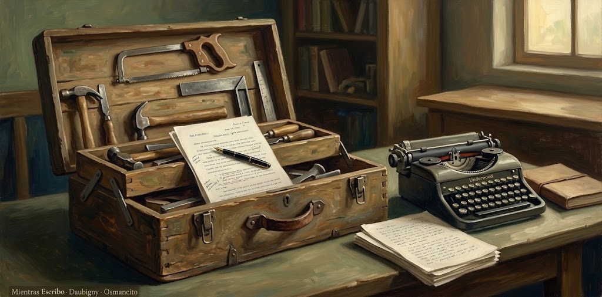
Mientras Escribo es el título castellano de On Writing, el libro en que Stephen King cuenta cómo llegó al oficio de escribir y cómo se hace. Scribner lo publicó el 3 de octubre de 2000 y Plaza & Janés lo editó en castellano en 2001. Esta primera parte reúne los tres prólogos y la primera sección del libro, «C.V.», que aquí se titula La Memoria: la infancia de King, la universidad, la lavandería, su primer libro y la bebida. La segunda parte empieza en «What Writing Is».
Los prólogos
La pregunta de Amy
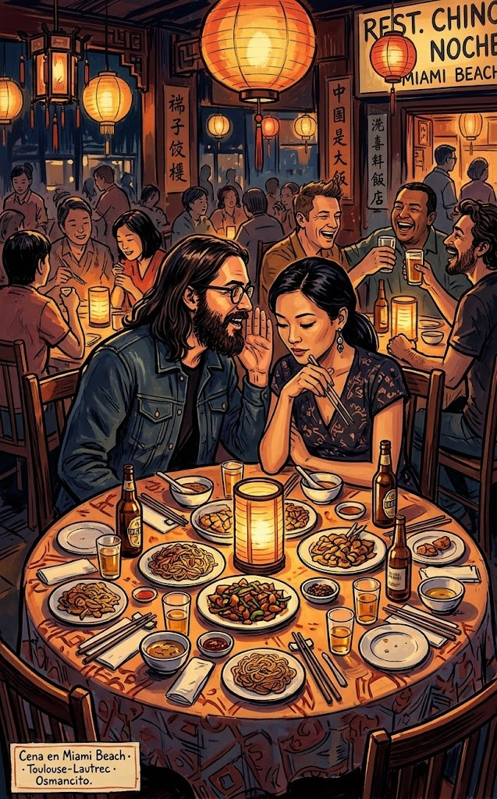
La publicista y música Kathi Kamen Goldmark reúne a varios escritores en los Rock Bottom Remainders. Dos conciertos entre libreros debían agotar la aventura.
No ocurrió así, porque el grupo nunca acabó de disolverse. Descubrimos que nos gustaba demasiado tocar juntos como para dejarlo y, con un par de músicos «infiltrados» al saxo y a la batería (además, en los primeros tiempos, de nuestro gurú musical, Al Kooper, en el corazón del grupo), sonábamos bastante bien. Habrías pagado por oírnos. No mucho, no lo que cuesta U2 o la E Street Band, pero quizá lo que los veteranos llaman «dinero de bar de carretera». Nos fuimos de gira, escribimos un libro sobre aquello (mi mujer hizo las fotos y bailó cada vez que le dio la gana, que fue bastante a menudo) y seguimos tocando de vez en cuando, a veces como The Remainders y otras como Raymond Burr's Legs. Los integrantes van y vienen: el columnista Mitch Albom ha sustituido a Barbara en los teclados y Al ya no toca con el grupo porque Kathi y él no se llevan bien; pero el núcleo sigue siendo Kathi, Amy, Ridley, Dave, Mitch Albom y yo... además de Josh Kelly a la batería y Erasmo Paolo al saxo.
Párrafo 3
Los músicos profesionales son los «infiltrados»: sostienen a unos escritores que tocan por gusto. Amy Tan, Ridley Pearson, Dave Barry y Barbara Kingsolver pertenecen a ese grupo de colegas; Al Kooper fue su director musical. U2 es una banda de rock irlandesa; la E Street Band acompaña al músico Bruce Springsteen. Raymond Burr, cuyo nombre usan para otra ocurrencia del grupo, fue actor de televisión y cine. Su mujer es Tabitha, que aparecerá más adelante en estos recuerdos. La comparación con los grandes conciertos fija una escala modesta, la de una banda que podría ganarse la noche en un bar. King empieza hablando de un oficio que practica sin dominarlo. Esa posición le permite acercarse al suyo sin convertir el éxito en una medalla de sabiduría.
Durante una cena, Amy Tan señala una pregunta ausente en sus encuentros con lectores: nadie le pregunta por el lenguaje. King encuentra el motivo que le faltaba para escribir este libro.
La respuesta fácil es que alguien que ha vendido tantos libros de ficción como yo debe de tener algo que valga la pena decir sobre cómo escribirla, pero la respuesta fácil no siempre es la verdadera. El coronel Sanders vendió una cantidad de pollo frito de la hostia, pero no estoy seguro de que nadie quiera saber cómo lo hacía. Si iba a tener la presunción de decirle a la gente cómo escribir, sentía que necesitaba una razón mejor que mi éxito popular. Dicho de otro modo, no quería escribir un libro, ni siquiera uno tan breve como este, que me dejara sintiéndome un charlatán literario o un gilipollas trascendental. Ya hay suficientes libros así, y suficientes escritores de esos, en el mercado, gracias.
Párrafo 7
Harland Sanders fundó la cadena de restaurantes Kentucky Fried Chicken, conocida como KFC. La comparación separa dos cosas que suelen confundirse: vender mucho y saber explicar un trabajo. King no renuncia a hablar porque sea un autor popular; rechaza que las ventas basten como argumento. Lo que ofrece debe poder sostenerse en la página, sin pedir al lector que lo acepte por admiración.
Contará su formación y su oficio. Dedica el libro a Amy, recomienda The Elements of Style, manual de William Strunk Jr. y E. B. White que aconseja quitar palabras innecesarias, y agradece a su editor, Chuck Verrill.
La memoria
M1 · El paisaje con niebla
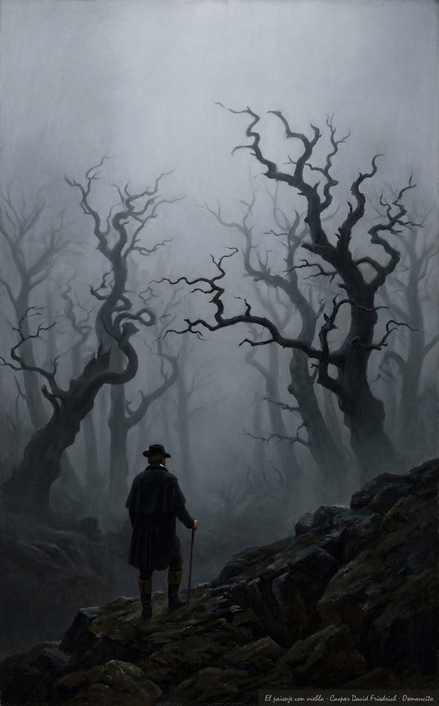
La escritora de memorias Mary Karr reconstruye su infancia en The Liars' Club con una continuidad que asombra a King.
Yo no soy así. Tuve una infancia extraña y a sacudidas, criado por una madre sola que se mudaba mucho durante mis primeros años y que, aunque no estoy del todo seguro, quizá nos dejó a mi hermano y a mí una temporada al cuidado de una de sus hermanas, porque durante un tiempo no podía hacerse cargo de nosotros, por razones económicas o emocionales. A lo mejor se limitaba a perseguir a nuestro padre, que acumuló toda clase de deudas y luego se largó cuando yo tenía dos años y mi hermano David, cuatro. Si fue así, nunca logró encontrarlo. Mi madre, Nellie Ruth Pillsbury King, fue una de las primeras mujeres liberadas de Estados Unidos, pero no por elección.
Párrafo 2
La última frase cambia el sentido de «liberada». Aquí designa la obligación de mantener una familia sin el padre, no una independencia elegida. También importa lo que King deja sin resolver: no sabe con certeza por qué se mudaban ni por qué los cuidaba una tía. El adulto puede proponer explicaciones; no puede convertirlas en recuerdos del niño.
Donde Karr ofrece un panorama, King encuentra recuerdos aislados entre niebla.
Lo que sigue son algunos de esos recuerdos, más unas cuantas instantáneas de los días algo más coherentes de mi adolescencia y mi primera juventud. Esto no es una autobiografía. Es, más bien, una especie de curriculum vitae: mi intento de mostrar cómo se formó un escritor. No cómo se fabricó un escritor; no creo que se pueda fabricar a los escritores, ni mediante las circunstancias ni por la voluntad propia (aunque antes sí creía esas cosas). El equipo viene en el paquete de origen. Pero no es, ni mucho menos, un equipo excepcional; creo que muchísima gente tiene al menos algo de talento para escribir y contar historias, y que esos talentos pueden fortalecerse y afinarse. Si no lo creyera, escribir un libro como este sería perder el tiempo.
Párrafo 4
Un curriculum vitae suele enumerar estudios y empleos; este reúne experiencias que hicieron crecer una capacidad. King distingue poseer alguna disposición de aprender a usarla. Su afirmación sobre el talento es una convicción personal, no una prueba de que exista un equipo innato identificable. Lo que promete enseñar es el trabajo sobre lo que uno ya puede hacer.
Ofrece imágenes de un crecimiento sin hilo secreto.
M2 · El niño forzudo
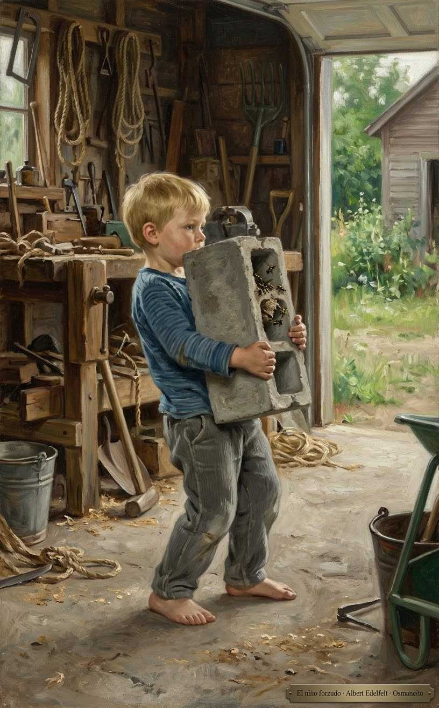
En casa de sus tíos en Maine, se imagina forzudo de circo.
Había encontrado un bloque de hormigón en un rincón del garaje y había conseguido levantarlo. Lo llevé despacio por el suelo liso de cemento, solo que en mi cabeza vestía un maillot de piel animal (probablemente de leopardo) y cruzaba con el bloque la pista central del circo. La enorme multitud guardaba silencio. Un foco de luz brillante, blanca y azulada, seguía mi extraordinario avance. Sus caras maravilladas lo decían todo: nunca habían visto a un niño de una fuerza tan increíble. «¡Y solo tiene dos años!», murmuró alguien, incrédulo.
Párrafo 2
El maillot es la prenda ceñida del forzudo. El niño no necesita abandonar el garaje para entrar en la pista. Cada objeto admite dos lecturas: el bloque pesa de verdad, pero el público existe solo para él. El recuerdo permite ver la imaginación mientras actúa, antes de que haya una página donde escribirla.
Sin que yo lo supiera, unas avispas habían construido un pequeño nido en la mitad inferior del bloque. Una de ellas, quizá cabreada por el traslado, salió volando y me picó en la oreja. El dolor fue deslumbrante, como una inspiración venenosa. Era el peor dolor que había sufrido en mi corta vida, pero solo conservó el primer puesto unos segundos. Cuando dejé caer el bloque sobre un pie descalzo y me aplasté los cinco dedos, me olvidé por completo de la avispa. No recuerdo si me llevaron al médico, y mi tía Ethelyn tampoco (mi tío Oren, a quien sin duda pertenecía el Bloque de Hormigón Maligno, lleva casi veinte años muerto), pero ella recuerda la picadura, los dedos aplastados y mi reacción. «¡Cómo aullabas, Stephen!», dijo. «Desde luego, aquel día estabas en plena forma vocal».
Párrafo 3
El segundo dolor desplaza al primero antes de que el relato pueda acomodarse. La broma final es de la tía; el sufrimiento sigue siendo del niño. Las dos voces conviven sin que una anule a la otra. Las edades y el tiempo transcurrido pertenecen al momento en que King escribe estas memorias.
M3 · Siete huevos
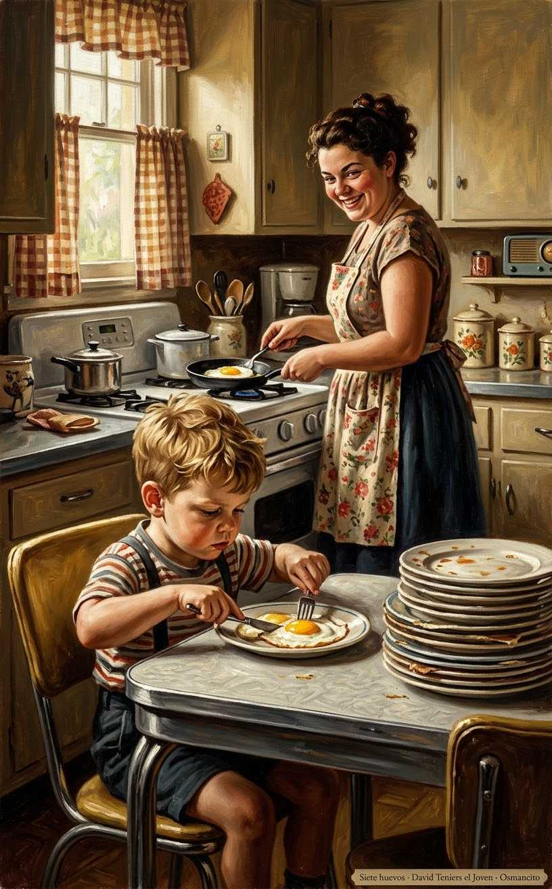
En Wisconsin, su madre trabaja mientras distintas niñeras cuidan a los hermanos.
Durante nuestra época de Wisconsin hubo un desfile de niñeras. No sé si se iban porque David y yo éramos difíciles, porque encontraban trabajos mejor pagados o porque mi madre exigía un nivel que no estaban dispuestas a alcanzar; solo sé que hubo muchas. La única que recuerdo con claridad es Eula, o quizá fuera Beulah. Era adolescente, era grande como una casa y se reía mucho. Eula-Beulah tenía un maravilloso sentido del humor, eso podía reconocerlo incluso con cuatro años, pero era un sentido del humor peligroso: parecía haber un trueno escondido en cada ataque de alegría, entre palmadas, meneos del culo y sacudidas de cabeza. Cuando veo esas grabaciones con cámara oculta en las que una niñera, de pronto, toma impulso y golpea a los niños, siempre pienso en mis días con Eula-Beulah.
Párrafo 2
El recuerdo conserva juntas la diversión y la amenaza. Llamar «humor» a lo que hacía la niñera no absuelve sus golpes: muestra lo difícil que resulta para un niño reconocer el peligro cuando viene mezclado con caricias y risas. Incluso la vacilación del nombre pertenece a esa memoria incompleta.
Eula-Beulah alterna cosquillas, golpes y bromas asfixiantes. Un desayuno se vuelve desafío: Stevie come siete huevos. Después vomita, recibe otro golpe y queda encerrado en el armario.
Me arrastré hasta el fondo del armario, con los abrigos y vestidos de mamá rozándome la espalda. Empecé a eructar: eructos largos y sonoros que quemaban como fuego. No recuerdo tener náuseas, pero debí de tenerlas, porque, cuando abrí la boca para soltar otro eructo abrasador, en vez de eso volví a vomitar. Encima de todos los zapatos de mi madre. Ese fue el final de Eula-Beulah. Cuando mi madre volvió del trabajo aquel día, la niñera dormía profundamente en el sofá y el pequeño Stevie estaba encerrado en el armario, profundamente dormido, con huevos fritos a medio digerir secándosele en el pelo.
Párrafo 8
El desenlace no necesita explicar por qué despiden a la niñera. La distribución de los cuerpos basta: ella en el sofá, él encerrado. El detalle del pelo devuelve a la escena lo que la palabra «broma» podía ocultar. El humor del adulto permite contar el episodio; no vuelve inofensivo lo ocurrido.
M4 · El tejado
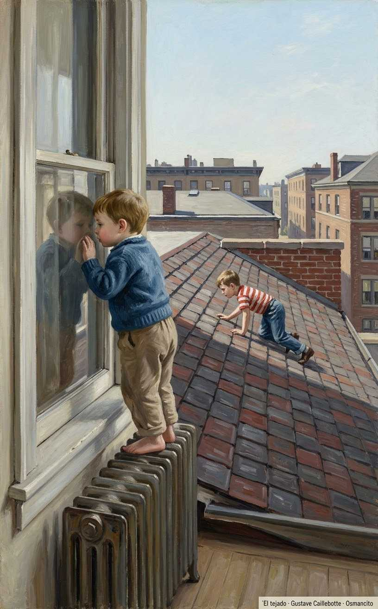
Nuestra estancia en West De Pere no fue larga ni exitosa. Nos echaron del apartamento del tercer piso cuando un vecino vio a mi hermano de seis años gateando por el tejado y llamó a la policía. No sé dónde estaba mi madre cuando ocurrió. Tampoco sé dónde estaba la niñera de aquella semana. Solo sé que yo estaba en el baño, con los pies descalzos sobre el radiador, mirando para ver si mi hermano se caía del tejado o conseguía volver al baño sano y salvo. Consiguió volver. Ahora tiene cincuenta y cinco años y vive en New Hampshire.
Párrafo 1
El niño puede mirar, pero no intervenir. El relato no explica qué hacía David en el tejado ni completa las ausencias de los adultos. El salto final hasta sus cincuenta y cinco años descarga la tensión sin borrar aquella indefensión. Ese «ahora» corresponde a la escritura del libro, no al día en que se lee.
M5 · Ver morir
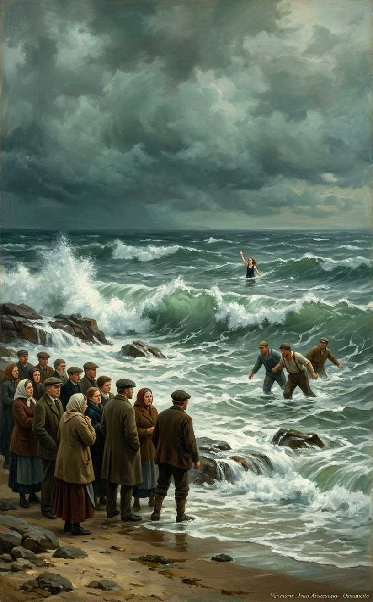
Cuando tenía cinco o seis años, le pregunté a mi madre si alguna vez había visto morir a alguien. Sí, dijo, había visto morir a una persona y había oído morir a otra. Le pregunté cómo se podía oír morir a una persona y me contó que había sido una chica que se ahogó frente a Prout's Neck en los años veinte. Dijo que la chica había nadado más allá de la corriente de resaca, no había podido volver y había empezado a gritar pidiendo ayuda. Varios hombres intentaron llegar hasta ella, pero aquel día la corriente había formado un arrastre feroz y todos tuvieron que retroceder. Al final solo pudieron quedarse allí, turistas y vecinos, incluida la adolescente que llegaría a ser mi madre, esperando un bote de rescate que nunca llegó y escuchando los gritos de aquella chica hasta que se le agotaron las fuerzas y se hundió. Su cuerpo apareció en la costa de New Hampshire, dijo mi madre. Le pregunté cuántos años tenía la chica. Mamá dijo que catorce; después me leyó un cómic y me mandó a la cama. Otro día me contó lo de la persona que había visto morir: un marinero que saltó desde el tejado del hotel Graymore, en Portland, Maine, y cayó en la calle.
Párrafo 1
La diferencia entre ver y oír organiza dos escenas que el hijo recibe de segunda mano. La primera se queda en la espera y en una voz que deja de sonar. Después llegan un cómic y la cama: lo insoportable entra en la vida doméstica sin que esta deje de funcionar. La edad de la chica hace visible que la madre también fue una niña frente a algo que no podía impedir.
«Se desparramó», dijo mi madre con su tono más natural. Hizo una pausa y añadió: «Lo que le salió de dentro era verde. Nunca lo he olvidado».
Párrafo 2
La madre entrega un color en lugar de una explicación. Ese detalle queda disponible para la imaginación del hijo, que no presenció nada. La memoria puede transmitir una imagen con tanta fuerza que termine siendo inolvidable también para quien solo la escuchó.
Él tampoco lo olvida.
M6 · No va a doler
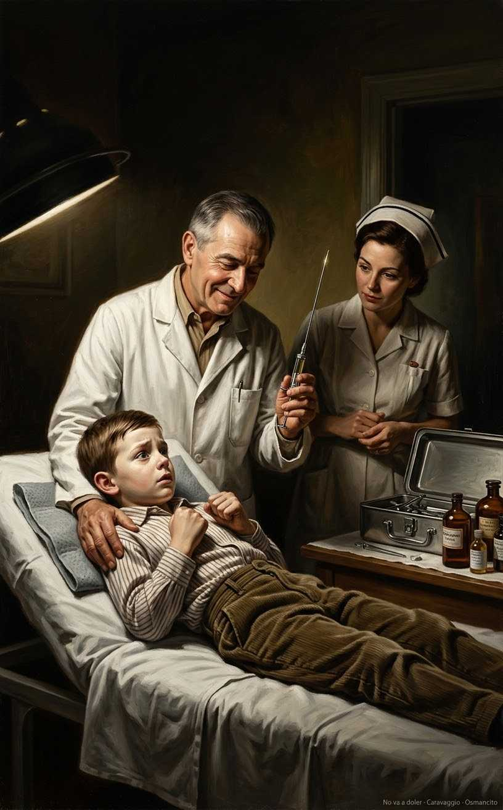
Enfermo durante casi todo el primer curso. A la garganta se suman los oídos. Un especialista lo acuesta, coloca una tela bajo su cabeza y prepara una aguja. Le promete que no dolerá.
Me deslizó la aguja en el oído y me perforó el tímpano. El dolor superaba cualquier cosa que haya sentido después; lo único comparable fue el primer mes de recuperación tras atropellarme una furgoneta en el verano de 1999. Aquel dolor duró más, pero no fue tan intenso. La perforación del tímpano fue un dolor fuera de este mundo. Grité. Dentro de mi cabeza sonó algo: un beso fuerte y ruidoso. Me salió líquido caliente del oído, como si hubiera empezado a llorar por el agujero equivocado. Dios sabe que para entonces ya lloraba bastante por los correctos. Levanté la cara empapada y miré, sin poder creerlo, al médico de los oídos y a su enfermera. Después miré la tela que la enfermera había extendido sobre el tercio superior de la camilla. Tenía una gran mancha mojada. También había en ella finos hilos de pus amarillo.
Párrafo 5
El dolor se vuelve legible mediante sonidos, calor y líquidos. No hace falta haber sufrido la intervención para seguir lo que le ocurre al niño. La comparación con el atropello pertenece a la mirada del adulto y abre por un instante el tiempo del relato: quien recuerda ha vivido otros dolores y aun así vuelve a este.
El médico lo felicita y da todo por terminado.
A la semana siguiente mi madre llamó a otro taxi, volvimos a la consulta del médico de los oídos y me encontré una vez más acostado de lado, con el cuadrado de tela absorbente bajo la cabeza. El médico volvió a producir el olor a alcohol, un olor que todavía asocio, como supongo que le ocurre a mucha gente, con el dolor, la enfermedad y el terror, y con él, la larga aguja. Volvió a asegurarme que no dolería y yo volví a creerle. No del todo, pero lo suficiente para quedarme quieto mientras la aguja se deslizaba en mi oído.
Párrafo 7
«No del todo» mide cuánto ha cambiado la confianza. El niño ya dispone de una experiencia contraria a la promesa, pero todavía obedece. La repetición del taxi, la tela y el olor permite sentir que reconoce el peligro antes de poder resistirse a él.
Duele otra vez. Cinco días después, el tercer viaje termina con gritos y resistencia. La madre y la enfermera lo sujetan; el médico consigue intervenir. Para King, aquel último grito sigue resonando.
M7 · Las amígdalas
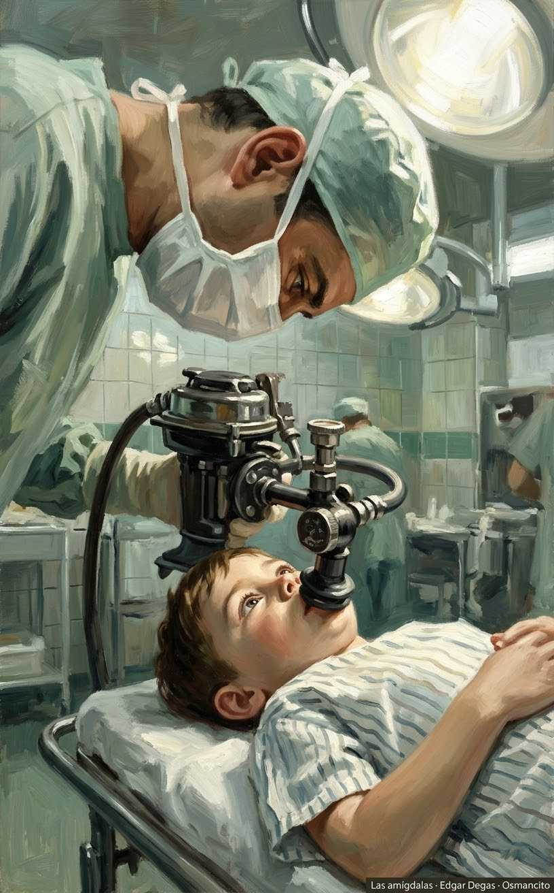
En el invierno siguiente vuelve el taxi, esta vez a un especialista de garganta. El olor a alcohol reactiva su miedo.
Sin embargo, lo único que apareció esta vez fue una especie de hisopo para la garganta. Escocía y sabía fatal, pero después de la larga aguja del médico de los oídos era un paseo por el parque. El médico de la garganta se puso un aparato interesante que se sujetaba alrededor de la cabeza con una correa. Tenía un espejo en medio y una luz intensa y brillante que salía de él como un tercer ojo. Me miró por la garganta durante mucho rato, animándome a abrir más la boca hasta que me crujieron las mandíbulas, pero no me clavó agujas y por eso lo quise. Al cabo de un rato me dejó cerrar la boca y llamó a mi madre.
Párrafo 2
La medida del alivio no es la ausencia de dolor, sino la ausencia de la aguja. El niño juzga al nuevo médico con el único criterio que le importa. La descripción del espejo como tercer ojo conserva su extrañeza sin pedirle vocabulario clínico.
Hay que quitarle las amígdalas. Bajo las luces del quirófano, le prometen todo el helado que quiera al despertar.
Me bajó un aparato sobre la cara. En el ojo de mi memoria parece un motor fuera de borda. Respiré hondo y todo se volvió negro. Cuando desperté, en efecto, me dejaron tomar todo el helado que quisiera, lo cual fue una buena broma a mi costa, porque no quería nada. Sentía la garganta hinchada y gruesa. Pero era mejor que el viejo truco de la aguja en el oído. Ah, sí. Cualquier cosa habría sido mejor que el viejo truco de la aguja en el oído. Quítenme las amígdalas si hace falta, pónganme una jaula de acero para pájaros en la pierna si tienen que hacerlo, pero que Dios me libre del otiólogo.
Párrafo 8
«Otiólogo» conserva el nombre que el niño daba al médico de los oídos. La promesa del helado se cumple literalmente y fracasa como consuelo: después de la operación ya no puede disfrutarlo. El recuerdo vuelve a separar lo que un adulto ofrece de lo que un niño puede sentir.
M8 · Escribe uno tuyo
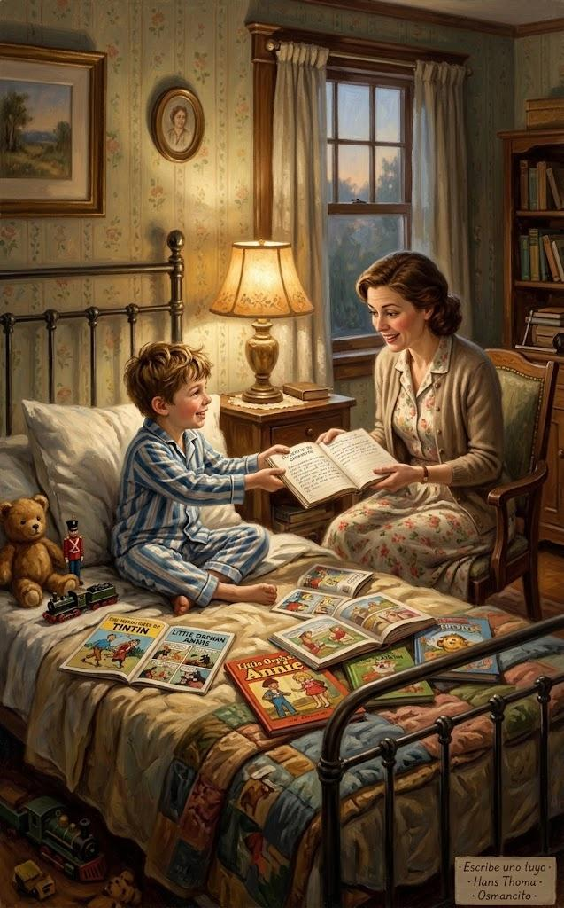
Debe repetir primer curso. Su hermano avanza; Stevie permanece en casa.
Pasé casi todo aquel año en la cama o sin poder salir de casa. Leí aproximadamente seis toneladas de cómics, pasé a Tom Swift y Dave Dawson (un heroico piloto de la Segunda Guerra Mundial cuyos distintos aviones siempre «arañaban altura con las hélices») y después llegué a los espeluznantes cuentos de animales de Jack London. En algún momento empecé a escribir mis propias historias. La imitación precedió a la creación: copiaba palabra por palabra los cómics de Combat Casey en mi cuaderno Blue Horse y a veces añadía descripciones propias donde me parecía oportuno. «Acampaban en una gran habitación de granja, muy dratty», podía escribir; pasó otro año o dos antes de que descubriera que drat y draft eran palabras distintas. En aquella misma época recuerdo que creía que details eran dentals y que una bitch era una mujer altísima. Un son of a bitch tenía muchas probabilidades de ser jugador de baloncesto. A los seis años, la mayoría de tus bolas del bingo todavía flotan por el bombo.
Párrafo 2
Los errores dependen del inglés. Drat expresa fastidio; draft puede significar corriente de aire. Donde el niño pone dratty quería decir drafty, lleno de corrientes: la traducción conserva ese tropiezo en inglés para no inventarle un error diferente. Details son detalles y dentals remite a los dientes; bitch significa perra y se usa como insulto, mientras que son of a bitch equivale a hijo de puta. King recuerda palabras que podía repetir sin entender. Tom Swift pertenece a una serie de aventuras juveniles; Dave Dawson es el piloto que ya presenta el pasaje, y London es el autor de los relatos de animales que lee después. El cuaderno, los cómics y las palabras mal oídas forman un aprendizaje todavía sin separar lectura y escritura.
Al final le enseñé a mi madre uno de aquellos híbridos copiados y quedó encantada: recuerdo su sonrisa un poco asombrada, como si no pudiera creer que un hijo suyo fuera tan listo, prácticamente un maldito prodigio, por el amor de Dios. Nunca había visto aquella expresión en su cara, al menos no por algo que yo hubiera hecho, y me encantó con toda el alma.
Párrafo 3
Lo nuevo para el niño no es que exista una historia: es que su madre lo mire de otra manera por haberla escrito. Esa recompensa llega antes que cualquier lector desconocido o pago. Por eso la pregunta sobre si la inventó él puede modificar de golpe todo el valor de la escena.
Al saber que ha copiado, su madre se decepciona. Le devuelve el cuaderno y lo anima a inventar una historia propia.
M9 · A cuarto el cuento
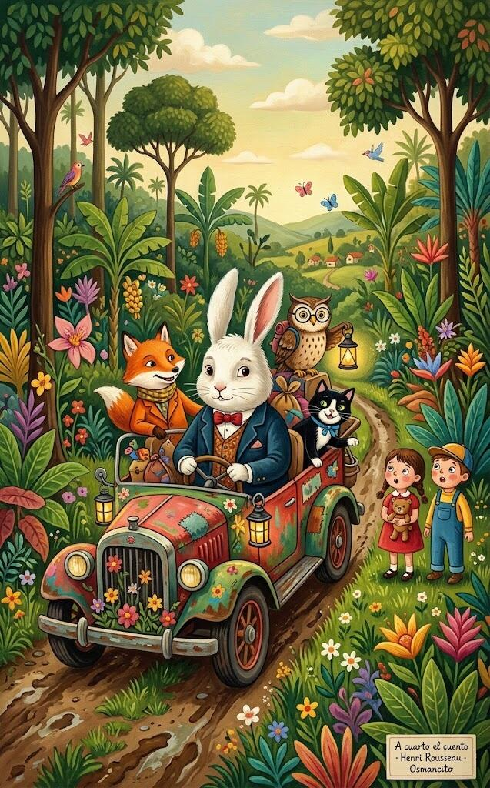
Inventar le abre más posibilidades de las que podría agotar.
Al final escribí un cuento sobre cuatro animales mágicos que iban de un lado a otro en un coche viejo ayudando a niños pequeños. Su jefe era un gran conejo blanco llamado Mr. Rabbit Trick. A él le tocaba conducir. El cuento tenía cuatro páginas, escritas laboriosamente a lápiz, con letras de imprenta. Que yo recuerde, nadie saltaba en él desde el tejado del hotel Graymore. Cuando lo terminé se lo di a mi madre, que se sentó en la sala, puso el bolso en el suelo junto a ella y lo leyó de una vez. Me daba cuenta de que le gustaba, porque se reía donde debía, pero no podía saber si era porque yo le gustaba y quería hacerme sentir bien o porque de verdad era bueno.
Párrafo 2
El hotel devuelve al relato la muerte que le contó su madre, pero aquí aparece por contraste: esta vez la invención no necesita repetir aquel horror. La duda sobre el elogio materno tampoco desaparece. El niño distingue ya entre ser querido y conseguir que una historia funcione para otro.
«¿Este no lo has copiado?», me preguntó al terminar. Dije que no, que no lo había copiado. Dijo que era lo bastante bueno para estar en un libro. Nada de lo que nadie me haya dicho después me ha hecho más feliz. Escribí cuatro cuentos más sobre Mr. Rabbit Trick y sus amigos. Me dio veinticinco centavos por cada uno y los hizo circular entre sus cuatro hermanas, que creo que sentían un poco de lástima por ella. Al fin y al cabo, ellas seguían casadas; sus hombres se habían quedado. Era verdad que el tío Fred no tenía mucho sentido del humor y se empeñaba en llevar la capota del descapotable subida; también era verdad que el tío Oren bebía bastante y tenía oscuras teorías sobre cómo los judíos dirigían el mundo, pero estaban allí. Ruth, en cambio, se había quedado cargando con el bebé cuando Don se largó. Quería que vieran que, por lo menos, era un bebé con talento.
Párrafo 3
Don es el padre ausente; Ruth es la madre cuyo nombre completo apareció antes. El pago compra cuentos y también le permite a ella presentarse ante sus hermanas desde algo distinto de la lástima. El relato no adopta las ideas antisemitas de Oren: las coloca entre las razones por las que tener marido no equivalía a tener una vida mejor.
Cuatro cuentos a veinticinco centavos: su primer dólar escribiendo.
M10 · La jungla
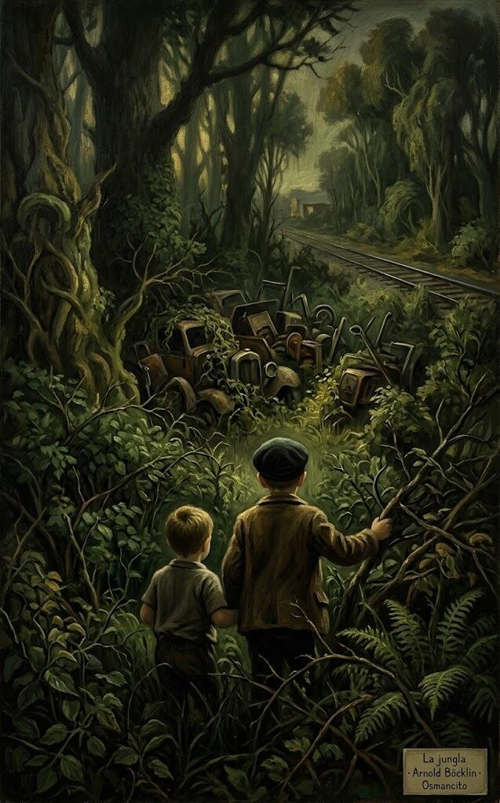
Nos mudamos a Stratford, Connecticut. Para entonces yo estaba en segundo curso y perdidamente enamorado de la guapa adolescente que vivía al lado. De día no me miraba dos veces, pero por la noche, mientras me iba quedando dormido en la cama, huíamos una y otra vez del cruel mundo de la realidad. Mi nueva maestra era la señora Taylor, una mujer amable, con pelo gris a lo Elsa Lanchester en Bride of Frankenstein y ojos saltones. «Cuando hablamos, siempre me dan ganas de poner las manos debajo de los ojazos de la señora Taylor, por si se le caen», decía mi madre.
Párrafo 1
La actriz Elsa Lanchester interpreta a la novia del monstruo en la película Bride of Frankenstein. El peinado de la maestra pertenece a esa comparación visual, no a una descripción de su carácter. La madre aporta otra exageración y el niño lleva consigo ambas cosas: el afecto por la maestra y una imagen que vuelve inolvidable su cara.
Cerca de casa hay un terreno salvaje que los hermanos llaman la jungla. Allí, sin tiempo para volver al baño, Stevie sigue el consejo de David: se limpia con hojas. Son hiedra venenosa.
Dos días después estaba rojo vivo desde la parte de atrás de las rodillas hasta los omóplatos. El pene se salvó, pero los testículos se convirtieron en semáforos. Me parecía que el culo me picaba hasta las costillas. Sin embargo, lo peor de todo era la mano con la que me había limpiado: se hinchó hasta alcanzar el tamaño de la de Mickey Mouse después de que Donald Duck se la golpee con un martillo, y se formaron ampollas gigantescas donde los dedos se rozaban. Cuando reventaron dejaron hondos hoyos de carne rosada en carne viva. Durante seis semanas me senté en baños tibios de almidón, sintiéndome desdichado, humillado y estúpido, mientras oía por la puerta abierta cómo mi madre y mi hermano se reían, escuchaban la lista de éxitos de Peter Tripp en la radio y jugaban a Crazy Eights.
Párrafo 8
Mickey Mouse y Donald Duck son personajes de dibujos animados de Disney. Las comparaciones convierten su cuerpo en un dibujo animado: semáforos, una mano desmesurada, un martillazo. Esa mirada no le quita el escozor. Lo peor es oír la diversión de los otros desde el baño: la vergüenza tiene un lugar y una puerta abierta. Peter Tripp aparece como la voz radiofónica de una lista musical; Crazy Eights, como el juego que ellos pueden seguir jugando mientras él queda apartado.
M11 · El Súper Duper Electromán
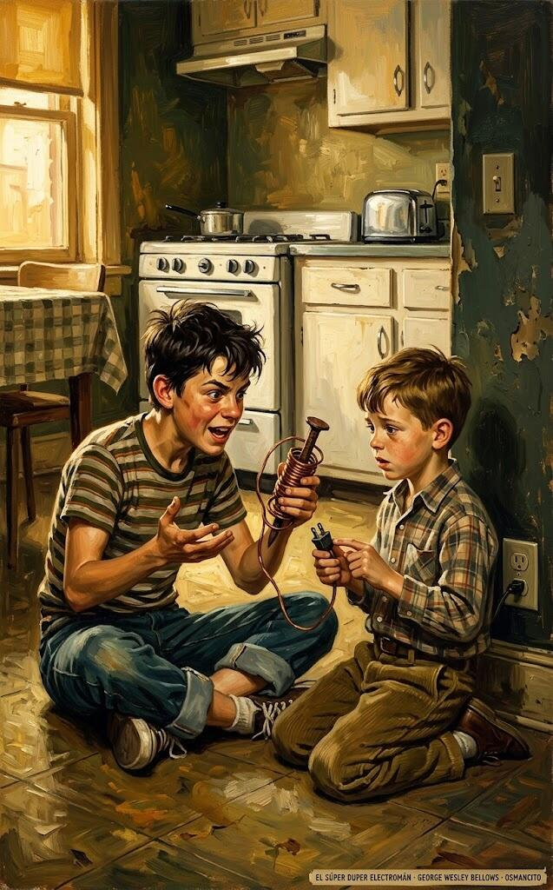
David inventa experimentos y comparte sus riesgos con Stevie. Una presa improvisada ya ha inundado parte de la calle. Ahora prepara un proyecto escolar.
Esto debió de ser en 1958. Yo iba a la Center Grammar School; Dave, a la Stratford Junior High. Mamá trabajaba en la lavandería de Stratford, donde era la única mujer blanca del equipo de la calandra. Eso hacía, alimentar de sábanas la calandra, mientras Dave construía su proyecto para la feria de ciencias. Mi hermano mayor no era de los chicos que se conformaban con dibujar ranas en cartulinas o con fabricar La Casa del Futuro con piezas de plástico Tyco y rollos de papel higiénico pintados; Dave apuntaba a las estrellas. Aquel año su proyecto era el Súper Duper Electroimán de Dave. Mi hermano sentía gran cariño por las cosas súper duper y por las cosas que empezaban con su propio nombre; esta última costumbre culminó en Dave's Rag, al que llegaremos dentro de poco.
Párrafo 2
Una calandra es una máquina de rodillos para alisar telas. Mientras la madre mantiene la casa con ese trabajo repetido, David quiere fabricar algo extraordinario. La oposición no convierte una actividad en superior a la otra: deja al lector ver de dónde salen el tiempo y los materiales de la aventura infantil. «Súper duper» conserva la fanfarronería del nombre que le pone el niño.
El primer electroimán usa un clavo, alambre y una pila. David quiere más potencia: sustituye la pila por el enchufe y encarga la prueba a Stevie.
Vacilé, reconózcanme al menos eso, pero al final el entusiasmo maníaco de Dave fue demasiado fuerte para resistirlo. Lo enchufé. No hubo magnetismo apreciable, pero el aparato sí fundió todas las luces y los electrodomésticos de nuestro apartamento, todas las luces y los electrodomésticos del edificio y todas las luces y los electrodomésticos del edificio de al lado (donde mi chica soñada vivía en un apartamento de la planta baja). Algo saltó en el transformador de delante y vinieron unos policías. Dave y yo pasamos una hora horrible mirando desde la ventana del dormitorio de nuestra madre, la única que daba a la calle (todas las demás ofrecían una buena vista del patio trasero, sin hierba y salpicado de mierdas, donde el único ser vivo era un perro sarnoso llamado Roop-Roop). Cuando se fueron los policías llegó un camión de la compañía eléctrica. Un hombre con botas de púas trepó al poste entre los dos edificios para examinar el transformador. En otras circunstancias aquello nos habría absorbido por completo, pero aquel día no. Aquel día solo podíamos preguntarnos si nuestra madre iría a vernos al reformatorio. Al final volvieron las luces y el camión se marchó. No nos pillaron y sobrevivimos para luchar otro día. Dave decidió que para su proyecto de ciencias quizá construiría un Súper Duper Planeador en vez de un Súper Duper Electroimán. Yo, me dijo, podría hacer el primer vuelo. ¿No sería estupendo?
Párrafo 8
La escala del apagón crece de una vivienda a la siguiente. La ambición del experimento se cumple al revés: no mueve el mundo, pero alcanza a todo el vecindario. El planeador final devuelve a David su entusiasmo intacto y a Stevie el mismo puesto de siempre, el de probar lo que su hermano construye. No es una propuesta para repetir: el relato muestra precisamente el peligro de conectar aquel montaje a la red.
M12 · Video bullshit
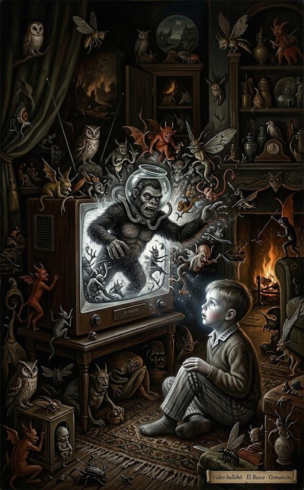
La televisión llega en 1958. La primera película que recuerda ver es Robot Monster, con su monstruo de traje de simio y pecera en la cabeza.
También veía Highway Patrol, con Broderick Crawford como el intrépido Dan Matthews, y One Step Beyond, presentado por John Newland, el hombre de los ojos más inquietantes del mundo. Estaban Cheyenne y Sea Hunt, Your Hit Parade y Annie Oakley; estaba Tommy Rettig como el primero de los muchos amigos de Lassie, Jock Mahoney como The Range Rider y Andy Devine chillando «¡Eh, Wild Bill, espérame!» con su extraña voz aguda. Había todo un mundo de aventuras vividas por otros, empaquetado en blanco y negro, de catorce pulgadas de ancho y patrocinado por marcas cuyos nombres todavía me suenan a poesía. Me encantaba todo.
Párrafo 2
Lassie es la perra de la serie que lleva su nombre, y Tommy Rettig fue el primero de los muchos amigos que tuvo. Los títulos forman la programación que el niño descubre, con presentadores, actores y personajes mezclados en el recuerdo. The Range Rider y Annie Oakley son series del Oeste; esa clase de aventura comparte pantalla con los demás programas de la lista. No hace falta haberlos visto para percibir lo que los reúne aquí: voces y caras que convierten una caja pequeña en un mundo deseable.
Pero la televisión llegó relativamente tarde a casa de los King y me alegro. Si lo piensas, pertenezco a un grupo bastante selecto: el último puñado de novelistas estadounidenses que aprendieron a leer y escribir antes de aprender a tragarse una ración diaria de mierda en vídeo. Puede que esto no tenga importancia. Por otra parte, si estás empezando como escritor, podrías hacer cosas peores que pelar el cable del enchufe del televisor, enrollarle un clavo y volver a meterlo en la pared. A ver qué revienta y hasta dónde.
Párrafo 3
La violencia del consejo recoge el electroimán del episodio anterior. Funciona como una broma contra el tiempo que la pantalla puede quitarle a la lectura, no como una indicación segura de bricolaje. El juicio también contiene una vacilación: King admite que quizá importe poco haber aprendido primero con libros. Acaba de decir que disfrutaba de la televisión; no está fingiendo que nunca lo sedujo.
Lo deja como sugerencia.
M13 · El Ackermonster
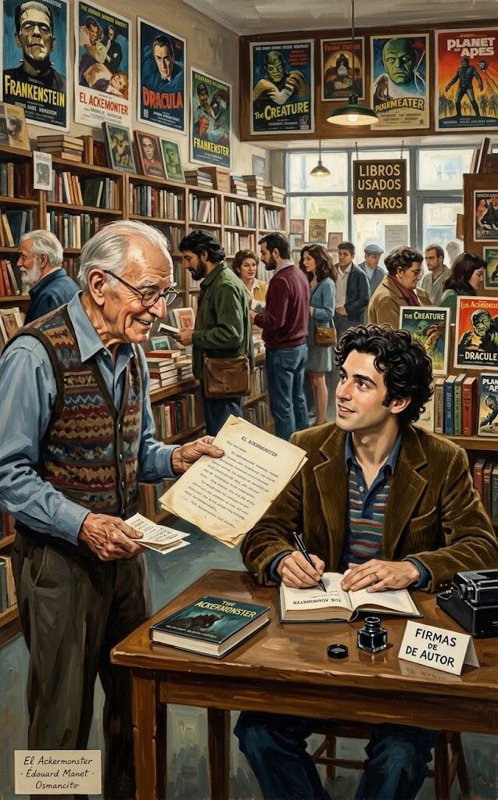
A finales de los años cincuenta, un agente literario y coleccionista compulsivo de recuerdos de ciencia ficción llamado Forrest J. Ackerman cambió la vida de miles de chicos, yo entre ellos, cuando empezó a editar una revista llamada Famous Monsters of Filmland. Pregúntenle por esa revista a cualquiera que haya estado vinculado a los géneros de fantasía, terror o ciencia ficción durante los últimos treinta años y recibirán una carcajada, un destello en los ojos y un torrente de recuerdos luminosos; prácticamente lo garantizo.
Párrafo 1
La revista ofrece una forma de pertenencia: otros también disfrutan de los monstruos que a King le interesan. Ackerman aparece como intermediario entre ese entusiasmo y la posibilidad de publicar. La garantía final es la del aficionado que recuerda, no una encuesta sobre todos los lectores del género.
En 1960 envía a Spacemen, otra revista de Ackerman sobre cine de ciencia ficción, su primer cuento para publicación.
Rechazaron mi cuento, pero Forry lo guardó. (Forry lo guarda todo, como les dirá cualquiera que haya visitado su casa, la Ackermansion). Unos veinte años después, mientras yo firmaba autógrafos en una librería de Los Ángeles, Forry apareció en la fila... con mi cuento, escrito a un espacio con la máquina Royal, desaparecida hacía mucho, que mi madre me había regalado por Navidad el año en que cumplí once. Quería que se lo firmara y supongo que lo hice, aunque todo el encuentro fue tan irreal que no puedo estar del todo seguro. Eso sí que son fantasmas. Madre mía.
Párrafo 3
Forry es el nombre familiar de Ackerman; la Ackermansion es su casa. El objeto que devuelve del pasado no ha cambiado, pero sí la posición de quien lo escribió: ahora hay una fila de lectores esperando su firma. El cuento rechazado llega a esa fila y hace coincidir por un momento al principiante con el autor conocido.
M14 · Yo fui un ladrón de tumbas adolescente
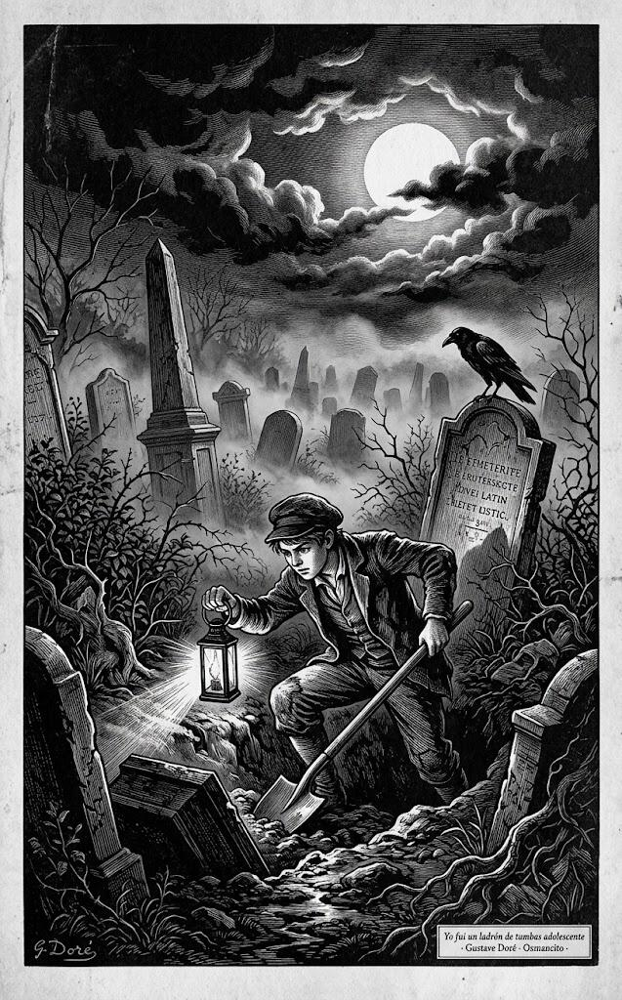
El primer cuento que de verdad publiqué apareció en una revista de aficionados al terror que editaba Mike Garrett, de Birmingham, Alabama (Mike sigue por aquí y sigue en el negocio). Publicó aquella novela corta con el título «In a Half-World of Terror», pero a mí me sigue gustando mucho más el mío. El mío era «I Was a Teen-Age Grave-robber». ¡Súper duper! ¡Pum!
Párrafo 1
El título que eligió King significa «Yo fui un ladrón de tumbas adolescente»; el de publicación, «En un medio mundo de terror». La diferencia deja ver un primer desacuerdo entre el escritor y quien lo edita. Aquí King lo resuelve con un gusto propio, sin demostrar que su opción fuera mejor. Garrett queda identificado en el pasaje por su trabajo como editor; la noticia de que sigue activo pertenece al momento del libro.
M15 · El Problema de Ruth
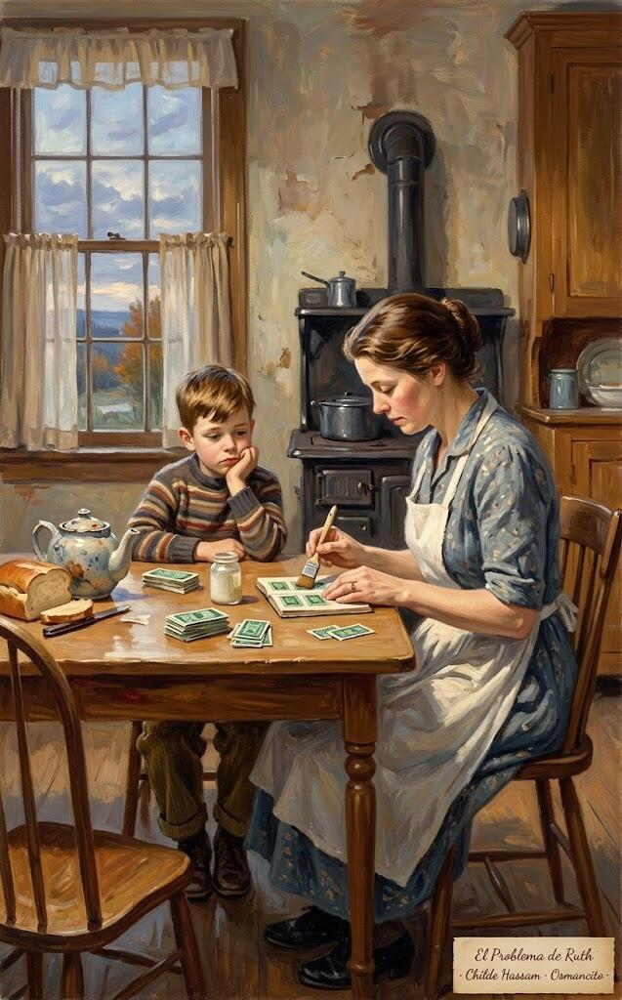
Mi primera idea de cuento verdaderamente original, creo que uno siempre recuerda la primera, llegó hacia el final de los ocho años de benigno reinado de Ike. Estaba sentado a la mesa de la cocina de nuestra casa de Durham, Maine, viendo cómo mi madre pegaba hojas de S&H Green Stamps en una libreta. (Para más historias pintorescas sobre Green Stamps, véase The Liars' Club). Nuestro pequeño trío familiar había vuelto a Maine para que mamá pudiera cuidar a sus padres en sus últimos años. Mama rondaba entonces los ochenta, era obesa, hipertensa y casi ciega; Daddy Guy tenía ochenta y dos, era flaco, taciturno y propenso a estallidos ocasionales a lo Donald Duck que solo mi madre podía entender. Mamá llamaba «Fazza» a Daddy Guy.
Párrafo 1
Ike es Dwight D. Eisenhower, presidente de Estados Unidos entre 1953 y 1961. Los S&H Green Stamps eran cupones que los comercios daban con las compras: se pegaban en libretas y se canjeaban por productos. Mama y Daddy Guy son los abuelos maternos del narrador. Las formas familiares de nombrarlos mantienen la perspectiva de la casa; los datos sobre su edad y salud proceden de ese recuerdo, no de una historia clínica.
Las tías creen resolver dos necesidades: que sus padres reciban cuidados y que Ruth deje de mudarse con sus hijos y de encadenar trabajos agotadores.
Creo que odiaba su nuevo trabajo: al intentar cuidar de ella, sus hermanas convirtieron a nuestra madre, autosuficiente, divertida y un poco chiflada, en una aparcera que llevaba una vida casi sin dinero en efectivo. Lo que le enviaban cada mes cubría la comida, pero poco más. Nos mandaban cajas de ropa. Hacia el final de cada verano, el tío Clayt y la tía Ella (que creo que ni siquiera eran parientes de verdad) traían cajas de verduras en conserva y confituras. La casa en la que vivíamos pertenecía a la tía Ethelyn y al tío Oren. Y, una vez allí, mamá quedó atrapada. Consiguió otro trabajo de verdad después de que murieran los viejos, pero vivió en aquella casa hasta que se la llevó el cáncer. Cuando abandonó Durham por última vez, David y su mujer Linda la cuidaron durante las semanas finales de su última enfermedad, tengo la impresión de que seguramente estaba más que dispuesta a marcharse.
Párrafo 3
«Aparcera» compara el acuerdo familiar con una vida dependiente de una propiedad ajena: recibe techo y alimentos, pero apenas dinero con el que decidir. La ayuda de las hermanas puede ser sincera y, a la vez, estrechar sus posibilidades. King no presenta como certeza lo que ella sentía al final; cierra con una impresión del hijo.
M16 · Happy Stamps
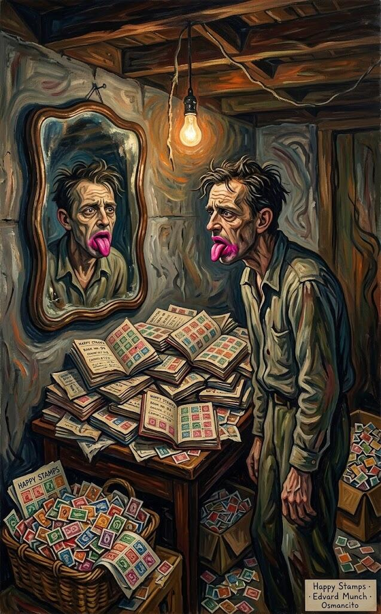
Las ideas aparecen al juntarse cosas antes separadas. La lengua verde de su madre, teñida al lamer cupones, y el deseo de fabricarlos en casa le dan un cuento.
El protagonista de mi cuento era el clásico Pobre Diablillo, un tipo llamado Roger que había pasado dos veces por la cárcel por falsificar dinero: otra detención lo convertiría en delincuente reincidente por tercera vez. En vez de dinero, empezó a falsificar Happy Stamps... solo que descubrió que el diseño de los Happy Stamps era tan idiota de puro sencillo que en realidad no estaba falsificando nada: estaba produciendo montones del artículo auténtico. En una escena divertida, probablemente la primera escena de veras competente que escribí, Roger está sentado con su anciana madre en la sala, los dos embobados ante el catálogo de Happy Stamps, mientras la imprenta trabaja abajo y expulsa fardo tras fardo de aquellos mismos cupones comerciales.
Párrafo 3
Happy Stamps es el nombre ficticio que reciben en el cuento los cupones de compra. La ocurrencia parece suprimir toda escasez: si el dibujo es fácil de imprimir, los premios deberían estar al alcance de la mano. La satisfacción dura lo que tarda en aparecer otra clase de trabajo, el que la máquina no puede hacer por Roger.
El catálogo ofrece incluso casas. Pero el pegamento cambia de color al pasar por una humedecedora: Roger debe lamer cada hoja. Millones de libretas lo separan de la casa que promete a su madre.
Había cosas que fallaban en este cuento (el agujero mayor seguramente era que Roger no empezara de nuevo con un pegamento distinto), pero tenía gracia, era bastante original y yo sabía que había escrito algunas cosas buenas. Después de pasar mucho tiempo estudiando las publicaciones a las que podía enviar textos en mi maltrecho Writer's Digest, mandé «Happy Stamps» a Alfred Hitchcock's Mystery Magazine. Volvió tres semanas después con una nota de rechazo de formulario. La nota llevaba el inconfundible perfil de Alfred Hitchcock en tinta roja y me deseaba suerte con el cuento. Al pie había un mensaje garabateado y sin firma, la única respuesta personal que recibí de AHMM durante ocho años de envíos periódicos. «No grape los manuscritos», decía la posdata. «Hojas sueltas más clip: forma correcta de presentar el texto». Me pareció un consejo bastante frío, pero útil a su manera. Desde entonces no he vuelto a grapar un manuscrito.
Párrafo 7
La revista aparece con su nombre completo antes de abreviarse como AHMM. El consejo no responde a la ambición literaria de quien envía el cuento, sino a la manera material de manejarlo. Esa pequeña distancia entre lo que espera el autor y lo que necesita el editor le deja una regla concreta. También puede reconocer un fallo de su relato sin negar que había avanzado al escribirlo.
M17 · La noche del tigre
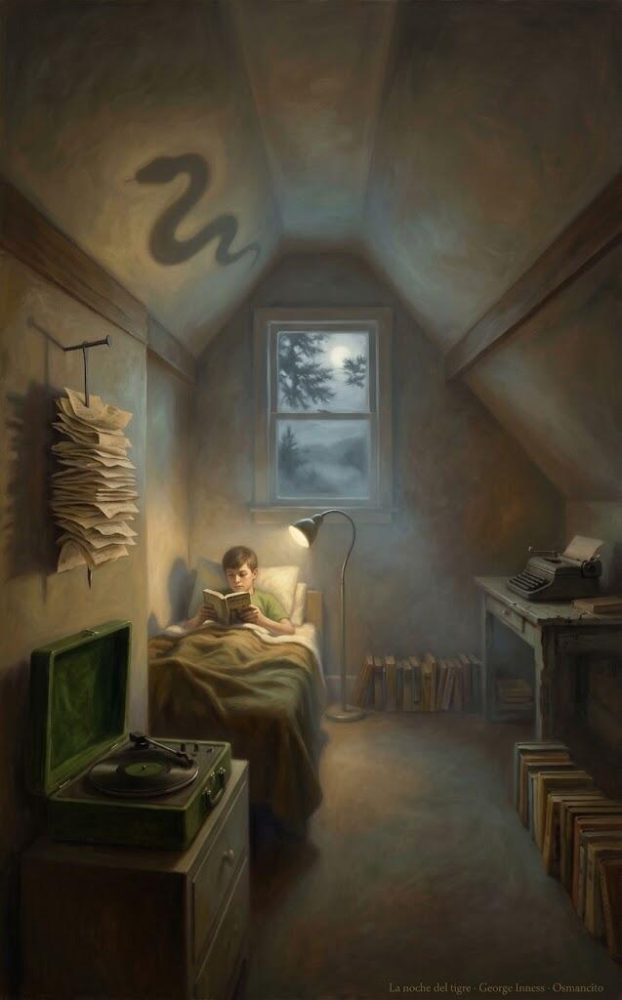
Mi cuarto en nuestra casa de Durham estaba arriba, bajo los aleros. Por la noche podía acostarme debajo de uno de ellos, con el riesgo de darme un buen golpe en la cabeza si me incorporaba de pronto, y leer a la luz de una lámpara de cuello flexible que dibujaba en el techo una divertida boa constrictora de sombra. A veces solo se oían el soplido de la caldera y el correteo de las ratas por el desván; otras, mi abuela pasaba una hora hacia medianoche gritando que alguien fuera a ver a Dick: temía que no le hubieran dado de comer. Dick, un caballo que había tenido cuando era maestra, llevaba al menos cuarenta años muerto. Bajo el otro alero tenía un escritorio, mi vieja máquina Royal y unos cien libros de bolsillo, casi todos de ciencia ficción, alineados a lo largo del rodapié. En la cómoda había una Biblia que había ganado por memorizar versículos en la asociación juvenil metodista y un tocadiscos Webcor con cambiador automático y plato cubierto de terciopelo verde suave. En él ponía mis discos, casi todos sencillos de cuarenta y cinco revoluciones de Elvis, Chuck Berry, Freddy Cannon y Fats Domino. Me gustaba Fats; sabía tocar rock y se notaba que se divertía.
Párrafo 1
El cuarto reúne lo que escucha, lo que lee y lo que escribe. No es un refugio separado de la casa: entran las ratas, la caldera y el caballo muerto que su abuela sigue esperando. Elvis, Chuck Berry, Freddy Cannon y Fats Domino son los músicos de esos discos; Webcor es la marca del tocadiscos. El gusto por Fats se explica con algo que luego King buscará en el trabajo: poder sentir el placer de quien lo hace.
Clava el rechazo en la pared. A los catorce necesita un clavo mayor. A los dieciséis, el editor Algis Budrys rechaza «The Night of the Tiger», pero añade cuatro frases: es bueno, no les sirve, tiene talento y debe volver a enviar.
Aquellas cuatro frases breves, garabateadas con una pluma estilográfica que dejaba tras de sí grandes manchas irregulares, iluminaron el desolado invierno de mis dieciséis años. Unos diez años después, cuando ya había vendido un par de novelas, encontré «The Night of the Tiger» en una caja de manuscritos viejos y pensé que seguía siendo un cuento perfectamente respetable, aunque escrito, a todas luces, por un tipo que apenas empezaba a aprender el oficio. Lo reescribí y, por capricho, volví a enviarlo a F&SF. Esta vez lo compraron. Una cosa que he observado es que, después de tener un poco de éxito, las revistas son mucho menos propensas a usar la frase «No es para nosotros».
Párrafo 4
F&SF abrevia Fantasy and Science Fiction, la revista que había leído el cuento. Un rechazo comercial y una valoración del talento pueden ir juntos; la nota de Budrys le permite distinguirlos. El regreso del manuscrito diez años después no prueba por sí solo por qué lo aceptaron: ha cambiado su autor, ha revisado el texto y también tiene una reputación. King deja que su sospecha sobre el éxito cierre la escena.
M18 · Dave's Rag
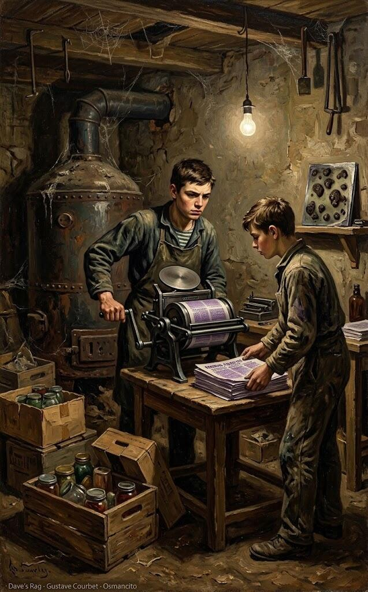
David combate el aburrimiento escolar con Dave's Rag, un periódico familiar y local que fabrica en el sótano.
Con bromas o sin ellas, la tirada subió despacio desde unos cinco ejemplares por número, vendidos a familiares cercanos, hasta unos cincuenta o sesenta; nuestros parientes y los parientes de los vecinos del pueblo (Durham tenía unos novecientos habitantes en 1962) esperaban con ganas cada nueva edición. Un número típico contaba cómo se estaba curando la pierna rota de Charley Harrington, qué oradores invitados iban a visitar la iglesia metodista de West Durham, cuánta agua acarreaban los chicos King desde la bomba del pueblo para no agotar el pozo de detrás de casa (por supuesto, se secaba todos los putos veranos, por mucha agua que lleváramos), quién visitaba a los Brown o a los Hall al otro lado de Methodist Corners y qué familiares iban a llegar cada verano. Dave también incluía deportes, juegos de palabras, partes meteorológicos («Ha estado bastante seco, pero el agricultor local Harold Davis dice que, si no tenemos al menos una buena lluvia en agosto, sonreirá y besará a un cerdo»), recetas, un relato por entregas (ese lo escribía yo) y Los Chistes y el Humor de Dave, con joyas como estas:
Párrafo 3
El periódico vale porque sus lectores conocen a las personas de las noticias. Charley Harrington, los Brown, los Hall y Harold Davis pertenecen a ese vecindario, no a una lista de celebridades que el lector deba reconocer. La exageración sobre el pozo y la broma del agricultor permiten oír dos voces: la noticia que imprimían y el adulto que ahora la cuenta.
Publican chistes de juegos de palabras. La impresión en gelatina resulta lenta, no permite las fotos que David desea y cría hongos en el sótano. Necesitan otra máquina.
En Brunswick, donde iba al instituto, Dave encontró una tienda que vendía una pequeña imprenta de tambor. Funcionaba, apenas. El texto se mecanografiaba en plantillas que podían comprarse en una papelería local por diecinueve centavos cada una; mi hermano llamaba a esa tarea «cortar plantilla», y solía tocarme a mí porque cometía menos errores al teclear. Las plantillas se sujetaban al tambor de la imprenta, se untaban con la tinta más apestosa y pringosa del mundo y ya podías lanzarte: dale a la manivela hasta que se te caiga el brazo, hijo. En dos noches podíamos preparar lo que antes nos llevaba una semana con el hectógrafo y, aunque la imprenta de tambor era sucia, no parecía infectada por una enfermedad potencialmente mortal. Dave's Rag entró en su breve edad de oro.
Párrafo 11
El hectógrafo es el sistema anterior de impresión sobre gelatina que acaba de describirse. El cambio de máquina altera el tiempo del trabajo: la misma publicación exige ahora dos noches en vez de una semana. Stevie aporta menos errores; David organiza y empuja. El periódico también les enseña que escribir termina en objetos que hay que reproducir y llevar a otros.
M19 · El pozo y el péndulo
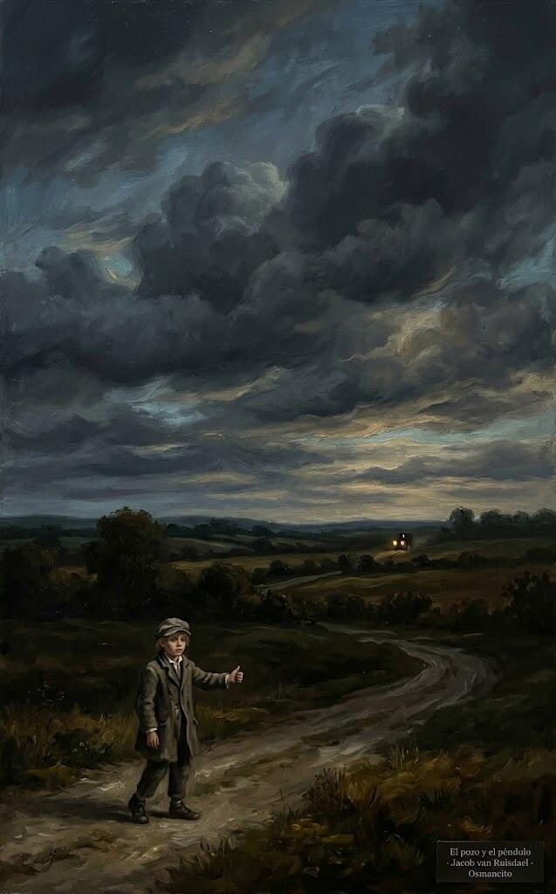
Mientras David se interesa por máquinas, Stevie quiere cine. Las películas respetables del Empire le aburren; busca otros monstruos y otras chicas.
Películas de terror, de ciencia ficción, de pandillas adolescentes al acecho, de perdedores en motocicleta: eso era lo que me subía todos los mandos hasta el diez. El lugar donde encontrarlo no era el Empire, en la parte alta de Lisbon Street, sino el Ritz, abajo, entre las casas de empeño y cerca de Louie's Clothing, donde en 1964 compré mi primer par de botas de los Beatles. De mi casa al Ritz había catorce millas, y durante los ocho años entre 1958 y 1966, cuando por fin saqué la licencia de conducir, fui hasta allí haciendo autostop casi todos los fines de semana. A veces iba con mi amigo Chris Chesley, otras iba solo, pero, salvo que estuviera enfermo o algo así, iba siempre. En el Ritz vi I Married a Monster from Outer Space, con Tom Tryon; The Haunting, con Claire Bloom y Julie Harris; The Wild Angels, con Peter Fonda y Nancy Sinatra. Vi a Olivia de Havilland sacarle los ojos a James Caan con cuchillos improvisados en Lady in a Cage, vi a Joseph Cotten volver de entre los muertos en Hush... Hush, Sweet Charlotte y contuve el aliento (con no poco interés lascivo) para ver si Allison Hayes acabaría por crecer hasta salirse del todo de su ropa en Attack of the 50 Ft. Woman. En el Ritz estaban al alcance todas las cosas buenas de la vida... o podían estarlo, si te sentabas en la tercera fila, prestabas mucha atención y no parpadeabas en el momento equivocado.
Párrafo 3
El Empire y el Ritz son las dos salas de cine de su entorno; Chris Chesley es el amigo que comparte las visitas. Los demás nombres quedan unidos a películas y actuaciones, como un reparto de sus deseos de adolescente. La enumeración no intenta demostrar que aquellas películas sean mejores: registra la atención que conseguían arrancarle. La tercera fila transforma el gusto en una postura corporal, cerca de la pantalla y esperando algo.
Con Chris prefiere las películas de Roger Corman que toman títulos de Edgar Allan Poe. Las llaman «películas Poe», aunque se aparten de sus relatos.
De todas las películas Poe, la que más hondo nos llegó a Chris y a mí fue The Pit and the Pendulum. Escrita por Richard Matheson y rodada en pantalla ancha y Technicolor (las películas de terror en color todavía eran una rareza en 1961, cuando se estrenó), Pit tomaba unos cuantos ingredientes góticos habituales y los convertía en algo especial. Quizá fuera la última película de terror de estudio realmente grande antes de que llegara la feroz producción independiente de George Romero, The Night of the Living Dead, y lo cambiara todo para siempre (en unos pocos casos para mejor, en la mayoría para peor). La mejor escena, la que nos dejó a Chris y a mí clavados en las butacas, mostraba a John Kerr excavando en la pared de un castillo y descubriendo el cadáver de su hermana, a la que evidentemente habían enterrado viva. Nunca he olvidado el primer plano del cadáver, rodado con un filtro rojo y una lente deformante que alargaba la cara hasta convertirla en un inmenso grito silencioso.
Párrafo 8
Corman dirige la película; Matheson escribe su guion a partir del relato de Poe. Así se ordenan las distintas autorías detrás de un título. La comparación con Romero es el juicio del espectador King, no una clasificación que haya que aceptar para disfrutar de la escena. Lo que permanece en él es una imagen fabricada con color, encuadre y deformación: un grito que el cine hace visible sin darle sonido.
De vuelta a casa decide convertir la película en un libro, imprimirlo en el sótano y venderlo en la escuela.
Tal como se concibió, se hizo. Trabajando con el cuidado y la deliberación por los que más tarde recibiría elogios de la crítica, despaché mi «versión novelada» de The Pit and the Pendulum en dos días, componiendo directamente sobre las plantillas con las que imprimiría. Aunque no sobrevive ningún ejemplar de aquella obra maestra (al menos que yo sepa), creo que tenía ocho páginas, cada una a un espacio y con los saltos de párrafo reducidos al mínimo absoluto (recuerden que cada plantilla costaba diecinueve centavos). Imprimí por las dos caras, como en un libro normal, y añadí una portada donde dibujé un péndulo rudimentario que goteaba pequeñas manchas negras que esperaba que parecieran sangre. En el último momento advertí que había olvidado identificar la editorial. Después de una media hora de agradable reflexión, escribí UN LIBRO V.I.B. en la esquina superior derecha de la portada. V.I.B. significaba Very Important Book.
Párrafo 10
Very Important Book significa «Libro Muy Importante». El nombre de la editorial le permite fabricar también la apariencia de un editor. Las páginas apretadas obedecen al precio de la plantilla, y la sangre dibujada promete el espectáculo que quiere vender. El adulto llama «obra maestra» a ese trabajo con ironía; el muchacho lo hace con auténtico entusiasmo. Conviene escuchar las dos edades a la vez.
Imprime unos cuarenta ejemplares a veinticinco centavos. Antes de acabar el almuerzo vende treinta y seis. Los nueve dólares parecen una fortuna.
Lo era demasiado. Cuando terminaron las clases a las dos, me llamaron al despacho de la directora y me dijeron que no podía convertir la escuela en un mercado, especialmente, añadió la señorita Hisler, para vender basura como The Pit and the Pendulum. Su actitud no me sorprendió mucho. La señorita Hisler había sido mi maestra en la escuela anterior, la de una sola aula en Methodist Corners, donde hice quinto y sexto. Durante aquel tiempo me había sorprendido leyendo una novela bastante sensacionalista de «peleas de adolescentes», The Amboy Dukes, de Irving Shulman, y me la había quitado. Esto era más de lo mismo, y me disgustaba conmigo mismo por no haber previsto el desenlace. En aquellos días llamábamos dubber a quien hacía una idiotez (se pronunciaba dubba si eras de Maine). Yo acababa de meter la pata a lo grande.
Párrafo 13
Hisler ya conocía sus lecturas; para él, la reprimenda repite un conflicto antiguo. El pasaje identifica a Shulman como autor y a su libro como novela de pandillas: lo necesario para entender por qué lo había confiscado. El reproche que King se dirige es no haber calculado la reacción, no haber disfrutado de aquel cine.
La directora pregunta por qué desperdicia su talento. Él devuelve el dinero, aunque algunos quieren conservar el libro. En verano vende otro relato, esta vez original, pero la vergüenza perdura: tardará años en dejar de oír aquella pregunta.
M20 · The Village Vomit
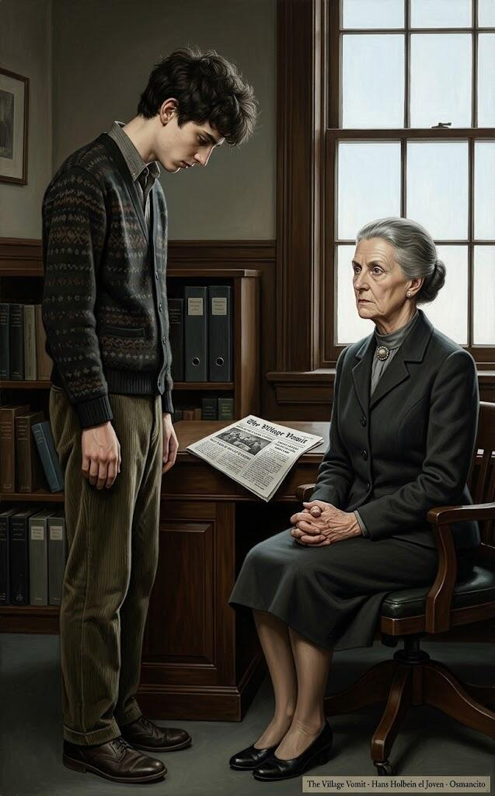
Escribir un relato por entregas para Dave's Rag era divertido, pero mis demás tareas periodísticas me aburrían. Aun así, había trabajado en algo parecido a un periódico, se corrió la voz y durante mi segundo año en Lisbon High me convertí en director del periódico escolar, The Drum. No recuerdo que me dieran a elegir; creo que sencillamente me nombraron. Mi segundo, Danny Emond, tenía todavía menos interés que yo en el periódico. A Danny solo le gustaba que el aula 4, donde trabajábamos, estuviera cerca del baño de chicas. «Algún día me volveré loco y me abriré paso a hachazos, Steve», me dijo más de una vez. «Hachazo, hachazo, hachazo». En una ocasión añadió, quizá para justificarse: «Las chicas más guapas del instituto se levantan las faldas ahí dentro». Me pareció algo tan fundamentalmente estúpido que hasta podía ser sabio, como un koan zen o un cuento temprano de John Updike.
Párrafo 1
Un koan es una pregunta o un breve relato enigmático usado en el budismo zen para hacer tropezar el razonamiento habitual. Aquí la comparación no celebra una profundidad de Danny: el adulto exagera lo absurda que le resultaba su justificación. John Updike aparece en la comparación como escritor de cuentos; Danny y King, en cambio, tienen un periódico que ninguno desea hacer.
Publica poco en The Drum y crea The Village Vomit, sátira con apodos reconocibles de sus profesores. Los compañeros ríen; una maestra confisca el ejemplar, donde figura su nombre como director. Lo llaman al despacho.
Esta vez el problema era bastante más serio. Casi todos los profesores estaban dispuestos a tomarse mis burlas con deportividad, incluso el viejo Raw Diehl aceptaba olvidar lo de los ojos de cerdo, pero una no. Era la señorita Margitan, que enseñaba taquigrafía y mecanografía a las chicas de los cursos comerciales. Imponía respeto y miedo; fiel a una tradición de otra época, la señorita Margitan no quería ser tu amiga, tu psicóloga ni tu inspiración. Estaba allí para enseñar destrezas de oficina y quería que todo aprendizaje siguiera las reglas. Sus reglas. A veces pedía a las chicas de su clase que se arrodillaran en el suelo y, si los dobladillos de sus faldas no tocaban el linóleo, las mandaba a casa a cambiarse. No había súplica llorosa que la ablandara ni razonamiento que modificara su visión del mundo. Sus listas de castigadas eran más largas que las de cualquier otro profesor, pero sus alumnas solían ser elegidas primera o segunda de la promoción y por lo general conseguían buenos empleos. Muchas llegaban a quererla. Otras la detestaban entonces y probablemente la detestan todavía, tantos años después. Estas últimas la llamaban «Maggot» Margitan, como sin duda habían hecho sus madres antes. Y en The Village Vomit yo tenía una noticia que empezaba así: «La señorita Margitan, conocida cariñosamente en todo Lisbon como Maggot...».
Párrafo 7
Maggot significa gusano, una larva. El apodo no es inocuo para quien lo recibe, aunque quienes lo usan lo hayan heredado. Raw Diehl es el profesor de ciencias al que el periódico atribuye una broma sobre ojos de cerdo; Margitan enseña habilidades de oficina. King reúne admiración, miedo y resentimiento alrededor de ella, sin reducir todas las reacciones de sus alumnas a una sola.
El director Higgins le comunica que Margitan está herida y pide su suspensión.
En mi carácter, una especie de desenfreno y un profundo conservadurismo se entrelazan como el pelo en una trenza. La parte chiflada de mí había escrito The Village Vomit y luego lo había llevado al instituto; ahora aquel problemático señor Hyde había metido la pata y se había escabullido por la puerta trasera. El doctor Jekyll se quedaba pensando en cómo lo miraría mi madre si descubría que me habían suspendido: sus ojos heridos. Tenía que apartar de la cabeza la idea de ella, y rápido. Estaba en segundo año, tenía un año más que la mayoría de mis compañeros y, con mis seis pies y dos pulgadas, era uno de los chicos más grandes del instituto. No quería llorar por nada del mundo en el despacho del señor Higgins, no con los otros chicos circulando por los pasillos y mirando con curiosidad por la ventana: el señor Higgins detrás del escritorio y yo en la Silla del Chico Malo.
Párrafo 9
Jekyll y Hyde son las dos identidades de un mismo hombre en la novela de Robert Louis Stevenson. King reparte entre ellas el impulso que actúa y la parte que afronta las consecuencias. El tamaño físico aumenta la vergüenza de llorar, pero no lo protege del temor a decepcionar a su madre. No necesita inventarse un enemigo: el conflicto ocurre dentro de él.
Margitan acepta una disculpa sincera y dos semanas de castigo. Él reconoce el daño, aunque años después ella veta su entrada en la sociedad de alumnos destacados. Desde entonces apenas vuelve a la sátira.
M21 · Con la puerta cerrada
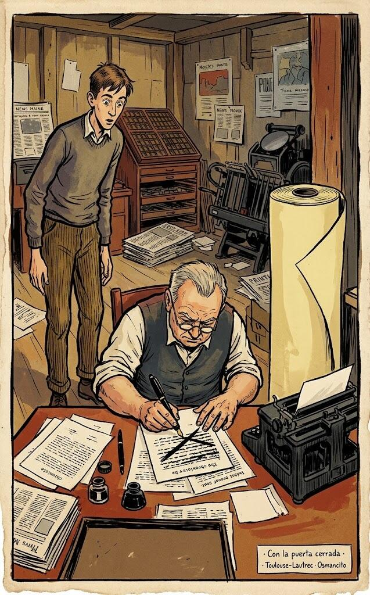
Apenas libre del castigo, vuelve al despacho con miedo.
Al menos no era el señor Higgins quien quería verme: esta vez me había llamado el orientador escolar. Habían hablado de mí, dijo, y de cómo encauzar mi «pluma inquieta» por caminos más constructivos. Había consultado a John Gould, director del semanario de Lisbon, y había descubierto que necesitaba un reportero deportivo. Aunque el instituto no podía obligarme a aceptar el empleo, todos en dirección creían que sería una buena idea. Hazlo o muere, parecían sugerir los ojos del orientador. Quizá fuera pura paranoia, pero incluso ahora, casi cuarenta años después, no lo creo.
Párrafo 2
La invitación tiene forma de elección, pero él la recibe como una orden. John Gould queda presentado por el cargo que tendrá importancia aquí: es quien puede leer, corregir y pagar su trabajo. El muchacho que acaba de usar un periódico para burlarse de los profesores entra en otro donde tendrá que responder por lo que escribe.
Gould lo acepta a prueba, aunque sepa poco de deportes, y ofrece medio centavo por palabra. Tras un récord de baloncesto, King entrega una crónica y una nota sobre el jugador. Gould corrige esta última con tinta negra y pregunta en qué año se había logrado el récord anterior.
Por suerte llevaba mis notas. «En 1953», dije. Gould gruñó y volvió al trabajo. Cuando terminó de marcar el texto de la manera indicada arriba, levantó la vista y me vio algo en la cara. Creo que debió de confundirlo con horror. No lo era: era una revelación pura. ¿Por qué, me pregunté, no hacían esto nunca los profesores de lengua? Era como el Hombre Visible que el viejo Raw Diehl tenía sobre el escritorio de la clase de biología.
Párrafo 10
El libro muestra una página con correcciones manuscritas antes de este pasaje; aquí no se reproduce. El Hombre Visible era un modelo anatómico transparente que dejaba ver el cuerpo por dentro. Esa es la revelación: las marcas de Gould no se limitan a calificar el resultado, sino que permiten ver cómo está hecho y qué se puede quitar. Llevar notas también importa: ante una expresión vaga, el redactor dispone del año preciso.
Gould quita lo que no pertenece a la historia. Le enseña a escribir primero para sí mismo y a revisar después para los demás: puerta cerrada al empezar, abierta al reescribir. Una vez entregado, el texto admite lectores y críticas.
M22 · Ratas grandes como perros
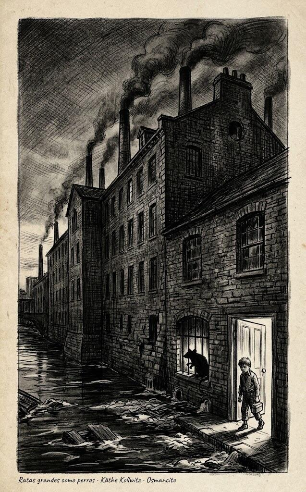
Justo después del viaje de fin de curso a Washington, D. C., conseguí empleo en Worumbo Mills and Weaving, en Lisbon Falls. No lo quería: el trabajo era duro y aburrido, y la fábrica, un agujero de mierda mugriento que colgaba sobre el contaminado río Androscoggin como un asilo de pobres de una novela de Charles Dickens, pero necesitaba el sueldo. Mi madre ganaba una miseria como empleada de limpieza en un centro para enfermos mentales de New Gloucester, pero estaba decidida a que yo fuera a la universidad, como mi hermano David (Universidad de Maine, promoción del 66, cum laude). En su cabeza, los estudios casi habían pasado a segundo plano. Durham, Lisbon Falls y la Universidad de Maine, en Orono, formaban un mundo pequeño donde la gente se trataba como vecina y seguía metiéndose en los asuntos de los demás a través de las líneas telefónicas compartidas por cuatro o seis abonados que entonces usaban aquellos pueblos de mala muerte. En el mundo grande, a los chicos que no iban a la universidad los mandaban al extranjero a combatir en la guerra no declarada del señor Johnson, y muchos volvían en cajas. A mi madre le gustaba la Guerra contra la Pobreza de Lyndon («Esa es la guerra en la que estoy yo», decía a veces), pero no lo que hacía en el sudeste asiático. Una vez le dije que alistarme e ir allí quizá me vendría bien; seguro que de aquello saldría un libro, le dije.
Párrafo 1
Lyndon B. Johnson es el presidente al que llama «señor Johnson» y «Lyndon»; la guerra exterior es la de Vietnam y la Guerra contra la Pobreza, un programa de política interna. En la frase de la madre, las dos guerras dejan de ser consignas equivalentes: una puede llevarse a su hijo y la otra nombra su propia necesidad. Cum laude indica una distinción académica. La fábrica y el centro de limpieza muestran que conseguir estudios requiere antes tiempo y dinero de toda la familia.
Su madre descarta que se aliste: muerto no podría escribir. Él pide becas y préstamos y combina clases con turnos de fábrica. En verano pasa al tinte. Un compañero cuenta que, al limpiar el sótano, encontraron ratas grandes como gatos y hasta como perros.
Un día hacia el final de mi último semestre de universidad, con los exámenes terminados y sin nada que hacer, recordé la historia del hombre de la tintorería sobre las ratas debajo de la fábrica, grandes como gatos, joder, algunas grandes como perros, y empecé a escribir un cuento llamado «Graveyard Shift». Solo estaba pasando el rato una tarde de finales de primavera, pero dos meses después la revista Cavalier compró el cuento por doscientos dólares. Había vendido otros dos antes, pero entre ambos solo me habían reportado sesenta y cinco dólares. Esto era tres veces aquello, y de un solo golpe. Me dejó sin aliento, de verdad. Era rico.
Párrafo 8
El dinero adquiere su tamaño en relación con lo que había ganado antes, no con una medida abstracta de riqueza. Un relato escuchado durante el trabajo permanece disponible años después. Cuando llega a la página, ya no depende de regresar a la fábrica: basta el recuerdo de una voz y de unas ratas cuya desmesura lo había excitado.
M23 · La risa sin miedo
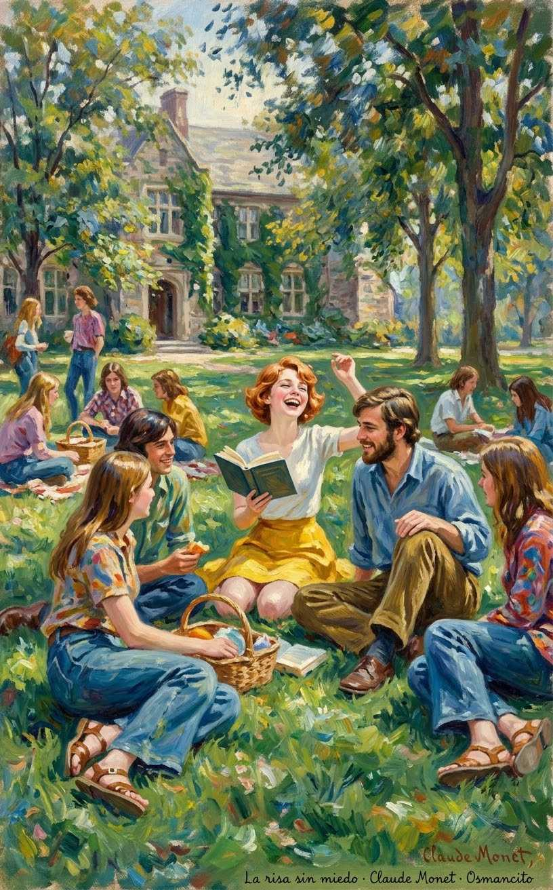
En el verano de 1969 conseguí un empleo de trabajo y estudio en la biblioteca de la Universidad de Maine. Fue una temporada hermosa y horrible. En Vietnam, Nixon ejecutaba su plan para terminar la guerra, que parecía consistir en bombardear casi todo el sudeste asiático hasta convertirlo en Kibbles 'n Bits. «Conoce al jefe nuevo», cantaban The Who, «igual que el jefe viejo». Eugene McCarthy se concentraba en su poesía y los hippies felices llevaban pantalones de campana y camisetas con frases como MATAR POR LA PAZ ES COMO FOLLAR POR LA CASTIDAD. Yo tenía unas estupendas patillas de hacha. Creedence Clearwater Revival cantaba «Green River», chicas descalzas bailando a la luz de la luna, y Kenny Rogers todavía estaba con The First Edition. Martin Luther King y Robert Kennedy estaban muertos, pero Janis Joplin, Jim Morrison, Bob «The Bear» Hite, Jimi Hendrix, Cass Elliot, John Lennon y Elvis Presley seguían vivos y haciendo música. Yo vivía junto al campus, en las habitaciones de Ed Price (siete dólares a la semana, un cambio de sábanas incluido). Los hombres habían llegado a la Luna y yo había entrado en la lista de honor del decano. Abundaban los milagros y las maravillas.
Párrafo 1
Nixon es el presidente estadounidense que sucede a Johnson; Eugene McCarthy y Robert Kennedy fueron senadores y candidatos presidenciales; Martin Luther King fue dirigente de la lucha por los derechos civiles. Kibbles 'n Bits es una marca de comida para perros: la comparación convierte los bombardeos en una imagen deliberadamente brutal. La música, las camisetas y las patillas componen el clima que recuerda King; el relato no es un calendario exacto. La frase de The Who pertenece a «Won't Get Fooled Again», publicada en 1971, después del verano que está contando. Conservar esa distancia permite escuchar su asociación sin convertirla en un dato de 1969. La lista de honor es un reconocimiento académico; el salto desde la Luna hasta ella contiene una broma a su propia costa.
Un día de finales de junio de aquel verano, un grupo de los que trabajábamos en la biblioteca almorzamos en el césped, detrás de la librería universitaria. Sentada entre Paolo Silva y Eddie Marsh había una chica esbelta, con una risa estridente, el pelo teñido de rojo y las piernas más bonitas que había visto, bien expuestas bajo una falda amarilla corta. Llevaba un ejemplar de Soul on Ice, de Eldridge Cleaver. Yo no me había cruzado con ella en la biblioteca y no creía que una universitaria pudiera soltar una risa tan maravillosa y sin miedo. Además, leyera cosas serias o no, decía palabrotas como una trabajadora de fábrica y no como una universitaria. (Como yo había trabajado en una fábrica, podía juzgarlo). Se llamaba Tabitha Spruce. Nos casamos un año y medio después. Seguimos casados y nunca ha dejado que olvide que, la primera vez que la vi, pensé que era la novia de Eddie Marsh, una chica del pueblo. Quizá una camarera de la pizzería local que leía libros y tenía la tarde libre.
Párrafo 2
Soul on Ice es un libro de ensayos y cartas de Eldridge Cleaver, escrito en prisión. El libro que lleva Tabitha forma parte de lo que King observa, pero no basta para que él la reconozca como estudiante: sus prejuicios sobre cómo debe reír y hablar una universitaria pesan más. La mujer que se convertirá en su esposa le devuelve después esa primera lectura equivocada de su persona. Paolo Silva y Eddie Marsh son los compañeros entre los que está sentada.
M24 · Me gustan los osos
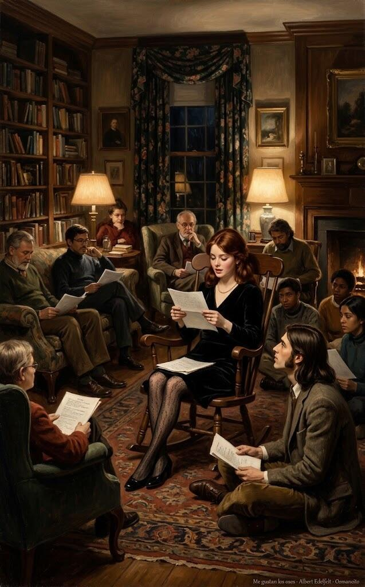
King y Tabitha comparten origen trabajador, deseo y un oficio hecho de palabras. En un taller de poesía se enamora también de cómo ella entiende su trabajo.
No quiero hablar con demasiado desprecio de mi generación (en realidad sí quiero: tuvimos la oportunidad de cambiar el mundo y elegimos la Home Shopping Network), pero entre los estudiantes que escribían y que yo conocía entonces circulaba la idea de que la buena escritura nacía espontáneamente, en un arrebato de sentimiento que había que atrapar al instante; cuando construías aquella importantísima escalera al cielo, no podías quedarte plantado con el martillo en la mano. El ars poetica de 1969 quizá quedara mejor expresado en una canción de Donovan Leitch que decía: «Primero hay una montaña / Luego no hay montaña / Luego la hay». Los aspirantes a poetas vivían en un mundo húmedo de rocío y teñido de Tolkien, atrapando poemas en el éter. La opinión era casi unánime: el arte serio venía de... ¡ahí fuera! Los escritores eran taquígrafos bendecidos que tomaban dictado divino. No quiero avergonzar a ninguno de mis viejos compañeros de aquella época, así que aquí va una versión ficticia de lo que digo, hecha con trozos de muchos poemas reales:
Párrafo 3
Ars poetica significa aquí una idea de cómo se hace poesía. Donovan es el cantante de los versos sobre la montaña; Tolkien, autor de The Lord of the Rings, escribe fantasía; su mundo sirve aquí para describir aquel ambiente. Home Shopping Network es un canal de televisión dedicado a vender productos: con esa elección King se burla de la distancia entre las ambiciones juveniles y el consumo adulto. Lo que King discute no es el placer de perderse en una imagen, sino que ese placer dispense de saber qué se ha escrito. Conviene recordar que el poema caricaturesco que anuncia lo ha compuesto él: es una muestra de su crítica, no un documento atribuible a un compañero concreto.
La caricatura acumula oscuridad y soledad sin aclarar su sentido. Tabitha ofrece otra cosa: en un poema sobre Agustín, un oso despierta con olores, insectos y una promesa.
*El oso ha oído una promesa segura.
Párrafo 9
Ciertas palabras son comestibles; alimentan
más que nieve amontonada en platos de plata
o hielo desbordando cuencos de oro. Las astillas de hielo
de la boca de un amante no son siempre mejores,
ni es siempre espejismo un desierto que sueña.
El oso que se alza canta un cántico gradual
tejido de arena que conquista ciudades
mediante un lento ciclo. Su alabanza seduce
a un viento que pasa, viajando hacia el mar
donde un pez, atrapado en una red cuidadosa,
oye la canción de un oso en la nieve de aroma fresco.*
Las palabras pueden comerse porque sostienen una esperanza que el paisaje material no satisface. La cadena no se limita al oso: canto, viento y pez hacen que una promesa viaje entre seres distantes. El fragmento permite sentir la intensidad de las imágenes antes de que llegue su explicación. No hace falta elegir entre emoción y pensamiento, que es precisamente lo que King admira en la lectura de Tabitha.
Al terminar, el grupo calla. King encuentra imágenes intensas y una labor consciente, no una revelación que excluya el trabajo.
En la discusión que siguió a la lectura de Tab me quedó claro que entendía su propio poema. Sabía exactamente qué había querido decir y había dicho la mayor parte. Conocía a san Agustín (354-430 d. C.) tanto por ser católica como por estudiar Historia. La madre de Agustín, también santa, era cristiana; su padre, pagano. Antes de convertirse, Agustín había perseguido tanto el dinero como a las mujeres. Después siguió luchando con sus impulsos sexuales y se lo conoce por la Oración del Libertino, que dice: «Señor, hazme casto... pero todavía no». En sus escritos se concentró en la lucha del hombre por abandonar la fe en sí mismo en favor de la fe en Dios. Y a veces se comparaba con un oso. Tabby tiene una manera de bajar la barbilla cuando sonríe que la hace parecer sabia y terriblemente bonita a la vez. Recuerdo que lo hizo entonces y dijo: «Además, me gustan los osos».
Párrafo 12
Agustín es la figura religiosa e intelectual que el pasaje acaba de presentar mediante su conversión y sus escritos. Tabitha puede explicar qué lugar ocupa en su poema y también admitir una preferencia sencilla: le gustan los osos. Esa última frase no desmiente lo pensado antes. Impide que la explicación convierta cada elección en una clave solemne y única.
El despertar gradual del oso enlaza, para Tabitha, deseo, sueños a destiempo y promesa. King reconoce una ética de escritura que comparte. Sentado a su lado, le acaricia la pantorrilla; ambos sonríen.
M25 · Su mujer está de parto
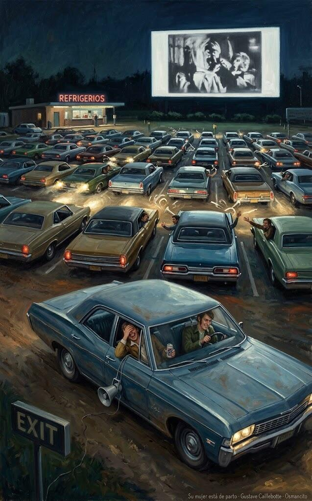
Teníamos dos hijos cuando llevábamos tres años casados. No fueron planeados ni dejaron de serlo; llegaron cuando llegaron y nos alegró tenerlos. Naomi era propensa a las infecciones de oído. Joe tenía buena salud, pero parecía no dormir nunca. Cuando Tabby se puso de parto con él, yo estaba en un autocine de Brewer con un amigo: era un programa triple del Día de los Caídos, tres películas de terror. Íbamos por la tercera película, The Corpse Grinders, y el segundo paquete de seis cervezas cuando el hombre de la oficina interrumpió con un anuncio. En aquellos tiempos todavía había altavoces en postes; cuando aparcabas levantabas uno y lo colgabas de la ventanilla. Por eso el anuncio del encargado resonó por todo el aparcamiento: «¡STEVE KING, VUELVA A CASA, POR FAVOR! ¡SU MUJER ESTÁ DE PARTO! ¡STEVE KING, VUELVA A CASA, POR FAVOR! ¡SU MUJER VA A TENER AL NIÑO!»
Párrafo 1
Naomi y Joe son los hijos que acaba de presentar. La explicación del altavoz permite entender la humillación sin haber ido nunca a un autocine: una noticia doméstica llega de golpe a todos los coches. King no prepara una escena ejemplar de paternidad. Se deja ver distraído, con cerveza y una película de terror, mientras el parto lo reclama desde otro lugar.
Mientras conducía nuestro viejo Plymouth hacia la salida, un par de centenares de bocinas sonaron en un saludo satírico. Muchos encendían y apagaban los faros, bañándome en una luz entrecortada. Mi amigo Jimmy Smith se rio tanto que acabó deslizándose al hueco de los pies del asiento delantero del acompañante. Allí siguió durante casi todo el viaje de vuelta a Bangor, soltando risitas entre las latas de cerveza. Cuando llegué a casa, Tabby estaba tranquila y con la maleta preparada. Dio a luz a Joe menos de tres horas después. Llegó al mundo con facilidad. Durante los cinco años siguientes, más o menos, ninguna otra cosa relacionada con Joe fue fácil. Pero era una delicia. Los dos lo eran, en realidad. Incluso cuando Naomi arrancaba el papel de la pared sobre la cuna (quizá creía estar haciendo la limpieza) y Joe cagaba en el asiento de mimbre de la mecedora que teníamos en el porche de nuestro apartamento de Sanford Street, eran una delicia.
Párrafo 2
La calma de Tabitha contrasta con el pequeño desfile de bocinas y risas del que vuelve su marido. El nacimiento fácil no anuncia una crianza fácil. La repetición de «una delicia» mantiene el afecto junto al cansancio y al desastre, sin exigir que los hijos se porten bien para merecerlo. Jimmy Smith queda presentado como el amigo que lo acompaña.
M26 · Un pato muerto en las fauces
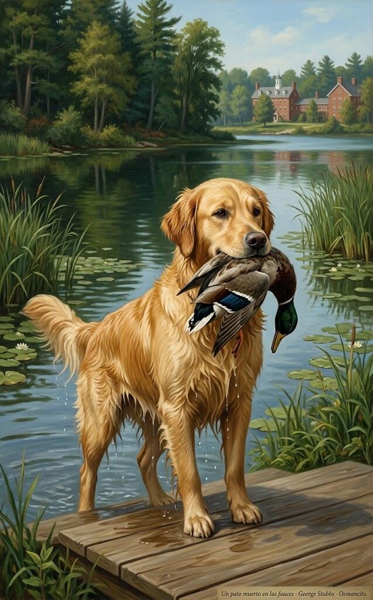
Su madre le aconseja obtener un título docente. Lo consigue, pero no encuentra plaza. Mantiene a la familia trabajando en otra lavandería de Bangor.
En New Franklin nunca vi ropa particular salvo cuando se trataba de un «pedido de incendio» pagado por una aseguradora (casi todos esos pedidos eran ropa que parecía estar bien pero olía a carne de mono a la barbacoa). La mayor parte de lo que cargaba y sacaba eran sábanas de moteles de los pueblos costeros de Maine y mantelería de sus restaurantes. La mantelería era asquerosa a más no poder. Cuando los turistas salen a cenar en Maine suelen querer almejas y langosta. Sobre todo langosta. Para cuando llegaban a mis manos los manteles donde se habían servido aquellas delicias, apestaban de manera infernal y a menudo hervían de gusanos. Los gusanos intentaban trepar por los brazos mientras cargabas las lavadoras; era como si los cabroncetes supieran que pensabas cocerlos. Creí que acabaría acostumbrándome, pero nunca lo hice. Los gusanos eran malos; el olor a almejas y carne de langosta en descomposición era peor todavía. ¿Por qué es la gente tan cerda?, me preguntaba mientras cargaba en mis máquinas la mantelería febril del Testa's de Bar Harbor. ¿Por qué es la gente tan jodidamente cerda?
Párrafo 4
Testa's es el restaurante del que recibe esa mantelería; New Franklin, la lavandería donde trabaja. El comensal ve una delicadeza y quien lava recibe sus restos. El relato cruza esas dos caras de una misma cena a través del olor y el tacto. La frase sobre acostumbrarse introduce un límite: repetir una tarea no garantiza dejar de sentir su repugnancia.
La ropa hospitalaria trae sangre, gusanos y objetos inesperados. Un compañero encuentra veinte dólares; King, tijeras quirúrgicas que aprovecha en la cocina.
En una ocasión oí un extraño chasquido dentro de una de las lavadoras Washex de tres compartimentos que estaban a mi cargo. Pulsé el botón de parada de emergencia, pensando que la maldita máquina se estaba comiendo los engranajes o algo así. Abrí las puertas y saqué una enorme masa de túnicas quirúrgicas y gorros verdes empapados, poniéndome perdido en el proceso. Debajo, disperso por el revestimiento interior, parecido a un colador, del compartimento central, había lo que parecía una dentadura humana completa. Pensé que serviría para hacer un collar interesante; después la recogí y la tiré a la basura. Mi mujer ha aguantado mucho de mí a lo largo de los años, pero su sentido del humor tiene un límite.
Párrafo 6
Washex es la marca de la máquina; sus tres compartimentos explican dónde acaba encontrando los dientes. El collar solo existe como posibilidad fugaz en su cabeza. La intervención imaginada de Tabitha basta para detenerlo, incluso sin estar ella en la escena. Es una forma de cerrar con el vínculo familiar un episodio que parecía pertenecer únicamente al asco del trabajo.
M27 · El margen deslizante
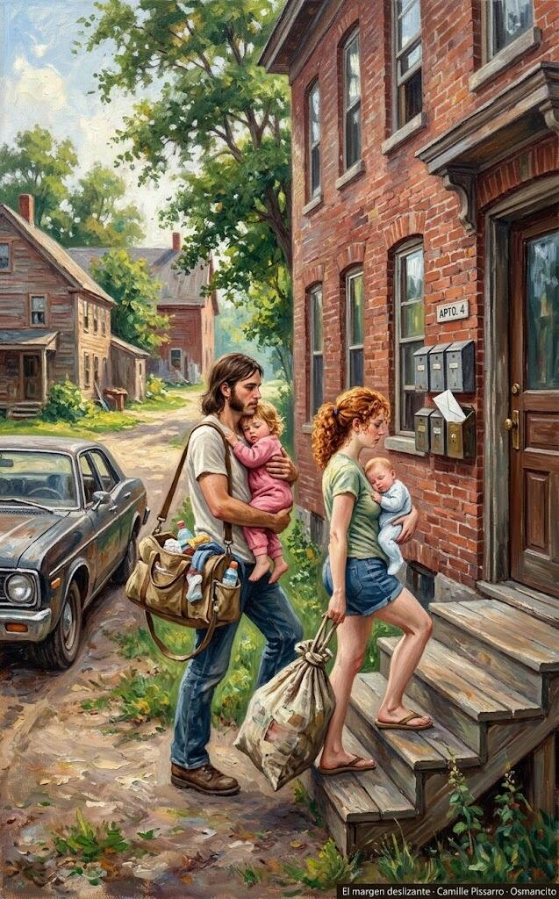
Desde el punto de vista económico, dos críos eran probablemente dos de más para dos licenciados que trabajaban en una lavandería y en el turno de tarde de Dunkin' Donuts. La única ventaja que teníamos llegó por cortesía de revistas como Dude, Cavalier, Adam y Swank, lo que mi tío Oren llamaba «las revistas de tetas». Para 1972 mostraban bastante más que pechos al aire y la ficción estaba en vías de extinción, pero yo tuve la suerte de subirme a la última ola. Escribía después del trabajo; cuando vivíamos en Grove Street, que quedaba cerca de la New Franklin, a veces también escribía un poco en la hora del almuerzo. Supongo que eso suena a Abe Lincoln llevado al extremo, pero no era gran cosa: me lo estaba pasando bien. Aquellos cuentos, por sombríos que fueran algunos, servían como pequeñas escapatorias del jefe, el señor Brooks, y de Harry, el encargado de planta.
Párrafo 1
Lo de Abe Lincoln alude a Abraham Lincoln, el presidente estadounidense criado en la pobreza que se educó a sí mismo estudiando de noche; escribir en la hora del almuerzo de una lavandería le suena a King a esa leyenda del hombre hecho a sí mismo, y por eso la corrige enseguida: él no se estaba sacrificando, se estaba divirtiendo. La New Franklin es la lavandería industrial donde trabajaba, y el señor Brooks y Harry son su jefe y su compañero allí. Las revistas que nombra pagaban por cuentos lo que ningún otro trabajo suyo pagaba: son el margen del que habla el título de este apartado.
Harry, el encargado, tenía ganchos en vez de manos desde una caída en la planchadora durante la guerra. Los cuentos vendidos entre 1970 y el invierno de 1973-74 apenas formaban un margen deslizante frente a la asistencia social. Aquel domingo volvían de casa de la madre, ya enferma del cáncer que la mataría; la pequeña Naomi ardía de fiebre, necesitaba el antibiótico caro al que llamaban LA COSA ROSA y no tenían un centavo.
Conseguí abrir la puerta de la entrada sin soltar a mi hija y la estaba pasando hacia dentro (tenía tanta fiebre que me ardía contra el pecho como una brasa cubierta) cuando vi que de nuestro buzón asomaba un sobre: un raro reparto de sábado. Los matrimonios jóvenes no reciben mucho correo; todo el mundo, salvo las compañías del gas y de la luz, parece olvidar que están vivos. Lo agarré, rezando para que no fuera otra factura. No lo era. Mis amigos de la Dugent Publishing Corporation, proveedores de Cavalier y de muchas otras finas publicaciones para adultos, me habían enviado un cheque por «Sometimes They Come Back», un cuento largo que yo no creía que fuera a vender en ninguna parte. El cheque era de quinientos dólares, con mucho la suma mayor que había recibido jamás. De pronto podíamos pagar no solo la visita del médico y un frasco de LA COSA ROSA, sino también una buena cena de domingo por la noche. E imagino que, una vez dormidos los niños, Tabby y yo nos pusimos cariñosos.
Párrafo 7
El cuento del cheque existe: «Sometimes They Come Back» salió en la revista Cavalier en marzo de 1974 y después se recogió en Night Shift (1978), el primer libro de relatos de King. Tabby es su mujer. La escena ordena las prioridades de una economía sin margen: primero el médico y el antibiótico de la niña, después la cena, y al final la alegría de dos.
De esos años conserva mucha felicidad y mucho miedo: eran críos cuidando de críos. Ella fichaba en Dunkin' Donuts con su uniforme rosa; él lavaba sábanas de motel y seguía escribiendo sus películas de miedo de una bobina.
M28 · Nunca una sola duda
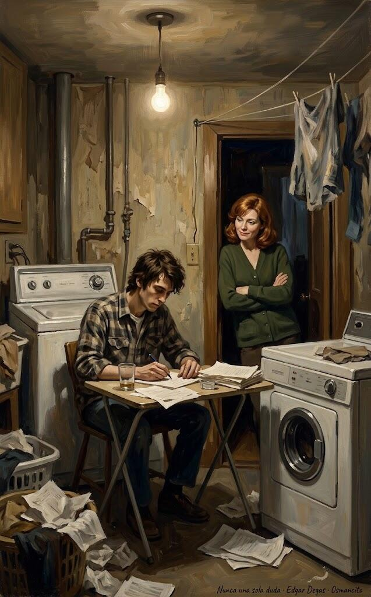
Cuando empecé Carrie ya había conseguido trabajo como profesor de inglés en Hampden, el pueblo de al lado. Iban a pagarme seis mil cuatrocientos dólares al año, lo que parecía una suma impensable después de ganar un dólar sesenta la hora en la lavandería. Si hubiera hecho las cuentas, con cuidado de sumar todo el tiempo de las reuniones después de clase y de corregir trabajos en casa, habría visto que era una suma muy pensable, y que nuestra situación era peor que nunca. A finales del invierno de 1973 vivíamos en un tráiler doble en Hermon, un pueblecito al oeste de Bangor. (Mucho después, cuando me pidieron la entrevista de Playboy, llamé a Hermon «el culo del mundo». Los de Hermon se enfurecieron por aquello, y por la presente pido disculpas. En realidad Hermon no es más que la axila del mundo.) Yo conducía un Buick con problemas de transmisión que no podíamos permitirnos arreglar, Tabby seguía en Dunkin' Donuts y no teníamos teléfono. Sencillamente, no podíamos pagar la cuota mensual. Tabby probó suerte con los relatos de confesiones durante aquella época («Demasiado guapa para ser virgen», cosas así), y recibió enseguida respuestas personales del tipo esto-no-es-del-todo-lo-que-buscamos-pero-inténtalo-otra-vez. Habría abierto brecha de tener una hora o dos más cada día, pero estaba atascada con las veinticuatro de siempre. Además, cualquier gracia que la fórmula de las revistas de confesiones (se llama la de las Tres R: Rebelión, Ruina y Redención) hubiera podido tener para ella al principio se gastó en un santiamén.
Párrafo 1
Playboy es la revista para hombres fundada por Hugh Hefner en 1953, célebre también por sus largas entrevistas; la disculpa pública por lo de «el culo del mundo» llega años después de la broma, ya con distancia. Las revistas de confesiones a las que se asoma Tabby eran otro escalón del mismo mercado de quiosco que las revistas masculinas del apartado anterior: ficción barata escrita contra reloj. La moraleja amarga del párrafo es aritmética: el sueldo que parecía una fortuna, dividido entre las horas reales de trabajo, salía peor que la lavandería.
Yo tampoco tenía mucho éxito con mi propia escritura. En las revistas masculinas, los relatos de terror, ciencia ficción y crimen estaban siendo reemplazados por historias de sexo cada vez más gráficas. Ese era parte del problema, pero no todo. Lo más grave era que, por primera vez en mi vida, escribir era difícil. El problema era la enseñanza. Me gustaban mis compañeros de trabajo y quería a los chicos, incluso los tipos Beavis y Butt-Head de la clase de Living with English podían ser interesantes, pero la mayoría de los viernes por la tarde me sentía como si hubiera pasado la semana con las pinzas de arranque de un coche conectadas al cerebro. Si alguna vez estuve cerca de desesperar por mi futuro como escritor, fue entonces. Me veía treinta años después, con las mismas chaquetas de tweed raídas con coderas, la barriga cervecera rebosando sobre mis caquis de Gap. Tendría tos de fumador de tanto paquete de Pall Mall, gafas más gruesas, más caspa y, en el cajón del escritorio, seis o siete manuscritos sin terminar que sacaría y retocaría de vez en cuando, normalmente borracho. Si me preguntaban qué hacía en mi tiempo libre, les diría a todos que estaba escribiendo un libro: ¿qué otra cosa hace cualquier profesor de escritura creativa que se respete con su tiempo libre? Y por supuesto me mentiría, diciéndome que aún había tiempo, que no era demasiado tarde, que había novelistas que no habían empezado hasta los cincuenta, diablos, hasta los sesenta. Seguramente un montón de ellos.
Párrafo 2
Beavis y Butt-Head es una serie animada de la cadena MTV, sobre dos adolescentes groseros y obtusos, que se estrenó en 1993: veinte años después de la época que King recuerda. La comparación pertenece a quien escribe en los noventa mirando atrás, no al profesor de 1973. La proyección de sí mismo treinta años adelante, con las coderas, la barriga y los manuscritos borrachos en el cajón, es el retrato exacto del escritor que él temía llegar a ser.
Tabby nunca puso en duda esas horas de escritura en el porche o en el cuarto de la lavadora del tráiler; su apoyo era una de las pocas cosas que King daba por seguras. Por eso, cuando ve una primera novela dedicada a una mujer (o a un marido), sonríe: escribir es un oficio solitario, y que alguien crea en ti, sin necesidad de discursos, marca la diferencia.
M29 · Aquí tienes algo
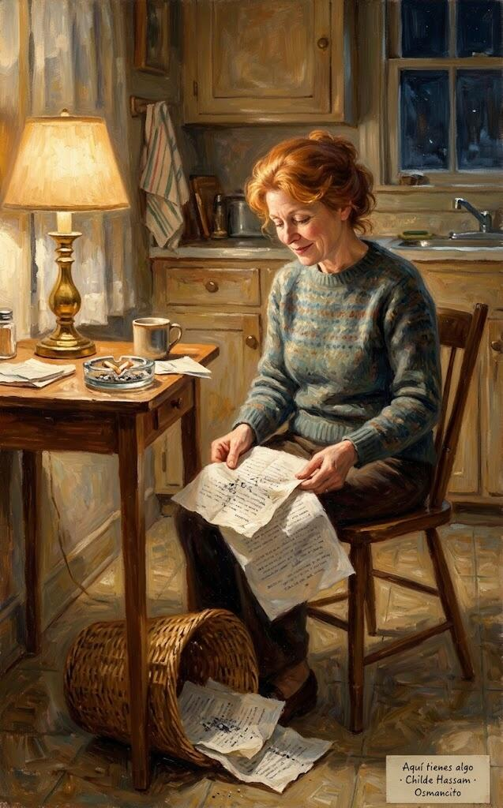
Mientras iba a la universidad, mi hermano Dave trabajaba los veranos como conserje en el instituto Brunswick, su antigua alma máter. Durante parte de un verano trabajé allí yo también. No recuerdo qué año, solo que fue antes de conocer a Tabby pero después de empezar a fumar. Eso me pondría en los diecinueve o los veinte, supongo. Me emparejaron con un tipo llamado Harry, que vestía pantalones militares verdes y un llavero enorme, y caminaba cojeando. (Sin embargo, él sí tenía manos en lugar de ganchos.) Una hora de almuerzo, Harry me contó cómo había sido enfrentarse a una carga banzai japonesa en la isla de Tarawa: todos los oficiales japoneses blandiendo espadas hechas con latas de café Maxwell House, y detrás todos los soldados rasos aullando, colocados hasta las cejas y oliendo a amapola quemada. Toda una revelación como cuentacuentos, mi amigo Harry.
Párrafo 1
Dave es el hermano de King, y el paréntesis es un guiño al otro Harry, el de los ganchos de la lavandería, de la M27. Tarawa es un atolón del Pacífico donde en noviembre de 1943 se libró una de las batallas más duras de la guerra contra Japón; la carga banzai era el asalto masivo a la desesperada de la infantería japonesa. El Harry de este apartado cuenta su guerra con espadas hechas de latas de café, y King lo escucha con medio oído atento y la otra mitad tomando notas: años después, el vestuario de chicas que limpió con él le dará la primera escena de Carrie.
Un día les tocó fregar el óxido de las duchas de las chicas. King reparó en dos cajas metálicas sin marcar (expendedoras de tampones, le explicó Harry a su manera) y en unas cortinas rosas que daban una intimidad negada a los chicos. Años después, en la lavandería, ese recuerdo se cruzó con un artículo viejo de Life sobre la telequinesia, atribuida sobre todo a chicas al borde de la adolescencia. Del cruce salió la escena: una niña tiene su primera regla sin saber qué le pasa y las otras le tiran tampones. La dejó en barbecho; cuando por fin la intentó, escribió tres páginas, las arrugó con disgusto y las tiró.
Tenía cuatro problemas con lo que había escrito. El primero, y el menos importante, era que la historia no me emocionaba. El segundo, algo más importante, era que no me gustaba demasiado el personaje principal. Carrie White parecía obtusa y pasiva, una víctima hecha de fábrica. Las otras chicas le lanzaban tampones y compresas, cantando «¡Tápatelo! ¡Tápatelo!», y a mí sencillamente me daba igual. El tercero, más importante aún, era no sentirme a gusto ni con el ambiente ni con mi reparto enteramente femenino. Había aterrizado en el Planeta Mujer, y una sola salida al vestuario de chicas del instituto Brunswick años antes no servía de mucha ayuda para orientarse allí. Para mí, escribir siempre ha funcionado mejor cuando es íntimo, tan sexy como piel con piel. Con Carrie me sentía como metido en un traje de neopreno que no podía quitarme. El cuarto problema, y el más importante de todos, fue darme cuenta de que la historia no rendiría si no era bastante larga, probablemente incluso más larga que «Sometimes They Come Back», que había estado en el límite absoluto de lo que el mercado de las revistas masculinas podía aceptar en número de palabras. Había que dejar mucho espacio para esas fotos de animadoras que de algún modo se habían olvidado de ponerse la ropa interior: eran lo que los tipos realmente compraban en las revistas. No veía sentido a perder dos semanas, quizá incluso un mes, creando una novela corta que no me gustaba y que no podría vender. Así que la tiré.
Párrafo 7
La lista de objeciones es la del oficio, no la del gusto: emoción, personaje, territorio propio y mercado. King decide con la cabeza fría del vendedor de cuentos y, según su propia contabilidad posterior, se equivoca: Carrie, publicada en abril de 1974, fue su primera novela y la que le cambió la vida. El «¡Tápatelo!» de las chicas volverá a sonar en la M34, aplicado a otra hemorragia y a otra mujer de la familia.
A la noche siguiente, Tabby encontró las páginas al vaciar la papelera, las desarrugó y las leyó. Quería saber el resto y se ofreció a ayudarle con lo de las chicas de instituto: «Aquí tienes algo.»
M30 · La resaca del instituto
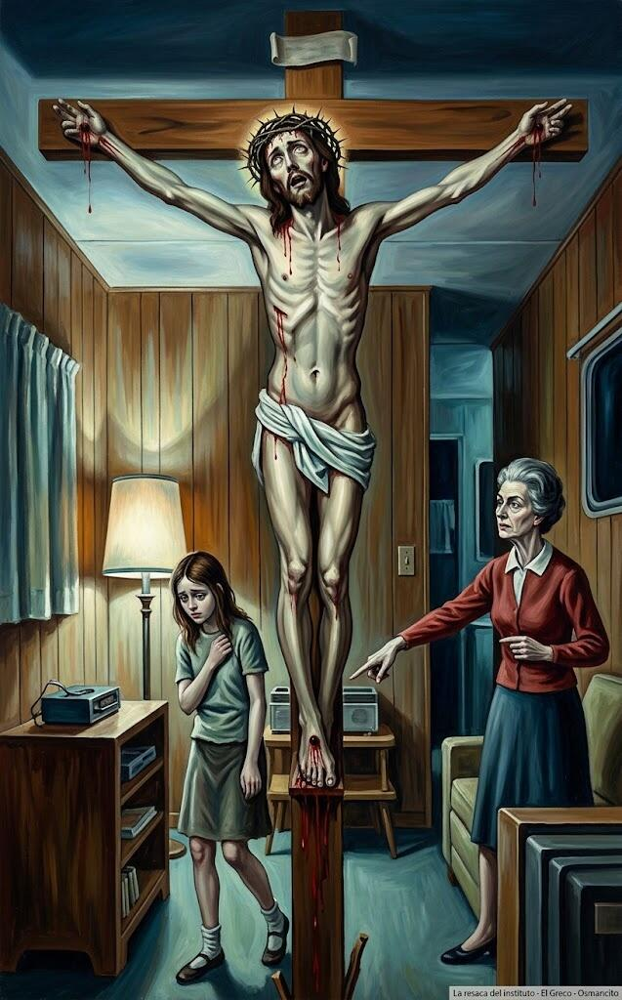
A Carrie White nunca llegó a quererla, pero ahí había una carrera. Ya llevaba tres novelas (Rage, The Long Walk y The Running Man, luego publicadas como Richard Bachman), y de Carrie aprendió que la primera impresión sobre un personaje puede estar tan equivocada como la de un lector, y que abandonar una obra porque cuesta es mala idea. Tabby le ayudó con datos de chicas; él, excavando en las dos más solitarias y odiadas de su clase.
A una de estas chicas la llamaré Sondra. Ella y su madre vivían en un tráiler no muy lejos de mí, con su perra, Cheddar Cheese. Sondra tenía una voz burbujeante y desigual, como si hablara siempre con la garganta llena de flemas apelmazadas. No estaba gorda, pero su carne tenía un aspecto blando y pálido, como la parte de abajo de algunas setas. El pelo se le pegaba a las mejillas acnéicas en tirabuzones apretados de Little Orphan Annie. No tenía amigas (salvo Cheddar Cheese, supongo). Un día su madre me contrató para mover unos muebles. Dominando la sala del tráiler había un Jesucristo crucificado de tamaño casi natural, con los ojos vueltos hacia arriba, la boca hacia abajo y la sangre goteando bajo la corona de espinas. Estaba desnudo salvo por un harapo retorcido alrededor de las caderas y los lomos. Por encima de ese taparrabos se veían el vientre hundido y las costillas salientes de un interno de campo de concentración. Se me ocurrió que Sondra había crecido bajo la mirada agonal de ese dios moribundo, y que eso sin duda había contribuido a convertirla en lo que era cuando la conocí: una paria tímida y poco agraciada que se escabullía por los pasillos del instituto de Lisbon como un ratón asustado.
Párrafo 4
Little Orphan Annie es una tira cómica estadounidense creada por Harold Gray en 1924, protagonizada por una niña huérfana de rizos pelirrojos. Lisbon es la localidad de Maine donde King hizo el instituto. El Jesús casi de tamaño natural explica a Sondra más que cualquier diagnóstico: aquí King ensaya el método que hará suyo, llegar al personaje por la casa donde creció.
La madre de Sondra le preguntó si estaba salvado; él juró que salvadísimo. La otra era Dodie Franklin: sus padres vivían para ganar concursos; entre los trofeos, el viejo Maxwell del cómico Jack Benny hundiéndose junto a la casa. Lo que nunca ganaron fue ropa: Dodie y su hermano vistieron lo mismo durante año y medio; aquello no era la Arcadia, era Dogpatch, el pueblucho de la tira Li'l Abner.
A Dodie y a Bill Franklin les fue más o menos bien en la escuela elemental de Durham, pero el instituto significaba un pueblo mucho más grande, y para niños como Dodie y Bill, Lisbon Falls significaba escarnio y ruina. Mirábamos con diversión y horror cómo la camisa de deporte de Bill se desteñía y empezaba a deshilacharse desde las mangas cortas hacia arriba. Reemplazó un botón perdido con un clip. Sobre un desgarrón detrás de una rodilla apareció cinta adhesiva, cuidadosamente ennegrecida con un crayón para que hiciera juego con los pantalones. La blusa blanca sin mangas de Dodie empezó a amarillear de uso, de edad y de manchas de sudor acumuladas. A medida que se volvía más fina, los tirantes de su sostén se transparentaban cada vez con más claridad. Las otras chicas se burlaban de ella, al principio a sus espaldas y luego en su cara. Las pullas se volvieron escarnio. Los chicos no participábamos; teníamos a Bill para encargarnos de él (sí, yo ayudé: no mucho, pero estuve allí). A Dodie le fue peor, creo. Las chicas no solo se reían de Dodie; también la odiaban. Dodie era todo aquello que ellas temían ser.
Párrafo 9
La confesión entre paréntesis («sí, yo ayudé») es uno de los pocos lugares de este libro donde King se incluye entre los verdugos, y pesa más que cualquier sermón contra el acoso escolar. Durham es el pueblo de Maine donde creció.
Después de las vacaciones de Navidad de nuestro segundo año, Dodie volvió al instituto resplandeciente. La faldita negra y anticuada había sido reemplazada por una color arándano que le llegaba a las rodillas en vez de a media espinilla. Los calcetines raídos habían sido reemplazados por medias de nailon, que le quedaban bastante bien porque por fin se había afeitado la exuberante mata de vello negro de las piernas. La antigua blusa sin mangas había cedido el paso a un suéter suave de lana. Incluso se había hecho la permanente. Dodie era una chica transformada, y se le veía en la cara que lo sabía. No tengo idea de si ahorró para esa ropa nueva, si se la regalaron sus padres por Navidad o si pasó por un infierno de súplicas que por fin dio frutos. No importa, porque la ropa sola no cambió nada. Las burlas de aquel día fueron peores que nunca. Sus compañeros no tenían intención de dejarla salir de la caja en que la habían metido; fue castigada por intentar siquiera escapar. Tenía varias clases con ella, y pude observar la ruina de Dodie de primera mano. Vi cómo se le apagaba la sonrisa, vi la luz de sus ojos apagarse primero y extinguirse después. Al final del día era la chica que había sido antes de las vacaciones de Navidad: un espectro de cara pastosa y mejillas pecosas que se apresuraba por los pasillos con los ojos bajos y los libros apretados contra el pecho.
Párrafo 10
El día de la ropa nueva es la escena primordial del acoso: el castigo no cae sobre la pobreza, cae sobre el intento de escapar de ella. De estas dos chicas reales, Sondra y Dodie, saldrá la alumna humillada de Carrie.
Dodie se puso la ropa nueva al día siguiente, y al otro, hasta que el calor hizo absurda la lana; fracasada la fuga, las burlas volvieron. Cuando King empezó Carrie, las dos estaban muertas: Sondra, epiléptica, sola durante una crisis; Dodie, de un tiro tras el nacimiento de un hijo (depresión posparto, dijeron; él sospecha que la resaca del instituto). Nunca le gustó Carrie, esa versión femenina de Eric Harris y Dylan Klebold, los dos alumnos que en 1999 mataron a trece personas en un instituto de Columbine, Colorado; pero por Sondra y Dodie llegó a entenderla, y a compadecer a sus compañeros: él fue uno.
M31 · Una noche para soñar
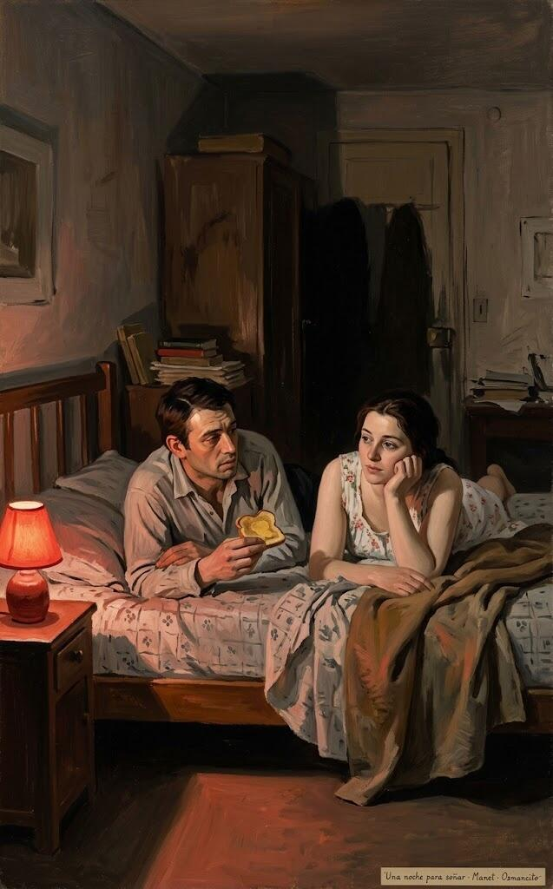
El manuscrito salió hacia Doubleday, la editorial de su editor William Thompson (que luego descubriría a John Grisham), y King volvió a dar clase. Una tarde lo llamaron a la oficina: su mujer al teléfono, que sin teléfono en casa solo anunciaba desastre o venta. Tabby le leyó el telegrama: FELICIDADES. CARRIE YA ES OFICIALMENTE UN LIBRO DOUBLEDAY. ¿VALE UN ADELANTO DE 2500 DÓLARES?
Dos mil quinientos dólares era un adelanto muy pequeño, incluso para principios de los setenta, pero yo no lo sabía y no tenía agente literario que lo supiera por mí. Antes de que se me ocurriera que podía necesitar un agente, ya había generado bastante más de tres millones de dólares en ingresos, buena parte de ellos para la editorial. (El contrato estándar de Doubleday de aquellos días era mejor que la servidumbre por deudas, pero no mucho.) Y mi novelita de terror de instituto avanzó hacia la publicación con una lentitud exasperante. Aunque fue aceptada a finales de marzo o principios de abril de 1973, la publicación no estaba prevista hasta la primavera de 1974. No era nada raro. En aquellos días Doubleday era una enorme fábrica de ficción que producía misterios, romances, relatos de ciencia ficción y westerns Double D a razón de cincuenta o más al mes, todo ello además de una sólida lista de novedades con libros de pesos pesados como Leon Uris y Allen Drury. Yo era solo un pez pequeño en un río muy concurrido.
Párrafo 5
El adelanto es el pago inicial de la editorial a cuenta de las ventas futuras; el agente literario es el representante que negocia esos contratos, y King aprendió su valor por la vía cara: sin agente, firmó un contrato que él mismo compara con la servidumbre. Doubleday era entonces una de las grandes editoriales de Nueva York, y Uris y Drury, dos de sus novelistas de mayor venta. El año de espera entre aceptación y publicación, normal en una fábrica de cincuenta títulos al mes, debió de parecerle eterno a quien no podía pagar el teléfono.
Tabby me preguntó si podía dejar la enseñanza. Le dije que no, no basándome en un adelanto de dos mil quinientos dólares y solo en posibilidades nebulosas más allá. De haber estado solo, quizá (diablos, probablemente). ¿Pero con mujer y dos hijos? Ni hablar. Recuerdo que aquella noche estuvimos los dos tumbados en la cama, comiendo tostadas y hablando hasta las tantas. Tabby me preguntó cuánto ganaríamos si Doubleday conseguía vender los derechos de edición en bolsillo de Carrie, y le dije que no lo sabía. Había leído que Mario Puzo acababa de conseguir un adelanto enorme por los derechos en bolsillo de El Padrino (cuatrocientos mil dólares, según el periódico), pero no creía que Carrie fuera a alcanzar nada parecido, suponiendo que llegara a venderse en bolsillo.
Párrafo 6
Mario Puzo es el autor de El Padrino (1969); según sus propios recuerdos, los derechos de bolsillo de aquella novela se vendieron por 410.000 dólares, cifra récord de la época. La escena de las tostadas es la medida exacta de la prudencia de King: soñar despierto con el dinero de otro mientras firma otro año de enseñanza.
Tabby preguntó si el libro se vendería en bolsillo; él dijo que probablemente sí, y quizá por sesenta mil dólares. La mitad era de la editorial, pero treinta mil eran cuatro años de enseñanza. Castillos en el aire, quizá, pero era una noche para soñar.
M32 · Un cuatro y cinco ceros
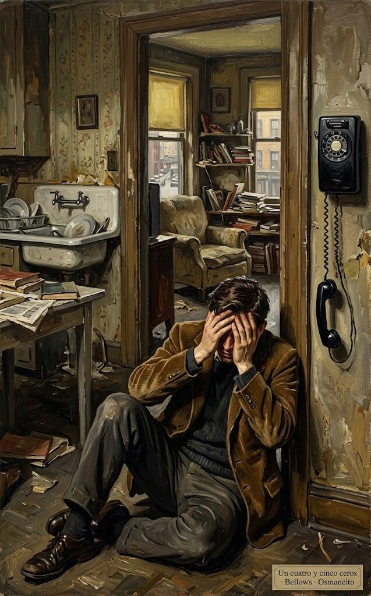
Mientras Carrie avanzaba despacio, el adelanto se fue en un coche nuevo, King firmó otro año de enseñanza y escribía una novela mezcla de Peyton Place, de Grace Metalious, y del Drácula de Bram Stoker, publicada luego como 'Salem's Lot.
A decir verdad, Carrie había desaparecido de mi radar casi por completo. Los niños daban mucho trabajo, tanto los del instituto como los de casa, y había empezado a preocuparme por mi madre. Tenía sesenta y un años, seguía trabajando en el Pineland Training Center y estaba tan graciosa como siempre, pero Dave decía que se sentía mal a menudo. Su mesilla de noche estaba cubierta de analgésicos de receta, y él temía que le pasara algo serio. «Ya sabes que siempre ha fumado como una chimenea», dijo Dave. Él era el más indicado para hablar, porque fumaba como una chimenea (yo también, y cómo odiaba mi mujer el gasto y la porquería de ceniza constante), pero yo sabía a qué se refería. Y aunque no vivía tan cerca de ella como Dave ni la veía tan a menudo, la última vez que la había visto me había dado cuenta de que había adelgazado.
Párrafo 2
El cáncer de la madre, anunciado en la M27 con la foto del jardín, es el hilo que atraviesa estos apartados hasta su desenlace en la M34. La familia entera sospecha antes de que nadie diga la palabra, igual que ella se lo calló todo siempre.
—¿Qué podemos hacer? —Nada, hasta que ella pida: la madre se lo guardaba todo. Un domingo llamó Bill Thompson: los derechos de bolsillo de Carrie vendidos a Signet Books por cuatrocientos mil dólares; doscientos mil, suyos. King, a quien su abuelo Guy decía que al hablar se le caían las tripas, se quedó mudo y se dejó caer al suelo.
Hablamos media hora más, pero no recuerdo ni una sola palabra de lo que dijimos. Cuando terminó la conversación, intenté llamar a Tabby a casa de su madre. Su hermana pequeña, Marcella, dijo que Tab ya había salido. Yo caminaba de un lado a otro por el apartamento en calcetines, explotando de buenas noticias y sin un oído que las escuchara. Temblaba entero. Por fin me puse los zapatos y caminé hasta el centro. La única tienda abierta en Main Street de Bangor era la farmacia LaVerdiere's. De pronto sentí que tenía que comprarle a Tabby un regalo del Día de la Madre, algo salvaje y extravagante. Lo intenté, pero he aquí uno de los hechos ciertos de la vida: no hay nada realmente salvaje y extravagante a la venta en LaVerdiere's. Hice lo que pude. Le compré un secador de pelo.
Párrafo 15
El gesto es el de un hombre de veinticinco años que nunca ha tenido dinero: en la única tienda abierta de un Bangor dominical, el regalo salvaje y extravagante posible es un secador de pelo. Es también el reverso del cheque de la M27: allí quinientos dólares compraban el médico y una cena; aquí doscientos mil compran el fin del miedo.
Cuando Tabby volvió cantando con la radio, él le dio el secador y le contó la venta, dos veces. Ella miró el apartamentito por encima del hombro de él y rompió a llorar.
M33 · Chicos de universidad
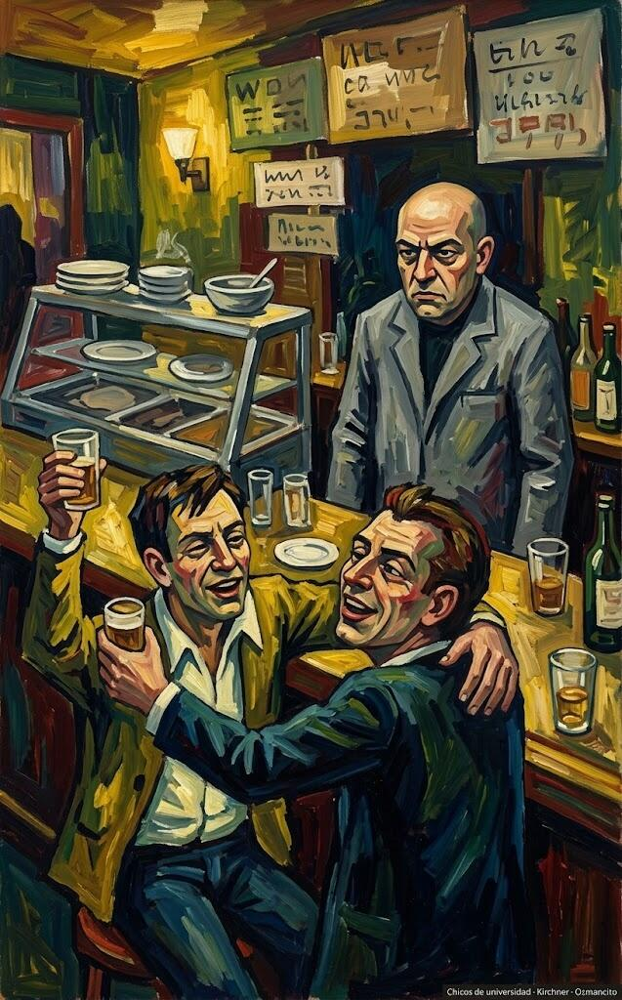
King se emborrachó por primera vez en 1966, en el viaje de fin de curso a Washington: primera noche en Nueva York, donde la edad legal era dieciocho y él casi tenía diecinueve.
Un grupo de los chicos más aventureros encontramos una licorería a la vuelta de la esquina del hotel. Recorrí los estantes con la mirada, consciente de que mi dinero para gastos estaba lejos de ser una fortuna. Había demasiado: demasiadas botellas, demasiadas marcas, demasiados precios por encima de diez dólares. Al final me rendí y le pregunté al tipo del mostrador (el mismo tipo calvo, aburrido y de bata gris que, estoy convencido, les vende a los vírgenes del alcohol su primera botella desde los albores del comercio) qué era barato. Sin una palabra, puso una pinta de whisky Old Log Cabin sobre el tapete de Winston junto a la caja registradora. La etiqueta del precio decía 1,95 dólares. El precio era el correcto.
Párrafo 2
El tipo calvo de bata gris vuelve a aparecer diez años después, al final de este mismo apartado, detrás de la barra de un bar: King cierra el arco de su primera borrachera con el mismo personaje, real o convenido. La pinta a 1,95 dólares es la primera compra de una biografía paralela que corre bajo todo el libro: la del bebedor.
Lo recuerda como una escena vista desde fuera: subido al ascensor por sus amigos, paseado por el pasillo de las chicas, declarando amores incomprensibles. Luego la cama quieta y la habitación girando como el plato del tocadiscos; la taza de vómito amarillo («parece Niblets», el maíz de Green Giant, pensó, y arrancó de nuevo), y de vuelta a la cama a gatas. Por la mañana, el diafragma dolorido y la luz concentrada por sus ojos como si fueran lupas.
Participar en las actividades programadas de ese día (caminata hasta Times Square, paseo en barco hasta la Estatua de la Libertad, subida a lo alto del Empire State Building) quedaba descartado. ¿Caminar? Urk. ¿Barcos? Doble urk. ¿Ascensores? Urk a la cuarta potencia. Dios, apenas puedo moverme. Puse alguna excusa débil y pasé la mayor parte del día en la cama. A última hora de la tarde me sentía un poco mejor. Me vestí, me arrastré pasillo abajo hasta el ascensor y bajé a la primera planta. Comer seguía siendo imposible, pero creía estar listo para una gaseosa de jengibre, un cigarrillo y una revista. ¿Y a quién veo en el vestíbulo, sentado en un sillón y leyendo el periódico, sino al señor Earl Higgins, alias Old Cue-Ball? Paso junto a él tan silenciosamente como puedo, pero no sirve. Cuando vuelvo de la tienda de recuerdos, está con el periódico sobre el regazo, mirándome. Siento que el estómago se me cae. Ahí vienen más problemas con el director, probablemente peores que los que me busqué con The Village Vomit. Me hace señas de que me acerque y descubro algo interesante: el señor Higgins es en realidad un tipo legal. Me castigó con dureza por mi periódico de broma, pero quizá insistió en ello la señorita Margitan. Y yo solo tenía dieciséis años, después de todo. El día de mi primera resaca voy camino de los diecinueve, me han aceptado en la universidad estatal y me espera un trabajo en la fábrica cuando termine el viaje de fin de curso.
Párrafo 8
Old Cue-Ball («Vieja Bola de Billar», por la calva) es el director de su instituto, y The Village Vomit, el periódico satírico que King publicó en él y que le costó un castigo: ambas historias están en los apartados anteriores de La Memoria. El apunte sobre la señorita Margitan es una amnistía tardía: años después, el verdugo del periódico escolar resulta ser un tipo legal y la culpa era quizá de otra.
—Me han dicho que estabas demasiado enfermo para recorrer Nueva York —dice Old Cue-Ball. —Espero que no vuelvas a pillar ese virus —dice el director, con los ojos preguntando si se entienden. Se entienden: King jura no repetir jamás. Al día siguiente, en el país amish, una licorería le vende bourbon Four Roses sin identificación, y para la noche está borracho otra vez.
Unos diez años después estoy en un bar irlandés con Bill Thompson. Tenemos mucho que celebrar, no lo menos la terminación de mi tercer libro, The Shining. Que da la casualidad de que trata de un escritor alcohólico y exprofesor de escuela. Es julio, la noche del partido de las Estrellas del béisbol. Nuestro plan es comer una buena comida de las de antes, de los platos dispuestos en la mesa de vapor, y luego emborracharnos hasta las cejas. Empezamos con un par en la barra, y yo me pongo a leer todos los carteles. TÓMATE UN MANHATTAN EN MANHATTAN, dice uno. LOS MARTES SON DOS POR UNO, dice otro. EL TRABAJO ES LA MALDICIÓN DE LA CLASE BEBEDORA, dice un tercero. Y ahí, justo delante de mí, hay uno que reza: ¡OFERTA DE MADRUGADOR! SCREWDRIVERS A UN DÓLAR, DE LUNES A VIERNES, 8-10 A.M.
Párrafo 16
The Shining, publicada en enero de 1977, fue la tercera novela de King y trata, efectivamente, de un escritor alcohólico; el autor aún no se reconocía en el retrato. Los carteles anuncian bebidas del bar a precio de risa, y el último (oferta de madrugador, de ocho a diez de la mañana) pone la trampa de la escena.
—¿Quién entra a las ocho y cuarto de la mañana a pedir un screwdriver? —pregunta King, sonriendo, al camarero: calvo, chaqueta gris, quizá el mismo tipo de 1966. El camarero no le devuelve la sonrisa: —Chicos de universidad. Igual que tú.
M34 · Mis niños
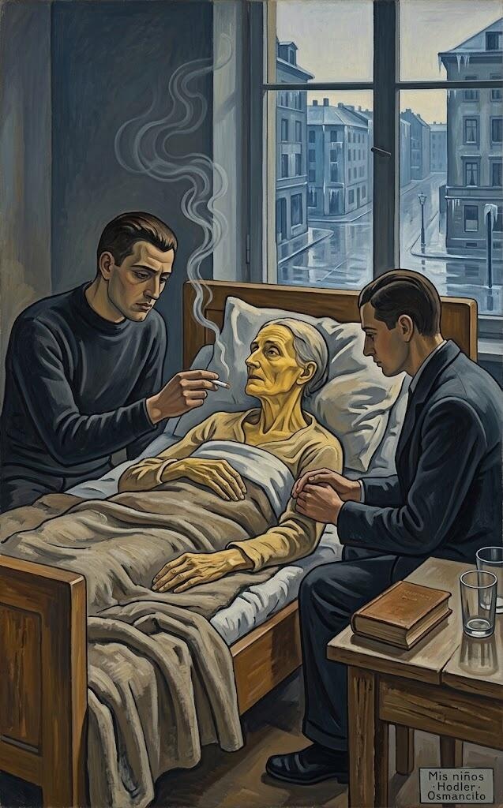
En 1971 o 1972, Carolyn Weimer, la hermana de mamá, murió de cáncer de mama. Mi madre y mi tía Ethelyn (la gemela de Carolyn) volaron al funeral de la tía Cal, en Minnesota. Era la primera vez que mi madre volaba en veinte años. En el viaje de vuelta empezó a sangrar profusamente por lo que ella habría llamado «sus vergüenzas». Aunque hacía mucho que había pasado su cambio de vida, se dijo que era simplemente una última regla. Encerrada en el baño diminuto de un avión de TWA que cabeceaba, contuvo la sangre con tampones (tápatelo, tápatelo, podrían haber cantado Sue Snell y sus amigas), y luego volvió a su asiento. No le dijo nada a Ethelyn y nada a David ni a mí. No fue a ver a Joe Mendes, en Lisbon Falls, su médico desde tiempo inmemorial. En lugar de cualquiera de esas cosas, hizo lo que siempre hacía en los malos momentos: se lo guardó para sí. Durante un tiempo, las cosas parecieron ir bien. Disfrutaba de su trabajo, disfrutaba de sus amigos y disfrutaba de sus cuatro nietos, dos de la familia de Dave y dos de la mía. Luego las cosas dejaron de ir bien. En agosto de 1973, durante una revisión después de una operación para «pelar» algunas de sus venas varicosas más escandalosas, a mi madre le diagnosticaron cáncer de útero. Creo que Nellie Ruth Pillsbury King, que una vez tiró un bol de Jell-O al suelo y luego bailó en él mientras sus dos chicos yacían doblados en el rincón, muertos de risa, murió en realidad de vergüenza.
Párrafo 1
El tápatelo, tápatelo entre paréntesis cita la escena de las duchas de Carrie (M29): Sue Snell es una de las chicas de la novela, y la broma amarga enlaza la hemorragia de la madre con la de la hija de ficción. El bol de Jell-O bailado es la medida de lo que la enfermedad apagó: la mujer capaz de esa payasada eligió morir antes que decirle a su médico que sangraba. TWA era una de las grandes aerolíneas estadounidenses del siglo XX.
El final llegó en febrero de 1974, con dinero de Carrie para gastos médicos. King dormía en el cuarto de atrás de casa de Dave, con resaca moderada: uno no quiere estar demasiado resacoso en el lecho de muerte de su madre.
Dave me despertó a las 6:15 de la mañana, llamando suavemente a través de la puerta para decir que creía que ella se iba. Cuando entré en el dormitorio principal, él estaba sentado a su lado en la cama y le acercaba un Kool para que fumara. Ella lo hacía entre ásperas bocanadas de aire. Estaba solo semiconsciente, con los ojos yendo de Dave a mí y luego otra vez a Dave. Me senté junto a Dave, tomé el cigarrillo y se lo acerqué a la boca. Los labios se le estiraron para prenderse del filtro. Junto a su cama, reflejada una y otra vez en un grupo de vasos, había una de las primeras pruebas encuadernadas de Carrie. La tía Ethelyn se la había leído en voz alta un mes antes, más o menos, de morir.
Párrafo 3
El cigarrillo sostenido por los hijos, que saben perfectamente qué la mata, es la despedida exacta de esta familia: sin sermones, con un Kool. Y junto a la cama, el libro que pagó los gastos médicos: la tía Ethelyn se lo leyó entero en voz alta antes de que muriera. Kool es una marca de cigarrillos mentolados.
Pesaba unos cuarenta kilos; la piel, amarilla y tirante como la de las momias que México exhibe en el Día de Muertos. Turnaron el cigarrillo hasta el filtro. «Mis niños», dijo, y se hundió. Le cogieron una mano cada uno; la pausa tras cada respiración se alargó hasta que todo fue pausa.
M35 · El elogio
Mi madre fue enterrada desde la iglesia congregacional de Southwest Bend; la iglesia de Methodist Corners, donde crecimos mi hermano y yo, estaba cerrada por el frío. Yo di el elogio. Creo que lo hice bastante bien, teniendo en cuenta lo borracho que estaba.
Párrafo 1
El elogio es el discurso en honor del muerto, y lo pronunció el hijo escritor borracho: los dos hilos de toda La Memoria, el oficio de las palabras y la bebida, se cruzan aquí en una sola línea. Southwest Bend y Methodist Corners son parajes de Durham, el pueblo de Maine donde crecieron, ya nombrado en la M30.
M36 · Soy alcohólico
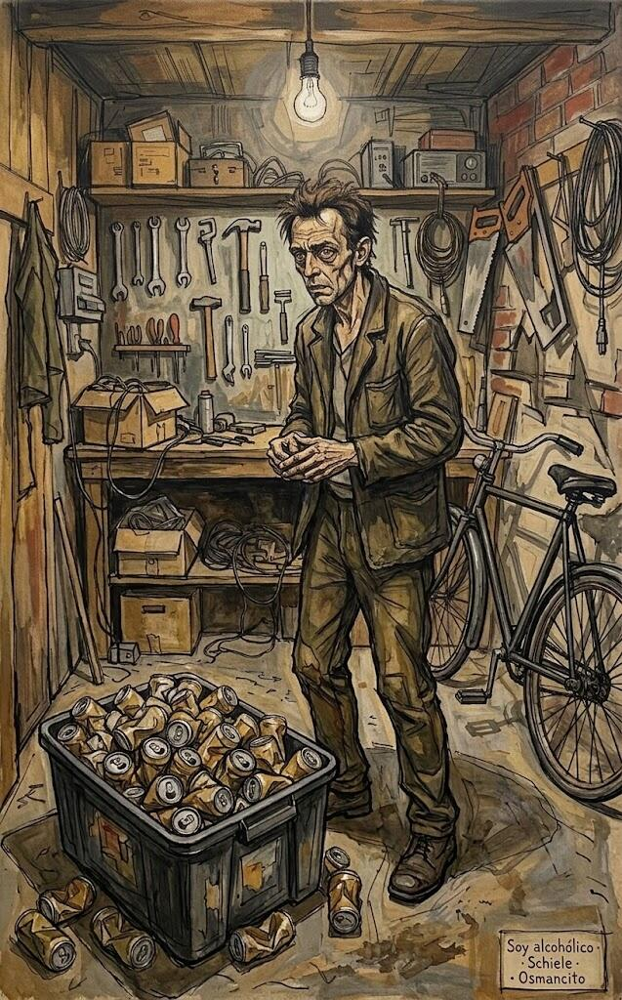
Los alcohólicos construyen defensas como los holandeses construyen diques. Pasé los primeros doce años, más o menos, de mi vida de casado asegurándome a mí mismo que «simplemente me gustaba beber». También empleé la mundialmente famosa Defensa Hemingway. Aunque nunca articulada con claridad (no sería varonil hacerlo), la Defensa Hemingway viene a ser más o menos así: como escritor, soy un tipo muy sensible, pero también soy un hombre, y los hombres de verdad no ceden ante sus sensibilidades. Solo los hombres afeminados hacen eso. Por lo tanto, bebo. ¿De qué otro modo puedo enfrentar el horror existencial de todo y seguir trabajando? Además, vamos, yo puedo controlarlo. Un hombre de verdad siempre puede.
Párrafo 1
Los diques holandeses son la defensa contra el mar de un país ganado al agua. La Defensa Hemingway lleva el nombre de Ernest Hemingway, el escritor estadounidense convertido en símbolo del novelista macho que bebe mucho y escribe seco. El razonamiento es circular a propósito: soy sensible, los hombres no ceden, luego bebo; la M37 le da la respuesta completa.
La ley de envases retornables de Maine mandó sus latas al garaje; un jueves encontró el contenedor casi lleno, y era el único de la casa que bebía Miller Lite. Joder, soy un alcohólico, pensó.
Si la cagaba, si volcaba el coche una noche en una carretera secundaria o estropeaba una entrevista en televisión en directo, alguien me diría que tenía que controlar mi forma de beber, y decirle a un alcohólico que controle su forma de beber es como decirle a un tipo que sufre el caso de diarrea más cataclísmico del mundo que controle sus cagaleras. Un amigo mío que ha pasado por esto cuenta una historia divertida sobre su primer intento titubeante de tomar las riendas de su vida, cada vez más resbaladiza. Fue a ver a un consejero y le dijo que su mujer estaba preocupada porque bebía demasiado.
Párrafo 4
La comparación con la diarrea es deliberadamente poco poética: contra la idea romántica del alcoholismo como tragedia elegante, King pone la incontinencia.
Su amigo, ante el consejero que le preguntó cuánto bebía: «Todo». Doce años sin beber y aún quiere gritar «¡Termínala!» ante una copa a medias. Sus últimas noches terminaban vertiendo las sobrantes por el fregadero, porque si no le hablaban desde la nevera.
M37 · Dos semanas para pensarlo
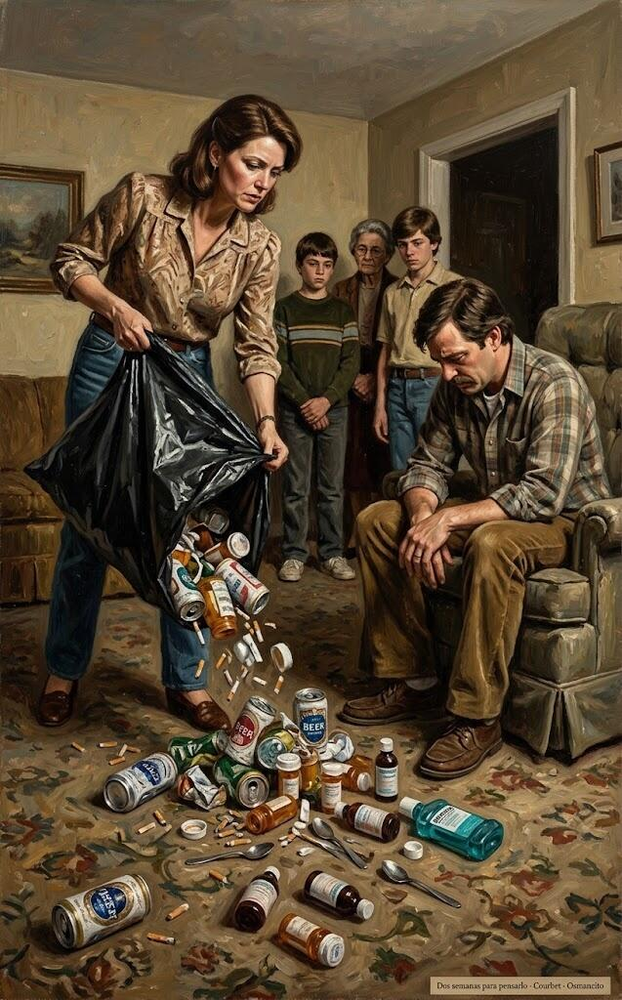
Para 1985, a la bebida se habían sumado las drogas; él seguía funcionando, no sabía vivir de otro modo y no podía pedir ayuda: en su familia se lo guardaba todo. Pero la parte que escribía empezó a gritar socorro por la única vía que conocía: Misery (finales de 1985), donde una enfermera psicótica tortura a un escritor, y The Tommyknockers (1986), donde una nave alienígena enterrada da energía e inteligencia superficial a cambio del alma, la mejor metáfora de las drogas que su mente agotada pudo producir.
Poco después, mi mujer, convencida por fin de que yo no iba a salir por mí mismo de esa fea espiral descendente, pasó a la acción. No pudo ser fácil (para entonces yo ya no estaba a gritos de mi juicio), pero lo hizo. Organizó un grupo de intervención formado por familia y amigos, y fui obsequiado con una especie de Esta Es Su Vida en el infierno. Tabby empezó volcando sobre la alfombra una bolsa de basura llena de cosas de mi oficina: latas de cerveza, colillas, cocaína en frascos de gramo y cocaína en bolsitas de plástico, cucharitas de coca apelmazadas de mocos y sangre, Valium, Xanax, frascos de jarabe para la tos Robitussin y de medicina para el resfriado NyQuil, incluso botellas de enjuague bucal. Un año antes, observando la rapidez con que desaparecían del baño los botellones de Listerine, Tabby me había preguntado si me bebía esa cosa. Le respondí con altanería escandalizada que por supuesto que no. Ni lo hacía. Yo me bebía el Scope. Era más sabroso, tenía ese toque de menta.
Párrafo 4
Una intervención es el asalto planeado de la familia al adicto: mostrarle de golpe todo lo que oculta. Esta Es Su Vida era un programa de televisión estadounidense en que el invitado veía desfilar su propia vida ante las cámaras. La distinción finísima que King defiende con orgullo (él no bebía Listerine, bebía Scope) es el retrato exacto del adicto negociando consigo mismo.
La intervención era para hacerle ver que se moría delante de los suyos: rehabilitación o fuera de casa, dijo Tabby. Él negoció dos semanas para pensarlo: el hombre en el tejado en llamas pidiéndole al helicóptero dos semanas. Lo que lo decidió fue Annie Wilkes, la enfermera de Misery: Annie era la coca y la bebida, y él estaba cansado de ser su escritor mascota.
No hizo falta, por supuesto. La idea de que la empresa creativa y las sustancias que alteran la mente van entrelazadas es uno de los grandes mitos pop-intelectuales de nuestro tiempo. Los cuatro escritores del siglo veinte cuya obra es más responsable de él son probablemente Hemingway, Fitzgerald, Sherwood Anderson y el poeta Dylan Thomas. Son los escritores que formaron en gran parte nuestra visión de un páramo angloparlante existencial donde la gente ha quedado aislada de los demás y vive en una atmósfera de estrangulación emocional y desesperanza. Estos conceptos les resultan muy familiares a la mayoría de los alcohólicos; la reacción común ante ellos es la diversión. Los escritores que abusan de sustancias son solo abusadores de sustancias: borrachos y drogadictos comunes de jardín de enfrente, en otras palabras. Cualquier afirmación de que las drogas y el alcohol son necesarios para embotar una sensibilidad más fina es la misma mierda interesada de siempre. He oído a quitanieves alcohólicos hacer la misma afirmación, que beben para acallar a los demonios. No importa si eres James Jones, John Cheever o un pordiosero durmiendo la mona en Penn Station; para un adicto, el derecho a la bebida o droga elegida debe preservarse a toda costa. Hemingway y Fitzgerald no bebían porque fueran creativos, estuvieran alienados o fueran moralmente débiles. Bebían porque es lo que los alcohólicos están cableados para hacer. Es probable que la gente creativa corra mayor riesgo de alcoholismo y adicción que la de otros oficios, ¿y qué? Todos parecemos más o menos iguales cuando vomitamos en la cuneta.
Párrafo 8
Los cuatro nombres del mito: Ernest Hemingway y F. Scott Fitzgerald, novelistas estadounidenses (este último escribió El gran Gatsby); Sherwood Anderson, autor de Winesburg, Ohio; y Dylan Thomas, poeta galés muerto a los treinta y nueve años. James Jones escribió De aquí a la eternidad, John Cheever fue maestro del cuento estadounidense y Penn Station es la gran estación de tren de Nueva York. El argumento final es autobiográfico: si la bebida fuera el precio del talento, sobrio no habría recuperado nada, y el apartado siguiente cuenta lo que encontró al volver.
M38 · La casa de verano
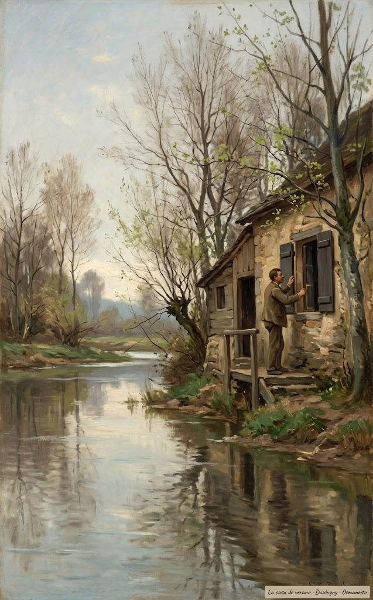
Al final de mis aventuras me bebía una caja de latas grandes de dieciséis onzas por noche, y hay una novela, Cujo, que apenas recuerdo haber escrito. No lo digo con orgullo ni con vergüenza, solo con una vaga sensación de pena y pérdida. Me gusta ese libro. Ojalá pudiera recordar haber disfrutado de las partes buenas mientras las ponía en la página.
Párrafo 1
La lata tallboy es la lata grande de cerveza estadounidense: dieciséis onzas, casi medio litro. Cujo (1981) es la novela del perro rabioso, y haberla olvidado entera es la medida del fondo: el éxito seguía saliendo de la máquina aunque el operario ya no estuviera.
En lo peor ya no quería beber y tampoco quería estar sobrio. Me sentía desahuciado de la vida. Al principio del camino de vuelta solo intenté creer a la gente que decía que las cosas mejorarían si les daba tiempo para hacerlo. Y nunca dejé de escribir. Algunas de las cosas que salieron eran titubeantes y planas, pero al menos estaban ahí. Enterré esas páginas infelices y desvaídas en el cajón de fondo de mi escritorio y pasé al proyecto siguiente. Poco a poco volví a encontrar el ritmo, y después volví a encontrar la alegría. Volví a mi familia con gratitud, y a mi trabajo con alivio: volví a él como la gente vuelve a la casa de verano después de un largo invierno, comprobando primero que no hayan robado ni roto nada durante la estación fría. Nada había pasado. Seguía todo allí, seguía todo entero. Una vez descongeladas las tuberías y conectada de nuevo la electricidad, todo funcionó bien.
Párrafo 2
La casa de verano del título del apartado es esta: el talento como una casa cerrada que resiste el invierno sola. La metáfora responde al miedo del apartado anterior, no poder trabajar sin beber: no le robó nada nadie, ni siquiera él mismo.
M39 · El escritorio en el rincón
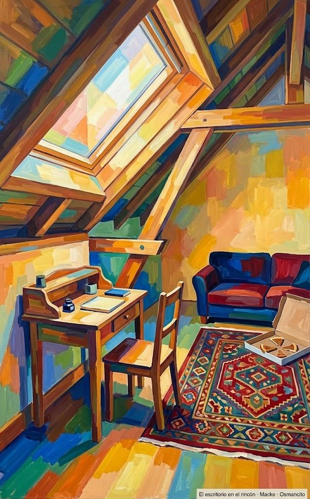
Lo último que quiero contarte en esta parte es lo de mi escritorio. Durante años soñé con tener el tipo de losa maciza de roble que domina una habitación: se acabó el escritorio de niño en el lavadero-armario de un tráiler, se acabó el hueco estrecho para las rodillas en una casa alquilada. En 1981 conseguí el que quería y lo coloqué en medio de un estudio espacioso y con tragaluz (es un desván de establo reconvertido en la parte trasera de la casa). Durante seis años me senté detrás de ese escritorio borracho o colocado hasta las cejas, como el capitán de un barco al mando de un viaje a ninguna parte.
Párrafo 1
El escritorio enorme es el trofeo del éxito comprado en el peor momento: 1981 es el año de Cujo, la novela que no recuerda haber escrito. El capitán del viaje a ninguna parte manda en una nave que no se mueve; la metáfora resume seis años.
Un año o dos después de volverme sobrio, me deshice de esa monstruosidad y puse en su lugar un conjunto de sala de estar, eligiendo las piezas y una bonita alfombra turca con la ayuda de mi mujer. A principios de los noventa, antes de mudarse a sus propias vidas, mis hijos subían a veces por las tardes a ver un partido de baloncesto o una película y a comer pizza. Normalmente dejaban atrás una caja llena de bordes cuando se marchaban, pero no me importaba. Venían, parecían disfrutar de estar conmigo, y yo sé que yo disfrutaba de estar con ellos. Conseguí otro escritorio: es artesanal, precioso y la mitad de grande que el escritorio T. rex. Lo puse en el extremo oeste de la oficina, en un rincón bajo el alero. Ese alero es muy parecido a aquel bajo el que dormía en Durham, pero no hay ratas en las paredes ni una abuela senil abajo gritando que alguien le dé de comer a Dick, el caballo. Ahora estoy sentado bajo él, un hombre de cincuenta y tres años con la vista mala, una pierna renqueante y sin resaca. Hago lo que sé hacer, y tan bien como sé hacerlo. Sobreviví a todas las cosas que te he contado (y a muchas más que no te he contado), y ahora voy a contarte todo lo que pueda sobre el oficio. Como prometí, no llevará mucho tiempo.
Párrafo 2
El alero de Durham, las ratas en las paredes y la abuela con el caballo vienen de los primeros apartados de La Memoria: la oficina nueva repite la arquitectura de la infancia sin sus fantasmas. El escritorio T. rex es como llama al monstruo de roble; el pequeño en el rincón es su corrección hecha mueble.
Y la razón de que el escritorio esté en el rincón y no en medio de la habitación es la última enseñanza de La Memoria: la vida no es un sistema de apoyo para el arte; es al revés.
Los Originales
Esta sección reúne, en el idioma del libro y por orden de aparición, los párrafos que arriba van en castellano. El número de cada uno lleva de vuelta a su lugar en la lectura.
La pregunta de Amy
Párrafo 3It didn’t happen that way, because the group never quite broke up. We found that we liked playing together too much to quit, and with a couple of “ringer” musicians on sax and drums (plus, in the early days, our musical guru, Al Kooper, at the heart of the group), we sounded pretty good. You’d pay to hear us. Not a lot, not U2 or E Street Band prices, but maybe what the oldtimers call “roadhouse money.” We took the group on tour, wrote a book about it (my wife took the photos and danced whenever the spirit took her, which was quite often), and continue to play now and then, sometimes as The Remainders, sometimes as Raymond Burr’s Legs. The personnel comes and goes—columnist Mitch Albom has replaced Barbara on keyboards, and Al doesn’t play with the group anymore ’cause he and Kathi don’t get along—but the core has remained Kathi, Amy, Ridley, Dave, Mitch Albom, and me … plus Josh Kelly on drums and Erasmo Paolo on sax.
Párrafo 7The easy answer is that someone who has sold as many books of fiction as I have must have something worthwhile to say about writing it, but the easy answer isn’t always the truth. Colonel Sanders sold a hell of a lot of fried chicken, but I’m not sure anyone wants to know how he made it. If I was going to be presumptuous enough to tell people how to write, I felt there had to be a better reason than my popular success. Put another way, I didn’t want to write a book, even a short one like this, that would leave me feeling like either a literary gas-bag or a transcendental asshole. There are enough of those books—and those writers—on the market already, thanks.
M1 · El paisaje con niebla
Párrafo 2I’m not that way. I lived an odd, herky-jerky childhood, raised by a single parent who moved around a lot in my earliest years and who—I am not completely sure of this—may have farmed my brother and me out to one of her sisters for awhile because she was economically or emotionally unable to cope with us for a time. Perhaps she was only chasing our father, who piled up all sorts of bills and then did a runout when I was two and my brother David was four. If so, she never succeeded in finding him. My mom, Nellie Ruth Pillsbury King, was one of America’s early liberated women, but not by choice.
Párrafo 4What follows are some of those memories, plus assorted snapshots from the somewhat more coherent days of my adolescence and young manhood. This is not an autobiography. It is, rather, a kind of curriculum vitae—my attempt to show how one writer was formed. Not how one writer was made; I don’t believe writers can be made, either by circumstances or by self-will (although I did believe those things once). The equipment comes with the original package. Yet it is by no means unusual equipment; I believe large numbers of people have at least some talent as writers and storytellers, and that those talents can be strengthened and sharpened. If I didn’t believe that, writing a book like this would be a waste of time.
M2 · El niño forzudo
Párrafo 2I had found a cement cinderblock in a corner of the garage and had managed to pick it up. I carried it slowly across the garage’s smooth cement floor, except in my mind I was dressed in an animal skin singlet (probably a leopard skin) and carrying the cinderblock across the center ring. The vast crowd was silent. A brilliant blue-white spotlight marked my remarkable progress. Their wondering faces told the story: never had they seen such an incredibly strong kid. “And he’s only two!” someone muttered in disbelief.
Párrafo 3Unknown to me, wasps had constructed a small nest in the lower half of the cinderblock. One of them, perhaps pissed off at being relocated, flew out and stung me on the ear. The pain was brilliant, like a poisonous inspiration. It was the worst pain I had ever suffered in my short life, but it only held the top spot for a few seconds. When I dropped the cinderblock on one bare foot, mashing all five toes, I forgot all about the wasp. I can’t remember if I was taken to the doctor, and neither can my Aunt Ethelyn (Uncle Oren, to whom the Evil Cinderblock surely belonged, is almost twenty years dead), but she remembers the sting, the mashed toes, and my reaction. “How you howled, Stephen!” she said. “You were certainly in fine voice that day.”
M3 · Siete huevos
Párrafo 2There was a stream of babysitters during our Wisconsin period. I don’t know if they left because David and I were a handful, or because they found better-paying jobs, or because my mother insisted on higher standards than they were willing to rise to; all I know is that there were a lot of them. The only one I remember with any clarity is Eula, or maybe she was Beulah. She was a teenager, she was as big as a house, and she laughed a lot. Eula-Beulah had a wonderful sense of humor, even at four I could recognize that, but it was a dangerous sense of humor—there seemed to be a potential thunderclap hidden inside each hand-patting, butt-rocking, head-tossing outburst of glee. When I see those hidden-camera sequences where real-life babysitters and nannies just all of a sudden wind up and clout the kids, it’s my days with Eula-Beulah I always think of.
Párrafo 8I crawled to the back of the closet, Mom’s coats and dresses brushing along my back. I began to belch—long loud belches that burned like fire. I don’t remember being sick to my stomach but I must have been, because when I opened my mouth to let out another burning belch, I yarked again instead. All over my mother’s shoes. That was the end for Eula-Beulah. When my mother came home from work that day, the babysitter was fast asleep on the couch and little Stevie was locked in the closet, fast asleep with half-digested fried eggs drying in his hair.
M4 · El tejado
Párrafo 1Our stay in West De Pere was neither long nor successful. We were evicted from our third-floor apartment when a neighbor spotted my six-year-old brother crawling around on the roof and called the police. I don’t know where my mother was when this happened. I don’t know where the babysitter of the week was, either. I only know that I was in the bathroom, standing with my bare feet on the heater, watching to see if my brother would fall off the roof or make it back into the bathroom okay. He made it back. He is now fifty-five and living in New Hampshire.
M5 · Ver morir
Párrafo 1When I was five or six, I asked my mother if she had ever seen anyone die. Yes, she said, she had seen one person die and had heard another one. I asked how you could hear a person die and she told me that it was a girl who had drowned off Prout’s Neck in the 1920s. She said the girl swam out past the rip, couldn’t get back in, and began screaming for help. Several men tried to reach her, but that day’s rip had developed a vicious undertow, and they were all forced back. In the end they could only stand around, tourists and townies, the teenager who became my mother among them, waiting for a rescue boat that never came and listening to that girl scream until her strength gave out and she went under. Her body washed up in New Hampshire, my mother said. I asked how old the girl was. Mom said she was fourteen, then read me a comic book and packed me off to bed. On some other day she told me about the one she saw—a sailor who jumped off the roof of the Graymore Hotel in Portland, Maine, and landed in the street.
Párrafo 2“He splattered,” my mother said in her most matter-of-fact tone. She paused, then added, “The stuff that came out of him was green. I have never forgotten it.”
M6 · No va a doler
Párrafo 5He slid the needle into my ear and punctured my eardrum with it. The pain was beyond anything I have ever felt since—the only thing close was the first month of recovery after being struck by a van in the summer of 1999. That pain was longer in duration but not so intense. The puncturing of my eardrum was pain beyond the world. I screamed. There was a sound inside my head—a loud kissing sound. Hot fluid ran out of my ear—it was as if I had started to cry out of the wrong hole. God knows I was crying enough out of the right ones by then. I raised my streaming face and looked unbelieving at the ear doctor and the ear doctor’s nurse. Then I looked at the cloth the nurse had spread over the top third of the exam table. It had a big wet patch on it. There were fine tendrils of yellow pus on it as well.
Párrafo 7The next week my mother called another taxi, we went back to the ear doctor’s, and I found myself once more lying on my side with the absorbent square of cloth under my head. The ear doctor once again produced the smell of alcohol—a smell I still associate, as I suppose many people do, with pain and sickness and terror—and with it, the long needle. He once more assured me that it wouldn’t hurt, and I once more believed him. Not completely, but enough to be quiet while the needle slid into my ear.
M7 · Las amígdalas
Párrafo 2All that appeared this time, however, was some sort of throat swab. It stung, and it tasted awful, but after the ear doctor’s long needle it was a walk in the park. The throat doctor donned an interesting gadget that went around his head on a strap. It had a mirror in the middle, and a bright fierce light that shone out of it like a third eye. He looked down my gullet for a long time, urging me to open wider until my jaws creaked, but he did not put needles into me and so I loved him. After awhile he allowed me to close my mouth and summoned my mother.
Párrafo 8He lowered a gadget over my face. In the eye of my memory, it looks like an outboard motor. I took a deep breath, and everything went black. When I woke up I was indeed allowed all the ice cream I wanted, which was a fine joke on me because I didn’t want any. My throat felt swollen and fat. But it was better than the old needle-in-the-ear trick. Oh yes. Anything would have been better than the old needle-in-the-ear trick. Take my tonsils if you have to, put a steel birdcage on my leg if you must, but God save me from the otiologist.
M8 · Escribe uno tuyo
Párrafo 2Most of that year I spent either in bed or housebound. I read my way through approximately six tons of comic books, progressed to Tom Swift and Dave Dawson (a heroic World War II pilot whose various planes were always “prop-clawing for altitude”), then moved on to Jack London’s bloodcurdling animal tales. At some point I began to write my own stories. Imitation preceded creation; I would copy Combat Casey comics word for word in my Blue Horse tablet, sometimes adding my own descriptions where they seemed appropriate. “They were camped in a big dratty farmhouse room,” I might write; it was another year or two before I discovered that drat and draft were different words. During that same period I remember believing that details were dentals and that a bitch was an extremely tall woman. A son of a bitch was apt to be a basketball player. When you’re six, most of your Bingo balls are still floating around in the draw-tank.
Párrafo 3Eventually I showed one of these copycat hybrids to my mother, and she was charmed—I remember her slightly amazed smile, as if she was unable to believe a kid of hers could be so smart—practically a damned prodigy, for God’s sake. I had never seen that look on her face before—not on my account, anyway—and I absolutely loved it.
M9 · A cuarto el cuento
Párrafo 2I eventually wrote a story about four magic animals who rode around in an old car, helping out little kids. Their leader was a large white bunny named Mr. Rabbit Trick. He got to drive the car. The story was four pages long, laboriously printed in pencil. No one in it, so far as I can remember, jumped from the roof of the Graymore Hotel. When I finished, I gave it to my mother, who sat down in the living room, put her pocketbook on the floor beside her, and read it all at once. I could tell she liked it—she laughed in all the right places—but I couldn’t tell if that was because she liked me and wanted me to feel good or because it really was good.
Párrafo 3“You didn’t copy this one?” she asked when she had finished. I said no, I hadn’t. She said it was good enough to be in a book. Nothing anyone has said to me since has made me feel any happier. I wrote four more stories about Mr. Rabbit Trick and his friends. She gave me a quarter apiece for them and sent them around to her four sisters, who pitied her a little, I think. They were all still married, after all; their men had stuck. It was true that Uncle Fred didn’t have much sense of humor and was stubborn about keeping the top of his convertible up, it was also true that Uncle Oren drank quite a bit and had dark theories about how the Jews were running the world, but they were there. Ruth, on the other hand, had been left holding the baby when Don ran out. She wanted them to see that he was a talented baby, at least.
M10 · La jungla
Párrafo 1We moved to Stratford, Connecticut. By then I was in the second grade and stone in love with the pretty teenage girl who lived next door. She never looked twice at me in the daytime, but at night, as I lay in bed and drifted toward sleep, we ran away from the cruel world of reality again and again. My new teacher was Mrs. Taylor, a kind lady with gray Elsa Lanchester—Bride of Frankenstein hair and protruding eyes. “When we’re talking I always want to cup my hands under Mrs. Taylor’s peepers in case they fall out,” my mom said.
Párrafo 8Two days later I was bright red from the backs of my knees to my shoulderblades. My penis was spared, but my testicles turned into stoplights. My ass itched all the way up to my ribcage, it seemed. Yet worst of all was the hand I had wiped with; it swelled to the size of Mickey Mouse’s after Donald Duck has bopped it with a hammer, and gigantic blisters formed at the places where the fingers rubbed together. When they burst they left deep divots of raw pink flesh. For six weeks I sat in lukewarm starch baths, feeling miserable and humiliated and stupid, listening through the open door as my mother and brother laughed and listened to Peter Tripp’s countdown on the radio and played Crazy Eights.
M11 · El Súper Duper Electromán
Párrafo 2This was probably 1958. I was at Center Grammar School; Dave was at Stratford Junior High. Mom was working at the Stratford Laundry, where she was the only white lady on the mangle crew. That’s what she was doing—feeding sheets into the mangle—while Dave constructed his Science Fair project. My big brother wasn’t the sort of boy to content himself drawing frog-diagrams on construction paper or making The House of the Future out of plastic Tyco bricks and painted toilet-tissue rolls; Dave aimed for the stars. His project that year was Dave’s Super Duper Electromagnet. My brother had great affection for things which were super duper and things which began with his own name; this latter habit culminated with Dave’s Rag, which we will come to shortly.
Párrafo 8I hesitated—give me at least that much credit—but in the end, Dave’s manic enthusiasm was too much to withstand. I plugged it in. There was no noticeable magnetism, but the gadget did blow out every light and electrical appliance in our apartment, every light and electrical appliance in the building, and every light and electrical appliance in the building next door (where my dream-girl lived in the ground-floor apartment). Something popped in the electrical transformer out front, and some cops came. Dave and I spent a horrible hour watching from our mother’s bedroom window, the only one that looked out on the street (all the others had a good view of the grassless, turd-studded yard behind us, where the only living thing was a mangy canine named Roop-Roop). When the cops left, a power truck arrived. A man in spiked shoes climbed the pole between the two apartment houses to examine the transformer. Under other circumstances, this would have absorbed us completely, but not that day. That day we could only wonder if our mother would come and see us in reform school. Eventually, the lights came back on and the power truck went away. We were not caught and lived to fight another day. Dave decided he might build a Super Duper Glider instead of a Super Duper Electromagnet for his science project. I, he told me, would get to take the first ride. Wouldn’t that be great?
M12 · Video bullshit
Párrafo 2I also watched Highway Patrol with Broderick Crawford as the fearless Dan Matthews, and One Step Beyond, hosted by John Newland, the man with the world’s spookiest eyes. There was Cheyenne and Sea Hunt, Your Hit Parade and Annie Oakley; there was Tommy Rettig as the first of Lassie’s many friends, Jock Mahoney as The Range Rider, and Andy Devine yowling, “Hey, Wild Bill, wait for me!” in his odd, high voice. There was a whole world of vicarious adventure which came packaged in black-and-white, fourteen inches across and sponsored by brand names which still sound like poetry to me. I loved it all.
Párrafo 3But TV came relatively late to the King household, and I’m glad. I am, when you stop to think of it, a member of a fairly select group: the final handful of American novelists who learned to read and write before they learned to eat a daily helping of video bullshit. This might not be important. On the other hand, if you’re just starting out as a writer, you could do worse than strip your television’s electric plug-wire, wrap a spike around it, and then stick it back into the wall. See what blows, and how far.
M13 · El Ackermonster
Párrafo 1In the late 1950s, a literary agent and compulsive science fiction memorabilia collector named Forrest J. Ackerman changed the lives of thousands of kids—I was one—when he began editing a magazine called Famous Monsters of Filmland. Ask anyone who has been associated with the fantasy-horror-science fiction genres in the last thirty years about this magazine, and you’ll get a laugh, a flash of the eyes, and a stream of bright memories—I practically guarantee it.
Párrafo 3My story was rejected, but Forry kept it. (Forry keeps everything, which anyone who has ever toured his house—the Ackermansion—will tell you.) About twenty years later, while I was signing autographs at a Los Angeles bookstore, Forry turned up in line … with my story, single-spaced and typed with the long-vanished Royal typewriter my mom gave me for Christmas the year I was eleven. He wanted me to sign it to him, and I guess I did, although the whole encounter was so surreal I can’t be completely sure. Talk about your ghosts. Man oh man.
M14 · Yo fui un ladrón de tumbas adolescente
Párrafo 1The first story I did actually publish was in a horror fanzine issued by Mike Garrett of Birmingham, Alabama (Mike is still around, and still in the biz). He published this novella under the title “In a Half-World of Terror,” but I still like my title much better. Mine was “I Was a Teen-Age Grave-robber.” Super Duper! Pow!
M15 · El Problema de Ruth
Párrafo 1My first really original story idea—you always know the first one, I think—came near the end of Ike’s eight-year reign of benignity. I was sitting at the kitchen table of our house in Durham, Maine, and watching my mother stick sheets of S&H Green Stamps into a book. (For more colorful stories about Green Stamps, see The Liars’ Club.) Our little family troika had moved back to Maine so our mom could take care of her parents in their declining years. Mama was about eighty at that time, obese and hypertensive and mostly blind; Daddy Guy was eighty-two, scrawny, morose, and prone to the occasional Donald Duck outburst which only my mother could understand. Mom called Daddy Guy “Fazza.”
Párrafo 3She hated her new job, I think—in their effort to take care of her, her sisters turned our self-sufficient, funny, slightly nutty mother into a sharecropper living a largely cashless existence. The money the sisters sent her each month covered the groceries but little else. They sent boxes of clothes for us. Toward the end of each summer, Uncle Clayt and Aunt Ella (who were not, I think, real relatives at all) would bring cartons of canned vegetables and preserves. The house we lived in belonged to Aunt Ethelyn and Uncle Oren. And once she was there, Mom was caught. She got another actual job after the old folks died, but she lived in that house until the cancer got her. When she left Durham for the last time—David and his wife Linda cared for her during the final weeks of her final illness—I have an idea she was probably more than ready to go.
M16 · Happy Stamps
Párrafo 3The hero of my story was your classic Poor Schmuck, a guy named Roger who had done jail time twice for counterfeiting money—one more bust would make him a three-time loser. Instead of money, he began to counterfeit Happy Stamps … except, he discovered, the design of Happy Stamps was so moronically simple that he wasn’t really counterfeiting at all; he was creating reams of the actual article. In a funny scene—probably the first really competent scene I ever wrote—Roger sits in the living room with his old mom, the two of them mooning over the Happy Stamps catalogue while the printing press runs downstairs, ejecting bale after bale of those same trading stamps.
Párrafo 7There were things wrong with this story (the biggest hole was probably Roger’s failure simply to start over with a different glue), but it was cute, it was fairly original, and I knew I had done some pretty good writing. After a long time spent studying the markets in my beat-up Writer’s Digest, I sent “Happy Stamps” off to Alfred Hitchcock’s Mystery Magazine. It came back three weeks later with a form rejection slip attached. This slip bore Alfred Hitchcock’s unmistakable profile in red ink and wished me good luck with my story. At the bottom was an unsigned jotted message, the only personal response I got from AHMM over eight years of periodic submissions. “Don’t staple manuscripts,” the postscript read. “Loose pages plus paperclip equal correct way to submit copy.” This was pretty cold advice, I thought, but useful in its way. I have never stapled a manuscript since.
M17 · La noche del tigre
Párrafo 1My room in our Durham house was upstairs, under the eaves. At night I could lie in bed beneath one of these eaves—if I sat up suddenly, I was apt to whack my head a good one—and read by the light of a gooseneck lamp that put an amusing boa constrictor of shadow on the ceiling. Sometimes the house was quiet except for the whoosh of the furnace and the patter of rats in the attic; sometimes my grandmother would spend an hour or so around midnight yelling for someone to check Dick—she was afraid he hadn’t been fed. Dick, a horse she’d had in her days as a schoolteacher, was at least forty years dead. I had a desk beneath the room’s other eave, my old Royal typewriter, and a hundred or so paperback books, mostly science fiction, which I lined up along the baseboard. On my bureau was a Bible won for memorizing verses in Methodist Youth Fellowship and a Webcor phonograph with an automatic changer and a turntable covered in soft green velvet. On it I played my records, mostly 45s by Elvis, Chuck Berry, Freddy Cannon, and Fats Domino. I liked Fats; he knew how to rock, and you could tell he was having fun.
Párrafo 4Those four brief sentences, scribbled by a fountain pen that left big ragged blotches in its wake, brightened the dismal winter of my sixteenth year. Ten years or so later, after I’d sold a couple of novels, I discovered “The Night of the Tiger” in a box of old manuscripts and thought it was still a perfectly respectable tale, albeit one obviously written by a guy who had only begun to learn his chops. I rewrote it and on a whim resubmitted it to F&SF. This time they bought it. One thing I’ve noticed is that when you’ve had a little success, magazines are a lot less apt to use that phrase, “Not for us.”
M18 · Dave's Rag
Párrafo 3Jokes or no jokes, circulation rose slowly from about five copies per issue (sold to nearby family members) to something like fifty or sixty, with our relatives and the relatives of neighbors in our small town (Durham’s population in 1962 was about nine hundred) eagerly awaiting each new edition. A typical number would let people know how Charley Harrington’s broken leg was mending, what guest speakers might be coming to the West Durham Methodist Church, how much water the King boys were hauling from the town pump to keep from draining the well behind the house (of course it went dry every fucking summer no matter how much water we hauled), who was visiting the Browns or the Halls on the other side of Methodist Corners, and whose relatives were due to hit town each summer. Dave also included sports, word-games, weather reports (“It’s been pretty dry, but local farmer Harold Davis says if we don’t have at least one good rain in August he will smile and kiss a pig”), recipes, a continuing story (I wrote that), and Dave’s Jokes and Humor, which included nuggets like these:
Párrafo 11In Brunswick, where he went to high school, Dave found a shop with a small drum printing press for sale. It worked—barely. You typed up your copy on stencils which could be purchased in a local office-supply store for nineteen cents apiece—my brother called this chore “cutting stencil,” and it was usually my job, as I was less prone to make typing errors. The stencils were attached to the drum of the press, lathered up with the world’s stinkiest, oogiest ink, and then you were off to the races—crank ’til your arm falls off, son. We were able to put together in two nights what had previously taken a week with the hectograph, and while the drum-press was messy, it did not look infected with a potentially fatal disease. Dave’s Rag entered its brief golden age.
M19 · El pozo y el péndulo
Párrafo 3Horror movies, science fiction movies, movies about teenage gangs on the prowl, movies about losers on motorcycles—this was the stuff that turned my dials up to ten. The place to get all of this was not at the Empire, on the upper end of Lisbon Street, but at the Ritz, down at the lower end, amid the pawnshops and not far from Louie’s Clothing, where in 1964 I bought my first pair of Beatle boots. The distance from my house to the Ritz was fourteen miles, and I hitch-hiked there almost every weekend during the eight years between 1958 and 1966, when I finally got my driver’s license. Sometimes I went with my friend Chris Chesley, sometimes I went alone, but unless I was sick or something, I always went. It was at the Ritz that I saw I Married a Monster from Outer Space, with Tom Tryon; The Haunting, with Claire Bloom and Julie Harris; The Wild Angels, with Peter Fonda and Nancy Sinatra. I saw Olivia de Havilland put out James Caan’s eyes with makeshift knives in Lady in a Cage, saw Joseph Cotten come back from the dead in Hush … Hush, Sweet Charlotte, and watched with held breath (and not a little prurient interest) to see if Allison Hayes would grow all the way out of her clothes in Attack of the 50 Ft. Woman. At the Ritz, all the finer things in life were available … or might be available, if you only sat in the third row, paid close attention, and did not blink at the wrong moment.
Párrafo 8Of all the Poepictures, the one that affected Chris and me the most deeply was The Pit and the Pendulum. Written by Richard Matheson and filmed in both widescreen and Technicolor (color horror pictures were still a rarity in 1961, when this one came out), Pit took a bunch of standard gothic ingredients and turned them into something special. It might have been the last really great studio horror picture before George Romero’s ferocious indie The Night of the Living Dead came along and changed everything forever (in some few cases for the better, in most for the worse). The best scene—the one which froze Chris and me into our seats—depicted John Kerr digging into a castle wall and discovering the corpse of his sister, who was obviously buried alive. I have never forgotten the corpse’s close-up, shot through a red filter and a distorting lens which elongated the face into a huge silent scream.
Párrafo 10As it was conceived, so was it done. Working with the care and deliberation for which I would later be critically acclaimed, I turned out my “novel version” of The Pit and the Pendulum in two days, composing directly onto the stencils from which I’d print. Although no copies of that particular masterpiece survive (at least to my knowledge), I believe it was eight pages long, each page single-spaced and paragraph breaks kept to an absolute minimum (each stencil cost nineteen cents, remember). I printed sheets on both sides, just as in a standard book, and added a title page on which I drew a rudimentary pendulum dripping small black blotches which I hoped would look like blood. At the last moment I realized I had forgotten to identify the publishing house. After a half-hour or so of pleasant mulling, I typed the words A V.I.B. BOOK in the upper right corner of my title page. V.I.B. stood for Very Important Book.
Párrafo 13It was. When the school day ended at two o’clock, I was summoned to the principal’s office, where I was told I couldn’t turn the school into a marketplace, especially not, Miss Hisler said, to sell such trash as The Pit and the Pendulum. Her attitude didn’t much surprise me. Miss Hisler had been the teacher at my previous school, the one-roomer at Methodist Corners, where I went to the fifth and sixth grades. During that time she had spied me reading a rather sensational “teenage rumble” novel (The Amboy Dukes, by Irving Shulman), and had taken it away. This was just more of the same, and I was disgusted with myself for not seeing the outcome in advance. In those days we called someone who did an idiotic thing a dubber (pronounced dubba if you were from Maine). I had just dubbed up bigtime.
M20 · The Village Vomit
Párrafo 1Doing a serial story for Dave’s Rag was fun, but my other journalistic duties bored me. Still, I had worked for a newspaper of sorts, word got around, and during my sophomore year at Lisbon High I became editor of our school newspaper, The Drum. I don’t recall being given any choice in this matter; I think I was simply appointed. My second-in-command, Danny Emond, had even less interest in the paper than I did. Danny just liked the idea that Room 4, where we did our work, was near the girls’ bathroom. “Someday I’ll just go crazy and hack my way in there, Steve,” he told me on more than one occasion. “Hack, hack, hack.” Once he added, perhaps in an effort to justify himself: “The prettiest girls in school pull up their skirts in there.” This struck me as so fundamentally stupid it might actually be wise, like a Zen koan or an early story by John Updike.
Párrafo 7This time the trouble was a good deal more serious. Most of the teachers were inclined to be good sports about my teasing—even Old Raw Diehl was willing to let bygones be bygones concerning the pigs’ eyeballs—but one was not. This was Miss Margitan, who taught shorthand and typing to the girls in the business courses. She commanded both respect and fear; in the tradition of teachers from an earlier era, Miss Margitan did not want to be your pal, your psychologist, or your inspiration. She was there to teach business skills, and she wanted all learning to be done by the rules. Her rules. Girls in Miss Margitan’s classes were sometimes asked to kneel on the floor, and if the hems of their skirts didn’t touch the linoleum, they were sent home to change. No amount of tearful begging could soften her, no reasoning could modify her view of the world. Her detention lists were the longest of any teacher in the school, but her girls were routinely selected as valedictorians or salutatorians and usually went on to good jobs. Many came to love her. Others loathed her then and likely still do now, all these years later. These latter girls called her “Maggot” Margitan, as their mothers had no doubt before them. And in The Village Vomit I had an item which began, “Miss Margitan, known affectionately to Lisbonians everywhere as Maggot …”
Párrafo 9In my character, a kind of wildness and a deep conservatism are wound together like hair in a braid. It was the crazy part of me that had first written The Village Vomit and then carried it to school; now that troublesome Mr. Hyde had dubbed up and slunk out the back door. Dr. Jekyll was left to consider how my mom would look at me if she found out I had been suspended—her hurt eyes. I had to put thoughts of her out of my mind, and fast. I was a sophomore, I was a year older than most others in my class, and at six feet two I was one of the bigger boys in school. I desperately didn’t want to cry in Mr. Higgins’s office—not with kids surging through the halls and looking curiously in the window at us: Mr. Higgins behind his desk, me in the Bad Boy Seat.
M21 · Con la puerta cerrada
Párrafo 2It wasn’t Mr. Higgins who wanted to see me, at least; this time the school guidance counsellor had issued the summons. There had been discussions about me, he said, and how to turn my “restless pen” into more constructive channels. He had enquired of John Gould, editor of Lisbon’s weekly newspaper, and had discovered Gould had an opening for a sports reporter. While the school couldn’t insist that I take this job, everyone in the front office felt it would be a good idea. Do it or die, the G.C.’s eyes suggested. Maybe that was just paranoia, but even now, almost forty years later, I don’t think so.
Párrafo 10Luckily, I had my notes. “1953,” I said. Gould grunted and went back to work. When he finished marking my copy in the manner indicated above, he looked up and saw something on my face. I think he must have mistaken it for horror. It wasn’t; it was pure revelation. Why, I wondered, didn’t English teachers ever do this? It was like the Visible Man Old Raw Diehl had on his desk in the biology room.
M22 · Ratas grandes como perros
Párrafo 1Just after the senior class trip to Washington, D.C., I got a job at Worumbo Mills and Weaving, in Lisbon Falls. I didn’t want it—the work was hard and boring, the mill itself a dingy fuckhole overhanging the polluted Androscoggin River like a workhouse in a Charles Dickens novel—but I needed the paycheck. My mother was making lousy wages as a housekeeper at a facility for the mentally ill in New Gloucester, but she was determined I was going to college like my brother David (University of Maine, class of ’66, cum laude). In her mind, the education had become almost secondary. Durham and Lisbon Falls and the University of Maine at Orono were part of a small world where folks neighbored and still minded each other’s business on the four- and six-party lines which then served the Sticksville townships. In the big world, boys who didn’t go to college were being sent overseas to fight in Mr. Johnson’s undeclared war, and many of them were coming home in boxes. My mother liked Lyndon’s War on Poverty (“That’s the war I’m in,” she sometimes said), but not what he was up to in Southeast Asia. Once I told her that enlisting and going over there might be good for me—surely there would be a book in it, I said.
Párrafo 8One day late in my final semester at college, finals over and at loose ends, I recalled the dyehouse guy’s story about the rats under the mill—big as cats, goddam, some as big as dogs—and started writing a story called “Graveyard Shift.” I was only passing the time on a late spring afternoon, but two months later Cavalier magazine bought the story for two hundred dollars. I had sold two other stories previous to this, but they had brought in a total of just sixty-five dollars. This was three times that, and at a single stroke. It took my breath away, it did. I was rich.
M23 · La risa sin miedo
Párrafo 1During the summer of 1969 I got a work-study job in the University of Maine library. That was a season both fair and foul. In Vietnam, Nixon was executing his plan to end the war, which seemed to consist of bombing most of Southeast Asia into Kibbles ’n Bits. “Meet the new boss,” The Who sang, “same as the old boss.” Eugene McCarthy was concentrating on his poetry, and happy hippies wore bell-bottom pants and tee-shirts that said things like KILLING FOR PEACE IS LIKE FUCKING FOR CHASTITY. I had a great set of muttonchop sideburns. Creedence Clearwater Revival was singing “Green River”—barefoot girls, dancing in the moonlight—and Kenny Rogers was still with The First Edition. Martin Luther King and Robert Kennedy were dead, but Janis Joplin, Jim Morrison, Bob “The Bear” Hite, Jimi Hendrix, Cass Elliot, John Lennon, and Elvis Presley were still alive and making music. I was staying just off campus in Ed Price’s Rooms (seven bucks a week, one change of sheets included). Men had landed on the moon, and I had landed on the Dean’s List. Miracles and wonders abounded.
Párrafo 2One day in late June of that summer, a bunch of us library guys had lunch on the grass behind the university bookstore. Sitting between Paolo Silva and Eddie Marsh was a trim girl with a raucous laugh, red-tinted hair, and the prettiest legs I had ever seen, well-displayed beneath a short yellow skirt. She was carrying a copy of Soul on Ice, by Eldridge Cleaver. I hadn’t run across her in the library, and I didn’t believe a college student could utter such a wonderful, unafraid laugh. Also, heavy reading or no heavy reading, she swore like a mill-worker instead of a coed. (Having been a millworker, I was qualified to judge.) Her name was Tabitha Spruce. We got married a year and a half later. We’re still married, and she has never let me forget that the first time I met her I thought she was Eddie Marsh’s townie girlfriend. Maybe a book-reading waitress from the local pizza joint on her afternoon off.
M24 · Me gustan los osos
Párrafo 3I don’t want to speak too disparagingly of my generation (actually I do, we had a chance to change the world and opted for the Home Shopping Network instead), but there was a view among the student writers I knew at that time that good writing came spontaneously, in an uprush of feeling that had to be caught at once; when you were building that all-important stairway to heaven, you couldn’t just stand around with your hammer in your hand. Ars poetica in 1969 was perhaps best expressed by a Donovan Leitch song that went, “First there is a mountain / Then there is no mountain / Then there is.” Would-be poets were living in a dewy Tolkien-tinged world, catching poems out of the ether. It was pretty much unanimous: serious art came from … out there! Writers were blessed stenographers taking divine dictation. I don’t want to embarrass any of my old mates from that period, so here is a fictionalized version of what I’m talking about, created from bits of many actual poems:
Párrafo 9*The bear has heard a sure promise.
Certain words are edible; they nourish
more than snow heaped upon silver plates
or ice overflowing golden bowls. Chips of ice
from the mouth of a lover are not always better,
Nor a desert dreaming always a mirage.
The rising bear sings a gradual canticle
woven of sand that conquers cities
by a slow cycle. His praise seduces
a passing wind, traveling to the sea
wherein a fish, caught in a careful net,
hears a bear’s song in the cool-scented snow.*
Párrafo 12In the discussion that followed Tab’s reading, it became clear to me that she understood her own poem. She knew exactly what she had meant to say, and had said most of it. Saint Augustine (A.D. 354-430) she knew both as a Catholic and as a history major. Augustine’s mother (a saint herself) was a Christian, his father a pagan. Before his conversion, Augustine pursued both money and women. Following it he continued to struggle with his sexual impulses, and is known for the Libertine’s Prayer, which goes: “O Lord, make me chaste … but not yet.” In his writing he focused on man’s struggle to give up belief in self in favor of belief in God. And he sometimes likened himself to a bear. Tabby has a way of tilting her chin down when she smiles—it makes her look both wise and severely cute. She did that then, I remember, and said, “Besides, I like bears.”
M25 · Su mujer está de parto
Párrafo 1We had two kids by the time we’d been married three years. They were neither planned nor unplanned; they came when they came, and we were glad to have them. Naomi was prone to ear infections. Joe was healthy enough but never seemed to sleep. When Tabby went into labor with him, I was at a drive-in movie in Brewer with a friend—it was a Memorial Day triple feature, three horror films. We were on the third movie (The Corpse Grinders) and the second sixpack when the guy in the office broke in with an announcement. There were still pole-speakers in those days; when you parked your car you lifted one off and hung it over your window. The manager’s announcement thus rang across the entire parking lot: “STEVE KING, PLEASE GO HOME! YOUR WIFE IS IN LABOR! STEVE KING, PLEASE GO HOME! YOUR WIFE IS GOING TO HAVE THE BABY!”
Párrafo 2As I drove our old Plymouth toward the exit, a couple of hundred horns blared a satiric salute. Many people flicked their headlights on and off, bathing me in a stuttery glow. My friend Jimmy Smith laughed so hard he slid into the footwell on the passenger side of the front seat. There he remained for most of the trip back to Bangor, chortling among the beer-cans. When I got home, Tabby was calm and packed. She gave birth to Joe less than three hours later. He entered the world easily. For the next five years or so, nothing else about Joe was easy. But he was a treat. Both of them were, really. Even when Naomi was tearing off the wallpaper above her crib (maybe she thought she was housekeeping) and Joe was shitting in the wicker seat of the rocker we kept on the porch of our apartment on Sanford Street, they were a treat.
M26 · Un pato muerto en las fauces
Párrafo 4I never saw personal laundry at New Franklin unless it was a “fire order” being paid for by an insurance company (most fire orders consisted of clothes that looked okay but smelled like barbecued monkeymeat). The greater part of what I loaded and pulled were motel sheets from Maine’s coastal towns and table linen from Maine’s coastal restaurants. The table linen was desperately nasty. When tourists go out to dinner in Maine, they usually want clams and lobster. Mostly lobster. By the time the tablecloths upon which these delicacies had been served reached me, they stank to high heaven and were often boiling with maggots. The maggots would try to crawl up your arms as you loaded the washers; it was as if the little fuckers knew you were planning to cook them. I thought I’d get used to them in time but I never did. The maggots were bad; the smell of decomposing clams and lobster-meat was even worse. Why are people such slobs? I would wonder, loading feverish linens from Testa’s of Bar Harbor into my machines. Why are people such fucking slobs?
Párrafo 6On one occasion I heard a strange clicking from inside one of the Washex three-pockets which were my responsibility. I hit the Emergency Stop button, thinking the goddam thing was stripping its gears or something. I opened the doors and hauled out a huge wad of dripping surgical tunics and green caps, soaking myself in the process. Below them, lying scattered across the colander-like inner sleeve of the middle pocket, was what looked like a complete set of human teeth. It crossed my mind that they would make an interesting necklace, then I scooped them out and tossed them in the trash. My wife has put up with a lot from me over the years, but her sense of humor stretches only so far.
M27 · El margen deslizante
Párrafo 1From a financial point of view, two kids were probably two too many for college grads working in a laundry and the second shift at Dunkin’ Donuts. The only edge we had came courtesy of magazines like Dude, Cavalier, Adam, and Swank—what my Uncle Oren used to call “the titty books.” By 1972 they were showing quite a lot more than bare breasts and fiction was on its way out, but I was lucky enough to ride the last wave. I wrote after work; when we lived on Grove Street, which was close to the New Franklin, I would sometimes write a little on my lunch hour, too. I suppose that sounds almost impossibly Abe Lincoln, but it was no big deal—I was having fun. Those stories, grim as some of them were, served as brief escapes from the boss, Mr. Brooks, and Harry the floor-man.
Párrafo 7I managed to get the downstairs door open without dropping my daughter and was easing her inside (she was so feverish she glowed against my chest like a banked coal) when I saw there was an envelope sticking out of our mailbox—a rare Saturday delivery. Young marrieds don’t get much mail; everyone but the gas and electric companies seems to forget they are alive. I snagged it, praying it wouldn’t turn out to be another bill. It wasn’t. My friends at the Dugent Publishing Corporation, purveyors of Cavalier and many other fine adult publications, had sent me a check for “Sometimes They Come Back,” a long story I hadn’t believed would sell anywhere. The check was for five hundred dollars, easily the largest sum I’d ever received. Suddenly we were able to afford not only a doctor’s visit and a bottle of THE PINK STUFF, but also a nice Sunday-night meal. And I imagine that once the kids were asleep, Tabby and I got friendly.
M28 · Nunca una sola duda
Párrafo 1By the time I started Carrie, I had landed a job teaching English in the nearby town of Hampden. I would be paid sixty-four hundred dollars a year, which seemed an unthinkable sum after earning a dollar-sixty an hour at the laundry. If I’d done the math, being careful to add in all the time spent in after-school conferences and correcting papers at home, I might have seen it was a very thinkable sum indeed, and that our situation was worse than ever. By the late winter of 1973 we were living in a doublewide trailer in Hermon, a little town west of Bangor. (Much later, when asked to do the Playboy Interview, I called Hermon “The asshole of the world.” Hermonites were infuriated by that, and I hereby apologize. Hermon is really no more than the armpit of the world.) I was driving a Buick with transmission problems we couldn’t afford to fix, Tabby was still working at Dunkin’ Donuts, and we had no telephone. We simply couldn’t afford the monthly charge. Tabby tried her hand at confession stories during that period (“Too Pretty to Be a Virgin”—stuff like that), and got personal responses of the this-isn’t-quite-right-for-us-buttry-again type immediately. She would have broken through if given an extra hour or two in every day, but she was stuck with the usual twenty-four. Besides, any amusement value the confession-mag formula (it’s called the Three R’s—Rebellion, Ruin, and Redemption) might have had for her at the start wore off in a hurry.
Párrafo 2I wasn’t having much success with my own writing, either. Horror, science fiction, and crime stories in the men’s magazines were being replaced by increasingly graphic tales of sex. That was part of the trouble, but not all of it. The bigger deal was that, for the first time in my life, writing was hard. The problem was the teaching. I liked my coworkers and loved the kids—even the Beavis and Butt-Head types in Living with English could be interesting—but by most Friday afternoons I felt as if I’d spent the week with jumper cables clamped to my brain. If I ever came close to despairing about my future as a writer, it was then. I could see myself thirty years on, wearing the same shabby tweed coats with patches on the elbows, potbelly rolling over my Gap khakis from too much beer. I’d have a cigarette cough from too many packs of Pall Malls, thicker glasses, more dandruff, and in my desk drawer, six or seven unfinished manuscripts which I would take out and tinker with from time to time, usually when drunk. If asked what I did in my spare time, I’d tell people I was writing a book—what else does any self-respecting creative-writing teacher do with his or her spare time? And of course I’d lie to myself, telling myself there was still time, it wasn’t too late, there were novelists who didn’t get started until they were fifty, hell, even sixty. Probably plenty of them.
M29 · Aquí tienes algo
Párrafo 1While he was going to college my brother Dave worked summers as a janitor at Brunswick High, his old alma mater. For part of one summer I worked there, too. I can’t remember which year, only that it was before I met Tabby but after I started to smoke. That would have made me nineteen or twenty, I suppose. I got paired with a guy named Harry, who wore green fatigues, a big keychain, and walked with a limp. (He did have hands instead of hooks, however.) One lunch hour Harry told me what it had been like to face a Japanese banzai charge on the island of Tarawa, all the Japanese officers waving swords made out of Maxwell House coffee cans, all the screaming enlisted men behind them stoned out of their gourds and smelling of burned poppies. Quite a raconteur was my pal Harry.
Párrafo 7I had four problems with what I’d written. First and least important was the fact that the story didn’t move me emotionally. Second and slightly more important was the fact that I didn’t much like the lead character. Carrie White seemed thick and passive, a ready-made victim. The other girls were chucking tampons and sanitary napkins at her, chanting “Plug it up! Plug it up!” and I just didn’t care. Third and more important still was not feeling at home with either the surroundings or my all-girl cast of supporting characters. I had landed on Planet Female, and one sortie into the girls’ locker room at Brunswick High School years before wasn’t much help in navigating there. For me writing has always been best when it’s intimate, as sexy as skin on skin. With Carrie I felt as if I were wearing a rubber wet-suit I couldn’t pull off. Fourth and most important of all was the realization that the story wouldn’t pay off unless it was pretty long, probably even longer than “Sometimes They Come Back,” which had been at the absolute outer limit of what the men’s magazine market could accept in terms of word-count. You had to save plenty of room for those pictures of cheerleaders who had somehow forgotten to put on their underpants—they were what guys really bought the magazines for. I couldn’t see wasting two weeks, maybe even a month, creating a novella I didn’t like and wouldn’t be able to sell. So I threw it away.
M30 · La resaca del instituto
Párrafo 4I’ll call one of these girls Sondra. She and her mother lived in a trailer home not too far from me, with their dog, Cheddar Cheese. Sondra had a burbly, uneven voice, as if she were always speaking through a throatful of tightly packed phlegm. She wasn’t fat, but her flesh had a loose, pale look, like the undersides of some mushrooms. Her hair clung to her pimply cheeks in tight Little Orphan Annie curls. She had no friends (except for Cheddar Cheese, I guess). One day her mother hired me to move some furniture. Dominating the trailer’s living room was a nearly life-sized crucified Jesus, eyes turned up, mouth turned down, blood dribbling from beneath the crown of thorns on his head. He was naked except for a rag twisted around his hips and loins. Above this bit of breechclout were the hollowed belly and the jutting ribs of a concentration-camp inmate. It occurred to me that Sondra had grown up beneath the agonal gaze of this dying god, and doing so had undoubtedly played a part in making her what she was when I knew her: a timid and homely outcast who went scuttling through the halls of Lisbon High like a frightened mouse.
Párrafo 9Dodie and Bill Franklin got on all right at Durham Elementary, but high school meant a much bigger town, and for children like Dodie and Bill, Lisbon Falls meant ridicule and ruin. We watched in amusement and horror as Bill’s sport shirt faded and began to unravel from the short sleeves up. He replaced a missing button with a paperclip. Tape, carefully colored black with a crayon to match his pants, appeared over a rip behind one knee. Dodie’s sleeveless white blouse began to grow yellow with wear, age, and accumulated sweat-stains. As it grew thinner, the straps of her bra showed through more and more clearly. The other girls made fun of her, at first behind her back and then to her face. Teasing became taunting. The boys weren’t a part of it; we had Bill to take care of (yes, I helped—not a whole lot, but I was there). Dodie had it worse, I think. The girls didn’t just laugh at Dodie; they hated her, too. Dodie was everything they were afraid of.
Párrafo 10After Christmas vacation of our sophomore year, Dodie came back to school resplendent. The dowdy old black skirt had been replaced by a cranberry-colored one that stopped at her knees instead of halfway down her shins. The tatty knee-socks had been replaced by nylon stockings, which looked pretty good because she had finally shaved the luxuriant mat of black hair off her legs. The ancient sleeveless blouse had given way to a soft wool sweater. She’d even had a permanent. Dodie was a girl transformed, and you could see by her face that she knew it. I have no idea if she saved for those new clothes, if they were given to her for Christmas by her parents, or if she went through a hell of begging that finally bore dividends. It doesn’t matter, because mere clothes changed nothing. The teasing that day was worse than ever. Her peers had no intention of letting her out of the box they’d put her in; she was punished for even trying to break free. I had several classes with her, and was able to observe Dodie’s ruination at first hand. I saw her smile fade, saw the light in her eyes first dim and then go out. By the end of the day she was the girl she’d been before Christmas vacation—a dough-faced and freckle-cheeked wraith, scurrying through the halls with her eyes down and her books clasped to her chest.
M31 · Una noche para soñar
Párrafo 5Twenty-five hundred dollars was a very small advance, even for the early seventies, but I didn’t know that and had no literary agent to know it for me. Before it occurred to me that I might actually need an agent, I had generated well over three million dollars’ worth of income, a good deal of it for the publisher. (The standard Doubleday contract in those days was better than indentured servitude, but not much.) And my little high school horror novel marched toward publication with excruciating slowness. Although it was accepted in late March or early April of 1973, publication wasn’t slated until the spring of 1974. This wasn’t unusual. In those days Doubleday was an enormous fiction-mill churning out mysteries, romances, science fiction yarns, and Double D westerns at a rate of fifty or more a month, all of this in addition to a robust frontlist including books by heavy hitters like Leon Uris and Allen Drury. I was only one small fish in a very busy river.
Párrafo 6Tabby asked if I could quit teaching. I told her no, not based on a twenty-five-hundred-dollar advance and only nebulous possibilities beyond that. If I’d been on my own, maybe (hell, probably). But with a wife and two kids? Not happening. I remember the two of us lying in bed that night, eating toast and talking until the small hours of the morning. Tabby asked me how much we’d make if Doubleday was able to sell paperback reprint rights to Carrie, and I said I didn’t know. I’d read that Mario Puzo had just scored a huge advance for paperback rights to The Godfather—four hundred thousand dollars according to the newspaper—but I didn’t believe Carrie would fetch anything near that, assuming it sold to paperback at all.
M32 · Un cuatro y cinco ceros
Párrafo 2To tell you the truth, Carrie had fallen off my radar screen almost completely. The kids were a handful, both the ones at school and the ones at home, and I had begun to worry about my mother. She was sixty-one, still working at Pineland Training Center and as funny as ever, but Dave said she didn’t feel very well a lot of the time. Her bedside table was covered with prescription painkillers, and he was afraid there might be something seriously wrong with her. “She’s always smoked like a chimney, you know,” Dave said. He was a great one to talk, since he smoked like a chimney himself (so did I, and how my wife hated the expense and the constant ashy dirt of it), but I knew what he meant. And although I didn’t live as close to her as Dave and didn’t see her as often, the last time I had seen her I could tell she had lost weight.
Párrafo 15We talked for another half an hour, but I don’t remember a single word of what we said. When the conversation was over, I tried to call Tabby at her mother’s. Her youngest sister, Marcella, said Tab had already left. I walked back and forth through the apartment in my stocking feet, exploding with good news and without an ear to hear it. I was shaking all over. At last I pulled on my shoes and walked downtown. The only store that was open on Bangor’s Main Street was LaVerdiere’s Drug. I suddenly felt that I had to buy Tabby a Mother’s Day present, something wild and extravagant. I tried, but here’s one of life’s true facts: there’s nothing really wild and extravagant for sale at LaVerdiere’s. I did the best I could. I got her a hair-dryer.
M33 · Chicos de universidad
Párrafo 2A bunch of us more adventurous boys found a package store around the corner from the hotel. I cast an eye over the shelves, aware that my spending money was far from a fortune. There was too much—too many bottles, too many brands, too many prices over ten dollars. Finally I gave up and asked the guy behind the counter (the same bald, bored-looking, gray-coated guy who has, I’m convinced, sold alcohol virgins their first bottle since the dawn of commerce) what was cheap. Without a word, he put a pint of Old Log Cabin whiskey down on the Winston mat beside the cash register. The sticker on the label said $1.95. The price was right.
Párrafo 8Participating in that day’s scheduled activities—a walk to Times Square, a boat ride to the Statue of Liberty, a climb to the top of the Empire State Building—is out of the question. Walking? Urk. Boats? Double urk. Elevators? Urk to the fourth power. Christ, I can hardly move. I make some sort of feeble excuse and spend most of the day in bed. By late afternoon I’m feeling a little better. I dress, creep down the hall to the elevator, and descend to the first floor. Eating is still impossible, but I believe I’m ready for a ginger ale, a cigarette, and a magazine. And who should I see in the lobby, sitting in a chair and reading a newspaper, but Mr. Earl Higgins, alias Old Cue-Ball. I pass him as silently as I can, but it’s no good. When I come back from the gift shop he’s sitting with his newspaper in his lap, looking at me. I feel my stomach drop. Here is more trouble with the principal, probably even worse than the trouble I got into over The Village Vomit. He calls me over and I discover something interesting: Mr. Higgins is actually an okay guy. He bounced me pretty hard over my joke newspaper, but perhaps Miss Margitan had insisted on that. And I’d just been sixteen, after all. On the day of my first hangover I’m going on nineteen, I’ve been accepted at the state university, and I have a mill job waiting for me when the class trip is over.
Párrafo 16Ten years or so later I’m in an Irish saloon with Bill Thompson. We have lots to celebrate, not the least of which is the completion of my third book, The Shining. That’s the one which just happens to be about an alcoholic writer and ex-schoolteacher. It’s July, the night of the All-Star baseball game. Our plan is to eat a good old-fashioned meal from the dishes set out on the steam table, then get shitfaced. We begin with a couple at the bar, and I start reading all the signs. HAVE A MANHATTAN IN MANHATTAN, says one. TUESDAYS ARE TWOFORS, says another. WORK IS THE CURSE OF THE DRINKING CLASS, says a third. And there, right in front of me, is one which reads: EARLY BIRD SPECIAL! SCREWDRIVERS A BUCK MONDAY-FRIDAY 8-10 A.M.
M34 · Mis niños
Párrafo 1In 1971 or ’72, Mom’s sister Carolyn Weimer died of breast cancer. My mother and my Aunt Ethelyn (Carolyn’s twin) flew out to Aunt Cal’s funeral in Minnesota. It was the first time my mother had flown in twenty years. On the plane trip back, she began to bleed profusely from what she would have called “her privates.” Although long past her change of life by that point, she told herself it was simply one final menstrual period. Locked in the tiny bathroom of a bouncing TWA jet, she stanched the bleeding with tampons (plug it up, plug it up, as Sue Snell and her friends might have cried), then returned to her seat. She said nothing to Ethelyn and nothing to David and me. She didn’t go to see Joe Mendes in Lisbon Falls, her physician since time out of mind. Instead of any of those things, she did what she always did in times of trouble: kept herself to herself. For awhile, things seemed to be all right. She enjoyed her job, she enjoyed her friends, and she enjoyed her four grandchildren, two from Dave’s family and two from mine. Then things stopped being all right. In August of 1973, during a checkup following an operation to “strip” some of her outrageously varicose veins, my mother was diagnosed with uterine cancer. I think Nellie Ruth Pillsbury King, who once dumped a bowl of Jell-O on the floor and then danced in it while her two boys lay collapsed in the corner, screaming with laughter, actually died of embarrassment.
Párrafo 3Dave woke me at 6:15 in the morning, calling softly through the door that he thought she was going. When I got into the master bedroom he was sitting beside her on the bed and holding a Kool for her to smoke. This she did between harsh gasps for breath. She was only semiconscious, her eyes going from Dave to me and then back to Dave again. I sat next to Dave, took the cigarette, and held it to her mouth. Her lips stretched out to clamp on the filter. Beside her bed, reflected over and over again in a cluster of glasses, was an early bound galley of Carrie. Aunt Ethelyn had read it to her aloud a month or so before she died.
M35 · El elogio
Párrafo 1My mother was buried out of the Congregational Church at Southwest Bend; the church she’d attended in Methodist Corners, where my brother and I grew up, was closed because of the cold. I gave the eulogy. I think I did a pretty good job, considering how drunk I was.
M36 · Soy alcohólico
Párrafo 1Alcoholics build defenses like the Dutch build dikes. I spent the first twelve years or so of my married life assuring myself that I “just liked to drink.” I also employed the world-famous Hemingway Defense. Although never clearly articulated (it would not be manly to do so), the Hemingway Defense goes something like this: as a writer, I am a very sensitive fellow, but I am also a man, and real men don’t give in to their sensitivities. Only sissy- men do that. Therefore I drink. How else can I face the existential horror of it all and continue to work? Besides, come on, I can handle it. A real man always can.
Párrafo 4If I fucked up, rolled my car over on a back road some night or blew an interview on live TV, someone would tell me I ought to get control of my drinking, and telling an alcoholic to control his drinking is like telling a guy suffering the world’s most cataclysmic case of diarrhea to control his shitting. A friend of mine who has been through this tells an amusing story about his first tentative effort to get a grip on his increasingly slippery life. He went to a counsellor and said his wife was worried that he was drinking too much.
M37 · Dos semanas para pensarlo
Párrafo 4Not long after that my wife, finally convinced that I wasn’t going to pull out of this ugly downward spiral on my own, stepped in. It couldn’t have been easy—by then I was no longer within shouting distance of my right mind—but she did it. She organized an intervention group formed of family and friends, and I was treated to a kind of This Is Your Life in hell. Tabby began by dumping a trashbag full of stuff from my office out on the rug: beercans, cigarette butts, cocaine in gram bottles and cocaine in plastic Baggies, coke spoons caked with snot and blood, Valium, Xanax, bottles of Robitussin cough syrup and NyQuil cold medicine, even bottles of mouthwash. A year or so before, observing the rapidity with which huge bottles of Listerine were disappearing from the bathroom, Tabby asked me if I drank the stuff. I responded with self-righteous hauteur that I most certainly did not. Nor did I. I drank the Scope instead. It was tastier, had that hint of mint.
Párrafo 8It didn’t, of course. The idea that creative endeavor and mind-altering substances are entwined is one of the great pop-intellectual myths of our time. The four twentieth-century writers whose work is most responsible for it are probably Hemingway, Fitzgerald, Sherwood Anderson, and the poet Dylan Thomas. They are the writers who largely formed our vision of an existential English-speaking wasteland where people have been cut off from one another and live in an atmosphere of emotional strangulation and despair. These concepts are very familiar to most alcoholics; the common reaction to them is amusement. Substance-abusing writers are just substance abusers—common garden-variety drunks and druggies, in other words. Any claims that the drugs and alcohol are necessary to dull a finer sensibility are just the usual self-serving bullshit. I’ve heard alcoholic snowplow drivers make the same claim, that they drink to still the demons. It doesn’t matter if you’re James Jones, John Cheever, or a stewbum snoozing in Penn Station; for an addict, the right to the drink or drug of choice must be preserved at all costs. Hemingway and Fitzgerald didn’t drink because they were creative, alienated, or morally weak. They drank because it’s what alkies are wired up to do. Creative people probably do run a greater risk of alcoholism and addiction than those in some other jobs, but so what? We all look pretty much the same when we’re puking in the gutter.
M38 · La casa de verano
Párrafo 1At the end of my adventures I was drinking a case of sixteen-ounce tallboys a night, and there’s one novel, Cujo, that I barely remember writing at all. I don’t say that with pride or shame, only with a vague sense of sorrow and loss. I like that book. I wish I could remember enjoying the good parts as I put them down on the page.
Párrafo 2At the worst of it I no longer wanted to drink and no longer wanted to be sober, either. I felt evicted from life. At the start of the road back I just tried to believe the people who said that things would get better if I gave them time to do so. And I never stopped writing. Some of the stuff that came out was tentative and flat, but at least it was there. I buried those unhappy, lackluster pages in the bottom drawer of my desk and got on to the next project. Little by little I found the beat again, and after that I found the joy again. I came back to my family with gratitude, and back to my work with relief—I came back to it the way folks come back to a summer cottage after a long winter, checking first to make sure nothing has been stolen or broken during the cold season. Nothing had been. It was still all there, still all whole. Once the pipes were thawed out and the electricity was turned back on, everything worked fine.
M39 · El escritorio en el rincón
Párrafo 1The last thing I want to tell you in this part is about my desk. For years I dreamed of having the sort of massive oak slab that would dominate a room—no more child’s desk in a trailer laundry-closet, no more cramped kneehole in a rented house. In 1981 I got the one I wanted and placed it in the middle of a spacious, skylighted study (it’s a converted stable loft at the rear of the house). For six years I sat behind that desk either drunk or wrecked out of my mind, like a ship’s captain in charge of a voyage to nowhere.
Párrafo 2A year or two after I sobered up, I got rid of that monstrosity and put in a living-room suite where it had been, picking out the pieces and a nice Turkish rug with my wife’s help. In the early nineties, before they moved on to their own lives, my kids sometimes came up in the evening to watch a basketball game or a movie and eat pizza. They usually left a boxful of crusts behind when they moved on, but I didn’t care. They came, they seemed to enjoy being with me, and I know I enjoyed being with them. I got another desk—it’s handmade, beautiful, and half the size of the T. rex desk. I put it at the far west end of the office, in a corner under the eave. That eave is very like the one I slept under in Durham, but there are no rats in the walls and no senile grandmother downstairs yelling for someone to feed Dick the horse. I’m sitting under it now, a fifty-three-year-old man with bad eyes, a gimp leg, and no hangover. I’m doing what I know how to do, and as well as I know how to do it. I came through all the stuff I told you about (and plenty more that I didn’t), and now I’m going to tell you as much as I can about the job. As promised, it won’t take long.
© 2026 Osmancito